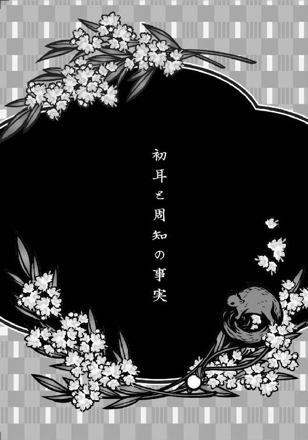
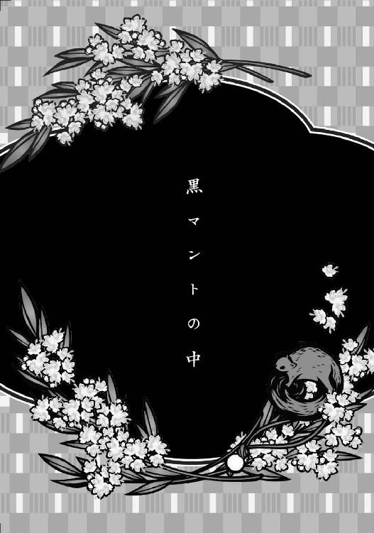

| 浄天眼謎とき異聞録 ～双子真珠と麗人の髪飾り～ (マイナビ出版ファン文庫) | |
| 一色 美雨季 | |
| 株式会社マイナビ出版 (2018) | |
本書はリフロー形式で制作されています。本文は文字の書体と大きさを変えることが出来ますので、お好みの設定で読書をお楽しみください。
北原由之助
浅草にある『大北座』の跡取り息子。少し前まで燕石宅に住み、世話役をしていた。歳が十もちがう燕石とは「燕石」「由之助」と呼び合う。
魚目亭燕石
戯作者として身を立てており、本名は柳谷龍吾。触れるだけで心や出来事を見通すことができる摩訶不思議な力"浄天眼"を持つ。
根本千代
燕石宅の女中であり、燕石の婚約者。料理や掃除、大工仕事までなんでもこなす。才色兼備の美女。
相良光太郎
深川署の警部補。燕石の遠縁であり幼馴染み。日々浅草界隈で起こる事件を捜査している。かつて燕石の世話役を由之助に依頼した。
柳谷翠子
高級料亭『燕柳館』の令嬢で燕石の妹。天真爛漫な性格で、由之助や燕石のもとへ押しかけてくることもしばしば。

嵐は、思いもかけない瞬間に訪れた。
その日、北原由之助は、浅草界隈にある劇場『大北座』の昼公演のもぎりを手伝っていた。
由之助は大北座頭取の跡取りであり、現在は頭取である兄・由右衛門の右腕として舞台裏を取り仕切っている。ゆえに、普段なら表に顔を出すような仕事は極力しないようにしているのだが、もぎりを担当する若い裏方衆が腹痛を起こしたので、急遽、劇場入口に立つことになってしまったのだ。
大北座は、界隈でも飛び抜けて人気の劇場だ。開演前ともなれば、芝居を楽しみに来るお客は勿論のこと、それに集るスリにタカリ、淫売婦といった下衆な連中まで押し寄せてくる。
とりわけ今日は、男装の女優が出演する注目の舞台の初日だ。
「ひとくちに男装といっても、そこは天下の大北座、女優が男の衣装を着用する程度のものを披露するはずがない」
「はてさて、今回は一体どんな趣向を凝らしてくるのか」
「初日に見ときゃあ、ちょいとした自慢の種にできるだろう」
広目屋が配る広告ビラにも、今回はとりわけ派手な宣伝文句をつけた。首尾は上々、そして狙いどおり、好奇心をくすぐられた大衆が、我先にと劇場への列を作っているのだ。
いらっしゃいませ、いらっしゃいませと繰り返しながら、由之助は次々と差し出される券を半分にちぎっていく。券を持つ客の列は通りの方まで延びていて、果たして開演時刻までに処理しきれるのかどうか不安なところだが、それでもやるしかない。
「坊ちゃん」
行列の半分ほどが劇場内に入ったところで、不意に由之助は、背後から肩を叩かれた。
振り返ると、裏方衆の寛太が立っている。
「ここは私が代わりますので、至急、頭取室にお戻りください」
「なんで？」
「燕柳館の翠子様がお越しです」
「それなら、小梅に会いに来たのでは？」
日本橋界隈で一、二を争う高級料亭の令嬢である柳谷翠子と、由之助の許婚で、大北座の優秀な針子である小梅は、生まれ育った環境はちがえど馬が合う。
とにかく、「いつものことだから」と、由之助は仕事に戻ろうとする。すると寛太は、「いえ、それが〝ただならぬご様子〟でして」と、慌てて由之助を引き止めようとする。
由之助は小首を傾げた。
「ただならぬって、そんなに様子がおかしいのかい？」
「ええ、それはもう」
翠子といえば、そもそもが一般的な令嬢像とは大きくかけ離れた〝ただならぬ娘〟だ。それをわざわざ「ただならぬ様子」と形容するからには、これはよほどのことにちがいない。
「分かった。すぐに行きます」
列を成す客を寛太に任せ、由之助は頭取室のある二階まで走った。
目指すは、摺り硝子の嵌め込まれた木製扉。
「失礼します」
早口に言って扉を開けると、複数の「由之助さん！」と叫ぶ声が同時に耳に飛び込んできた。
見ると、来客用の革張りの椅子には、庇髪に大きなリボンも華やかな、袴姿の女学生が腰かけている。これが件の翠子であり、普段は破天荒という言葉でしか形容できないほどのじゃじゃ馬娘なのだが、これが珍しくシクシクと涙にくれている。由之助の名を呼んだのは小梅と針子部屋の古株・お信で、こちらも今までに見たことがないほど途方にくれた表情で由之助に視線を寄越す。
なるほど、これは寛太の言うとおり〝ただならぬ〟様子だ。
「ええと、いらっしゃい、翠子さん。どうしたんです？ なにかあったんですか？」
探るように由之助が聞くと、翠子は握り締めていたハンケチをテーブルの上に叩きつけ、「どうしたもこうしたもないわよ！」と金切り声を上げた。
「ち、千代が！ 私の千代が、お嫁に行くって言うのよ！」
「ああなんだ、そのことですか」
いつもの調子に戻った翠子を見て、やれやれ、と由之助は頭を搔いた。
翠子が言う「千代」とは、翠子の兄・魚目亭燕石の家で女中をしている根本千代のことだ。
本来なら燕柳館を継ぐべき立場であった燕石は、今は実家を出て、深川の別宅で戯作者として生計を立てている。そこで女中をしている千代は、もともと翠子の子守として燕柳館に奉公していた女だ。
しかしながらこの千代、奉公したての幼い頃より、そんじょそこらの女中とは一味も二味もちがう女中だった。ひと言で言えば才色兼備、花柳界の名高い美女とも引けを取らぬほど美しいうえに、教養が深く、加えて料理洗濯掃除などの家事は勿論のこと、大工仕事までこなす器用さを持ち合わせている。つまりは、色々な場面で快刀乱麻の活躍を見せる、至極万能な女中なのだ。
そんな千代を、燕石が燕柳館から別宅へ連れ出して早三年。既に千代は「翠子の女中」ではなく「燕石の女中」なのだが、千代を実の姉のように慕う翠子にとっては、いまだにそれが許せないらしい。なにかにつけては「千代を返せ」と、けたたましく燕石に迫っているのだ。
ところが、翠子のところに返すどころかとうとう嫁にやってしまうというのだから、翠子が怒らないはずもない。しかも翠子は、怒りのあまり、誰にもなにも言わずに家を飛び出してきたのだと言い飛ばす。翠子らしいと言ってしまえばそれまでだが、普通なら、これは良家の令嬢にあるまじき行動だ。寛太が「ただならぬ様子」と言うのも無理はない。
「ところで由之助さん、『ああなんだ』ってどういうことかしら？ もしかして、千代がお嫁に行くことを知っていたって言うの？」
血走った目でじろりと睨まれ、一瞬、由之助は口ごもる。しかし、千代の嫁入りが決まった以上、噓をついても仕方ない。
「実を言いますと、先々月のことでしたか、燕石から話を聞きました。千代さんには心に決めた男がいて、その男のところに嫁ぐのだと」
「な、なんですってっ？」
翠子は素っ頓狂な声を上げる。
最近は大北座の仕事が忙しいため、深川の燕石の家には時折顔を覗かせる程度になっているのだが、かつて由之助は、その燕石のもとに世話役として住み込んでいた。
燕石というのは、世間ではそれなりに人気の戯作者なのだが、出不精のうえに少々わけ有りの男で、あだやおろそかな人物では世話役は務まらない。由之助は商売柄、口が堅い。それゆえに燕石の由之助に対する信頼は厚く、このような重大な話でもサラリと語ってくれるのだ。
「濱田古書店の店主が持ってきた縁談も、千代さんはその男のために断ったんですよ。まあ、いいじゃないですか。好いた男のところに嫁ぐんだから」
「そんな！ 駄目よ！」
翠子は両手で自分の顔を覆い、わっと大きな声で泣き出した。
小梅は自分のハンケチを取り出し、「もう泣かないでくださいな」と翠子の涙を拭ってやるが、その涙は一向に止まる気配を見せない。
堪まらず由之助は、「反対ばかりしていたら、千代さんが可哀想ですよ」と言う。
「そもそも、翠子さんは相手の男を知っているんですか？」
「ええ！ 知っているわよ！ 知り過ぎてて嫌になるくらいよ！」
翠子はまた由之助を睨みつけた。
しかし由之助も怯むことなく、「へえ、そうですか。では、千代さんの心に決めた男って一体どんな男なんです？」と再び問い返す。
「一体どんな男って、由之助さん、なにを言ってるのっ？ 兄さんからちゃんと話を聞いたんでしょう？ もしかして私をからかっているのっ？」
「嫌だな、からかってなんかいませんよ。相手がどういう男なのか燕石が教えてくれなかったので、翠子さんから教えてもらおうと思っているだけです」
「ふざけないで！ それじゃあなにも知らないのと同じじゃない！」
怒れる翠子は椅子から立ち上がり、憤然と声を上げた。
「千代の心に決めた男って、兄さんのことよ！ 私の兄の魚目亭燕石！」
「――え？」
由之助は耳を疑った。いや、由之助だけでなく、その場にいた小梅も、驚きに身を固めた。
翠子の言葉を平然と受け止めたのはお信ただひとりで、「やっぱりねえ。まあ、そんなところだろうと思っていましたよ」と、まるで夕餉の献立でも聞くような顔で薄笑いを浮かべる。
「なにはともあれ、あのおふたりが夫婦になるなんて、おめでたいことじゃございませんか。さてさて、うちの頭取達が帰ってきましたら、お祝いの相談を致しませんとね。なにがよろしいでしょうかしらね」
「ちょ、ちょっと待って！」
慌てて、由之助はお信に向き直る。
「お信は知っていたんですか？」
「知るわけございませんよ。でもまあ、男と女の仲なんて、所詮はそんなものですし」
「そうは言っても、普通の男女の関係じゃないんですよ？ だって、顔を合わせるどころか、ずっと口を利くことだってなかったんだから」
由之助が深川の燕石宅にいた頃、主人と女中であるにもかかわらず、燕石と千代は会話をすることも、顔を合わせることもなかったのだ。
そんな状況で、なぜふたりが結婚することになったのか。どれだけ考えても見当がつかない。
しかしお信は、「あら嫌だ、なにを野暮なことを」と、呆れたように大きな溜め息をつく。
「坊ちゃんは燕石先生のお宅で、今まで一体なにを見てきたんです？ おふたりは口を利く必要がないほど心が通じ合っていたと、このように考えればいいことじゃあございませんか。あらまあ困ったこと。この程度の男女の機微も理解できなくて、この先、大北座の跡取りが務まるんでしょうかねえ」
針子部屋の主であるお信の言葉は、針山の縫い針のように、チクチクと由之助を刺してくる。
いやでもそれは、と由之助は口ごもった。すると次の瞬間、「嫌あ！ もうやめて！」と翠子が金切り声を上げた。
「千代と兄さんが心を通じ合わせているなんて嫌よ！ 千代は私の女中なのよ！ 今は駄目でも、そのうち私のところに返してもらうつもりでいたのに！」
「おやまあ、燕柳館のお嬢さんともあろう方が、なんと往生際の悪いこと」
お信は駄々っ子を窘めるかのように口の端を歪める。
「そんなことばかり仰っていますとね、そのうち馬に蹴られて死んじまうことになりますよ」
「だって、嫌なものは嫌だもの！ 兄さんなんて、千代におしめを替えてもらったことも、おんぶや抱っこをしてもらったこともないじゃない！ それなのに、どうして私の千代を奪ってしまうの！」
すると、お信は急に表情を変え、ふふ、と意味ありげに小さな笑い声を上げた。
「な、なによ！ なにがおかしいのよ！」
「だってねえ、お嬢さんときたら面白いことを仰るじゃありませんか。そりゃね、燕石先生は、千代さんにおしめを替えてもらわれたことも、おんぶをしてもらわれたこともないでしょうよ。でもね、抱っこに関しては分かりませんよ。もしかしたら経験がおありかもしれません。もっとも、お嬢さんが千代さんにしてもらわれた〝抱っこ〟とは、ちょいとばかり意味合いがちがうものになるでしょうがねえ」
その瞬間、翠子と小梅の顔が見る見るうちに赤く変化した。
慌てて由之助は、「もうそれ以上言わないでくださいよ！」と、お信を窘める。年寄りの悪い癖だ。突拍子もないところで若い娘をからかってしまうのだ。
しかし、どれだけ由之助が窘めたところでもう手遅れ。小梅は顔を真っ赤にしたまま身を竦め、翠子は同じく顔を真っ赤にしたまま、うわあああん！と咆哮のような泣き声を上げた。
こうなると、もう手の施しようがない。身を竦めているだけの小梅はともかく、翠子の方は気持ちが収まるまで思う存分泣き喚かせるしかない。翠子の制御方法を知っているのは、翠子専属の子守女中であった千代だけなのだから。
それにしても、開演直前の忙しい時になんてことだろう。ここはひとまずお信に任せて、自分は劇場に戻ってしまおうか。由之助がそんなことを考えた――その時。
「ご免くださいませ」
頭取室の扉が開くと同時に、若い男の声が響いた。
燕柳館の中番頭・栄吉の声だ。
「ああ、やはりここでしたか。由之助さん、小梅さん、お信さん、うちの馬鹿お嬢様がご迷惑をおかけして申し訳ありません」
栄吉は折り目正しくお辞儀をすると、ツカツカと翠子のもとに歩み寄った。そして懐から手拭いを取り出したかと思うと、「いい加減に泣き止みなさいませ」と言って、無表情のままグシグシと手拭いで翠子の顔をさすった。
「い、痛いわ、栄吉！ なにするのよ！」
「涙および鼻水を拭き取っているだけでございます。普段より馬鹿丸出しのお顔が、あろうことかさらに汚れておいででしたので」
翠子を探し回った苛立ちが混ざっているのだろう、日頃から翠子に対して毒のある言葉を放つ栄吉だが、今日はそれに加えて行動も荒々しい。
それというのも、栄吉は翠子の幼馴染みであり、かつ許婚でもあった。奉公人とは思えぬ言動にも、こういった事情があるからだ。
「お嬢様が突然屋敷を飛び出していって、燕柳館の者がどれだけ心配したかお分かりですか」
「だって、だって......！」
「いえ、お嬢様の心配をしているのではありませんよ。お嬢様に迷惑をかけられる方々の心配をしているのです。皆様、よくぞご無事で」
由之助達に向かって頭を下げる栄吉は、翠子に対してどこまでも辛辣だ。
これ以上、翠子を興奮させることはよろしくないと感じた由之助は、咄嗟に「翠子さんがここにいるって、よく分かりましたね」と話の腰を折る。
すると栄吉は、「小梅さんのところに泣き言を言いに行ったか、若旦那様のところに殴り込みをかけに行ったか。思い当たる節は、このふたつしかありませんでしたから」と、あっさり答えた。
「馬鹿お嬢様の性格から鑑みて、てっきり殴りこみの方だと思っておりました。しかしながら、それはまちがいだったようですね。向かった若旦那様のお宅で、馬鹿お嬢様は来ていないと言われましたから。どうやらこの馬鹿お嬢様も、少しは成長していたようです」
「ちょっと栄吉！ 馬鹿馬鹿うるさいわよ！」
翠子は手拭いを奪うと、その手拭いを勢いよく栄吉の胸に叩きつけた。
「父さんと母さんから聞いたわ！ 兄さんと千代のことを知らなかったのは、うちで私だけだったっていうじゃない！」
「知らなかったというより、気づいていなかったのが馬鹿お嬢様だけだったということです」
真顔で至極平然と答える栄吉に、「なんですって？」と翠子は詰め寄る。
するとお信が、「だから言ったじゃありませんか。男と女の仲なんて、所詮はそんなものだって」とまた口を挟んだ。
しかし、翠子にはまだ理解できない。
「所詮って一体なんなの？ みんな知ってたなら教えてくれればいいじゃない！ そうしたら私、千代を止めたのに！」
「ですからね、周囲が止めてどうにかなる程度のものでしたら、夫婦になろうなどとは考えないでしょうよ」
呆れ顔のお信に、「そのとおりです」と栄吉も同意する。
「さて、不可能なことは承知で申し上げますが、馬鹿お嬢様も少しは冷静なって考えてみてはいかがですか？ 千代さんが若旦那様と夫婦になられるということは、一体どういうことなのかと」
「冷静にならなくたって分かるわよ！ 千代が永久に私のもとに戻ってこないってことじゃない！」
「ああ、だから馬鹿だと申し上げているのです。よろしいですか、若旦那様と千代さんが夫婦になられるということは、つまり、千代さんが馬鹿お嬢様と縁戚関係になるということです。もっと嚙み砕いて言えば、千代さんは『馬鹿お嬢様の女中』から『義姉』になるということなのですよ」
「......え？」
一瞬、翠子の動きが止まった。
翠子はなにかを確認するようにゆっくりと小梅を振り返り、そして、もう一度栄吉に向き直る。
「千代が、私の義姉になるの？」
「おや、分かっていなかったのですか？ やはりあなたは本物の馬鹿お嬢様だったのですね」
栄吉の毒舌にも、もう翠子は反発しない。ぽうっと顔を赤らめ、恥らうように自分の頰を両手で包む。
「千代が私のお義姉様......」
「はい」
「......なんだか、悪くないような気がしてきたわ」
翠子のつぶやきに、栄吉は大きく頷いた。
「ええ、然様でございましょうとも。女中は突き詰めれば他人の関係になりますが、実兄の妻となれば、完全なる身内ですからね」
「千代が私の身内......」
「たしかに千代さんが馬鹿お嬢様のもとに戻ってこないことにちがいはありません。しかしながら、他人となって離れていってしまうのと、身内となって別世帯で暮らすのとでは、まったくもって状況がちがいます。まあ、それでもお嫌ということでしたら、どうぞ若旦那様のもとへ殴り込みにお行きください。若旦那様も、愚妹に殴られるのは覚悟の上だと仰っておられましたので」
すると翠子はハッと表情を変え、「い、嫌だわ！ 行くわけないじゃない！」と大きく首を横に振った。
「だいたい、私が兄さんを殴ったことなんて一度でもあって？」
「なかったと言えば大噓になりますが、ここは馬鹿お嬢様の外聞を守るため、『若旦那様を殴ったことなど一度もない』と申し上げておきましょう」
なかなかに酷い肯定の言葉を吐きながら、栄吉は涙と鼻水まみれになった手拭いを懐に仕舞った。
翠子の涙は、すっかり止まっていた。翠子の制御方法を会得しているのは千代だけだと思っていたが、どうやらそれは由之助の勘ちがいだったらしい。
さすがは栄吉だ、と由之助は感心する。ただし栄吉のそれは、自然のままに落ち着かせる千代とはちがい、少々手荒いものではあったが。
ズズッと鼻水を啜り上げると、翠子はその勢いのままに立ち上がり、「帰るわ」と栄吉に向かって言った。
「小梅さん、お信さん、それに由之助さん。お忙しい時にお邪魔してごめんなさいね。私、もう大丈夫だから」
「そりゃそうでございましょうよ。これで燕石先生と千代さんを離縁させるなんて仰った暁には、馬に蹴られるどころの騒ぎじゃなくなっちまいますよ」
お信の厭味に、ふふん、と笑みを返し、翠子は「それではご機嫌よう」と言って、栄吉と共に頭取室を出て行った。
頭取室は、ようやくいつもの静けさを取り戻した。聞こえてくるのは、外のざわめきだけだ。
「やれやれ。まったく嵐のようなお嬢さんですこと」
お信の言葉に、由之助も同意する。翠子はいつもこんな感じだ。あの嵐のような性格は、おそらく大人になっても治まることはないだろう。
――それにしても......。
「本当なのかな......」
由之助の小さな独り言に、小梅が「燕石先生に、直接お伺いになったほうがいいと思います」と言う。
「とてもおめでたいことですし、素敵なことだと思うんですけど、なんだか私、夢の中の話を聞いているようで......」
「俺もそうだよ」
由之助は頷いた。
翠子からのみならず、栄吉からも事情を聞いたので、これは覆しようのない事実であることはまちがいないだろうが、それでもまだ信じられない気持ちでいる。
あの燕石が、まさか千代と夫婦になるなんて。
「お伺いになるのはよろしいですが、あまり水を差すようなことは仰るんじゃないですよ。なんせほら、燕石先生は人様と少しばかりちがう方でいらっしゃいますからね。ちょっとしたきっかけで、折角のお気持ちが変わっちまうかもしれませんからね」
「分かってるよ」
お信の言葉にそう返しながら、由之助は頭取室をあとにする。
胸ポケットから取り出した懐中時計に目をやると、既に時刻は開演十分前になっていた。そろそろ劇場前の行列は途絶え、劇場内に通された観客達は座席に腰をおろしていることだろう。
廊下の途中で、大部屋の女優達と擦れちがった。今回の目玉となる男装の女優を先頭に、皆、慌しい様子で由之助のそばを駆け抜けていく。
もうすぐ幕が上がる。その華やかな緞帳を上げるべく、由之助は気持ちを切り替えた。
§
由之助が、深川の燕石の家を訪れたのは、翠子が大北座の頭取室で大騒ぎをした翌日のことだった。
偶然にも千代は買い物に出かけて留守をしていた。
由之助は勝手知ったるなんとやらで、「ごめんください、由之助です」と、玄関で名乗り上げると同時に部屋まで上がり込む。すると、机に向かって筆を走らせていた燕石が顔を向けた。
「おや由之助、来たのかい。栄吉から聞いたよ。昨日、翠子が迷惑をかけたようだねえ」
「迷惑ではありませんよ。むしろ、とても重大な話を聞くことができました」
すると燕石は顔を強張らせ、コホン、と小さく咳払いをした。
「......それで？」
「では、単刀直入に言いますね。僕は今日、昨日の翠子さんの言っていたことが本当なのかどうか確かめに来ました」
燕石は口をへの字に曲げ、自分の頭をぐしゃぐしゃと搔き毟った。
「......勘弁してくれないか」
しかし、この程度の懇願で、由之助の追及が止まるわけもない。
「勘弁ってなんです？ 俺は、本当に燕石と千代さんが夫婦になるのかどうか知りたいだけなんですが」
「それは......うん、まあ、そういうことだ。だから、もう、それ以上は......」
歯切れの悪い燕石に、「だから！ きちんと教えてくださいよ！」と由之助は詰め寄る。
「千代さんが心に決めた男って、燕石のことだったんですか？ 燕石は以前、自分の知らない男だって言ってたじゃないですか」
「いや、ちがうんだよ、それは......」
「どうして千代さんは燕石と夫婦になることになったんです？ あ、そうか、ちがうってことは、つまり千代さんは、この短期間で別の男から燕石に心変わりをしてしまったということなんですね？」
「ち、千代はそういう女ではないよ」
「それなら、どうして」
さらに詰め寄ると、燕石はなにを思ったのか、いきなり窓硝子をガラリと開けた。
途端に轟々と風が吹き込み、文机の原稿用紙をバサバサと舞い上がらせる。
「ああ、これは大変だ」
燕石は立ち上がり、天井付近から落下してくる原稿用紙を、大仰な仕草でかき集め始めた。
当然、話をごまかすための行動なのは分かっているが、しかし大北座の跡取り息子である由之助が、この程度の三文芝居に流されるはずもない。
「言いたくない気持ちも分からなくはないですが、そうやって大事な話を打ち消してしまうのは、燕石の良くない癖ですよ。第一、事を曖昧にしたままじゃ、千代さんが可哀想じゃないですか」
由之助の冷静な叱責に、燕石はピタリと動きを止めた。
そして、原稿用紙を抱えたまま神妙な顔で正座をし、「申し訳ない」と頭を下げる。
「噓をつくつもりはなかったんだが......その、どうにも言い出しにくくてね」
「どういうことです？」
「ええと、つまりだね、まあなんと言うか、ほら、由之助にも経験があるだろう？ 自分の体面を保つために、咄嗟にごまかそうとしてしまうことが」
さあ、と由之助は首を傾げる。自分のこれまでを振り返ってみるが、とくにそういった記憶はない。なにせ、人生の殆どを大北座で過ごし、外部の人間とあまり関わりを持たなかった由之助だ。体面を保つための噓なんて、今まで口にする必要がなかったのだ。
燕石は窓を閉めると、手にした原稿用紙を文机の上に戻した。
そして、「これは慶賀の至りということで、どうかこのたびのことを......千代を、祝ってやってはくれないか」と頭を下げた。
「今までのことは、全て私の不徳が招いたことだ。この家に移り住んだ時からこうなるべきだったのに、私が千代の気持ちを誤解し、その誤解に固執してしまったから......」
「え？」
ふと、由之助は思い出す。
以前、燕石は、かつて心底惚れた女がいたと話していた。けれど、初めて肌を合わせようとした時に、燕石は己の持つ摩訶不思議な力――浄天眼――で、うっかり女の心の中を見てしまい、それ以降、女は燕石の前から姿を消したと言っていたが......。
「あの......もしかして、燕石が房事に失敗した相手って、千代さんのことだったんですか？」
その瞬間、燕石の顔が真っ赤になった。
ということは、千代が心に決めていた男というのは、やはり燕石のことでまちがいなかったのだ。
「じゃ、じゃあ、心底惚れた女が自分の前から姿を消したというのは、噓だったということですか」
「い、いや、まあ、それは噓ではないだろう。ほら、私は相手の女が遠くに行ったなんてひと言も言ってないし、たとえ同じ家の中にいたとしても、千代が私の前に姿を見せなくなったことにはまちがいないのだから」
「ええ！ どういう言い訳ですか、それ！」
呆れる由之助に、燕石は「すまない、すまない」と小さく頭を下げる。
しかし、ようやくこれで納得ができた。今までのことは、全て気まずさからくる言葉なり行動なりだと考えれば、それはそれで燕石らしい話だ。
由之助は居住まいを正し、「では改めて」と、燕石に向かって手をついた。
「このたびは、おめでとうございます」
「あ、ありがとう」
「千代さんとの仲違いが終わってよかったですね」
由之助の言葉に、燕石は顔を真っ赤にしたまま、無言でコクリと頷いた。
その子供のような仕草に、思わず由之助は声を上げて笑ってしまった。
窓硝子越しに、祭囃子を練習する近所の子供達の賑やかな声が聞こえる。
太鼓に、笛に、鉦を響かせ。
さて、吉日は目前だ。
そしてそれは、燕石と千代にとっても同じこと。
花燭のごときふたりの幸せの緞帳が、もうすぐ華やかに上がるのだと、由之助は思った。

燕石と千代が夫婦になると聞いてから、三日後のこと。
由之助は大北座から少し離れた通りをのんびりと歩いていた。
馴染みの広目屋に行った帰り道だった。にわか雨のあとの通りには水溜りができており、空気はじめじめとして鬱陶しかったが、それでも由之助の気持ちは晴れやかだった。
と言うのも、燕石と千代への祝いを考えていたからで、普通なら酒や尾頭付きの鯛でいいのだが、ここはひとつ西洋風に、なにか形に残る物を贈った方がいいのではないかと思っていた。
その考えに至ったのにはわけがある。実は、燕石が祝言を挙げる予定はないと言ったからだ。しかも、そう言い出したのは、燕石ではなく千代の方かららしい。
曰く、燕石は昔から派手なことを嫌う性格だし、そもそも既にふたりで暮らしているのだから、今更必要もないだろうと言うのだ。
ふたりが納得しているならそれでいいと思うし、今更と言う千代の考えも分からないではないのだが、ただ......ひとつだけ、引っかかることがある。
祝言を挙げる予定はないと言った燕石の顔に、どこか戸惑いの影が見えたからだ。
千代の提案にのってはみたものの、もしかしたら燕石は、密かに祝言を挙げたかったのではないだろうかと由之助は考える。
これから妻となる千代に一廉の晴れ舞台を用意してやりたいという思いもあるだろうし、なにより、燕石自身が千代の花嫁姿を見てみたいというのもあるだろう。由之助にだって小梅の花嫁姿を見てみたいという気持ちがあるのだから、燕石にだってないわけがない。
しかし、ああ見えて千代は頑固だ。言い出したからには、頑としてそれを覆すようなことはしないだろう。
「かかあ天下になりそうだなあ......」
思わず由之助が含み笑いを漏らしたその時、ふと、通りの向こうに見なれた人影を発見した。
裏方衆の寛太だ。
「坊ちゃん！ 大変ですよ！」
大きく腕を振りながら、寛太は大慌てで由之助のもとに走ってきた。
「どうした？」
「それが、燕石先生のところから、遣いの坊主が来まして。詳しいことは分かりませんが、とにかく坊ちゃんに、大至急燕石先生のお宅に来ていただきたいそうです」
燕石は急用の際に、近所の子供に遣いを頼むことがある。しかし、それは滅多にないことで、だからこそ寛太も、慌てて由之助を迎えに来てくれたのだろう。
「分かりました。じゃあ、今から深川に向かいます」
由之助は踵を返した。
その瞬間、爪先が水溜りにかかり、跳ね上げた泥水が由之助のズボンの裾を汚した。
思わず舌打ちする。
胸がざわついた。
急く足を、由之助は次第に駆け足へと早めていく。
ああ、きっとこれは、燕石のもとに厄介事が舞い込んだ兆しなのだろうな、と、わけもなく予感めいたものを感じながら。
§
深川の別邸で由之助を出迎えてくれたのは、燕石でも千代でもなく、警部補の相良光太郎だった。
相良は燕石の遠縁であり幼馴染みで、また、大北座とも親密な付き合いがある人間だ。
それというのも、大北座は華族や文人墨客が足繁く通う劇場で、芝居が跳ねる時間になると、劇場前には、上客を狙う高級街娼、そのおこぼれをくわえ込もうとする下衆な淫売婦、さらにはスリ、タカリ、そのほかの悪漢などが大勢押し寄せてくる。場合によっては、大きな騒動に発展することもないわけではない。
基本的に、そういった劇場外でのことは大北座には関係ないのだが、時にはやむなく巻き込まれてしまうこともあり、そういった際は、大北座は〝特別に〟相良の世話になっているのだ。
そして、この相良こそ「燕柳館の若旦那は、〝浄天眼〟なんです」と言って、燕石の世話役を由之助に頼んだ張本人だ。
浄天眼は、またの名を〝千里眼〟とも呼ぶ摩訶不思議な力のことだ。仏教の神である広目天が持つ特殊な力と言われているが、燕石の場合は少々ちがい、相手や物に触れただけで、かつての記憶や出来事、感情を読み取ることができるのだという。
当然、それは普通の人間にはあるはずのない力なわけで、だからこそ燕石は、家業などお構いなしに、この別宅に引き篭っているのだが。
「由之助さん、すみませんね。燕石と千代は、ちょっとバタバタしているもので」
申し訳なさそうに言う相良に、由之助は「なにかあったんですか？」と聞く。
相良は一瞬言い淀み、あからさまに作り笑いと見える笑みを浮かべ、「実は、千代の弟が来ているんですよ」と言った。
「え？ 千代さんの弟さんが？」
千代の弟といえば、赤ん坊の頃に囲炉裏に落ちて大火傷を負い、千代が奉公に出る原因を作った人物だ。由之助と歳が近く、確か十八になると聞いている。
千代本人は弟をかわいがっていると聞いているし、実姉を訪ねてくるのもおかしなことではないのだが、一体なにがあったというのだろうか。
「千代の弟......宗市と言うのですけどね、その宗市が、どうやら、ちょっとばかり厄介事に巻き込まれているようでして」
やはり由之助の勘は当たっていた。「それで？」と聞くと、相良は「とりあえず風呂に入れて、今、飯を食わせているところです」と答える。
「宗市の動揺が激しいので、宗市と歳の近い由之助さんにも来ていただいたのですよ。大人ばかりの中では、宗市も気後れして言いたいことも言えなくなってしまうと思いまして......。まあ、玄関ではなんですから、どうぞ上がってください。宗市も、そろそろ飯を食い終わる頃でしょう」
促されるまま、由之助は家に上がる。宗市は千代の部屋にいるという。
夫婦になるというのに、いまだ部屋を別にしたままとはなんと律儀な、と由之助は思ったが、まあ今はそんなことどうでもいい。
「燕石、入るぞ」
相良が襖を開けると、狭い部屋には燕石と千代が並んで座っており、その正面に、ちょうど襖に背中を向けるようにして若い男が座っていた。
振り返った男の顔を見て、由之助は驚いた。千代とそっくりな顔をしている。役者跣の美しい男だ。この男が宗市と考えて、まずまちがいないだろう。
「やあ由之助、忙しいのにすまないね」
「あ、いいえ......」
そう答えつつ、由之助は千代と肩を並べている燕石にも動揺を覚える。
このふたりは夫婦になるのだと頭では分かっているのだが、まさか本当に並んでいる姿を見ることができるなんて、かつては想像することさえできなかったからだ。
「あ、あの......」
宗市は体を強張らせ、震える瞳で由之助を凝視していた。千代はそんな宗市に向かい、「怖がらなくても大丈夫。この方が由之助さんですよ」と言う。
「ほら、以前、手紙に書いたことがあったでしょう？ 少し前まで、この家で家族のように暮らしていらっしゃった方ですよ。大丈夫、安心なさい」
千代の言葉に安堵したのか、宗市はようやく強張りを解くと、無言のまま三つ指をつき、深々と頭を垂れた。
慌てて由之助は、「そういった堅苦しい挨拶はやめましょう。それで......あの、なにがあったんですか？」と聞く。
すると、また宗市は体を強張らせた。強張りのあまり大きく肩が震え、瞳には分厚い涙の膜を湛える。
そんな様子を見かねたのか、相良が口を挟んだ。
「この由之助さんも、君と同じ勤労青年だ。家業を継ぐために、日々ご苦労なさっているんだよ。そういえば、近頃の東亰では堕落書生が跋扈していてね。彼奴らときたら、働きもせず勉学にも勤しまず、そこら中で問題ばかり起こしている。まったく、君達の爪の垢でも煎じて飲ませてやりたいものだよ」
宗市の緊張を解きほぐそうとでも思ったのか、相良は軽い世間話を始めた。
しかし、それでも宗市の表情は変わらない。
頑なに口を噤んだままの宗市に、由之助はそっと尋ねる。
「......言いづらいことなんですか？」
聞いてから、ああしまった、と由之助は心の中で舌打ちをする。言いづらくて当たり前だ。容易く言えることなら、由之助が呼び出される必要もないだろうから。
見かねた千代が、宗市の肩に手をやり、「わざわざ来ていただいたのだから、由之助さんにもお話しなさい」と諭すように言う。
「宗市に後ろ暗いところがないのであれば、きちんとお話しできるでしょう？」
「でも」
なおも躊躇う宗市に、由之助はずいずいと膝でにじり寄った。
「俺の口の堅さを心配しているのなら、どうか安心してください。商売柄、口だけは堅いんです。どのくらいかというと、警察官である相良さんからお墨付きをもらえるほどです。燕石だって、俺にだけは、誰にも言えない自分の秘密を打ち明けてくれるんですから」
「え？」
宗市の表情が僅かに変化した。
ここぞとばかりに燕石が、「お恥ずかしながら、そのとおりだ。由之助という人間は、人の心を楽にする不思議ななにかを持っている奴でね」とたたみかける。
「だから私も、由之助にだけは、ついつい悩み事を打ち明けてしまうのだよ。打ち明け話というのは、閉塞した重い心を軽くする作業のことだ。それが信頼できる相手ならなお良くて、心を軽くするだけでなく、悩み事を解決の方向に導いてくれることもある。君は、姉である千代を信頼し、そして訪ねてきてくれたんだろう？ それなら、千代が信頼している私のことも信頼してくれないか。そして、私が信頼している相良や由之助のことも信頼してくれないか」
燕石の言葉に、宗市の表情が完全に変わった。
千代は「皆さん、宗市の味方なんですよ」と、励ますように宗市の背中を強くさする。
「大丈夫。たとえ宗市がなにを言ったとしても、穿った考えをするような方は、ここにはひとりもいらっしゃいませんから」
とどめのような千代の説得に、ようやく宗市はこくりと頷いた。そして意志を固めるかのように大きく息を吸い込むと、その美しい顔には似つかわしくない嗄れ声でボソッとつぶやいた。
「......私は、人殺しとして、警察に追われています」
「え？」
一瞬、由之助は耳を疑った。
それに気づいた宗市は、慌てて「勿論、人を殺してなんていません」と言葉を付け加える。
「それなら、どうして警察に追われているんですか？」
「それは......」
尚も言い淀む宗市に、千代は「きちんとお話ししないと、由之助さんも混乱なさいますよ」と言う。
「でも、姉さん、甚兵衛さんのことは......」
「甚兵衛さんって、誰ですか？」
突然出てきた名前に、由之助は軽く食いついた。どうやら宗市の心を悩ます重要人物のようだが、けれど宗市は、まだ自分の口から説明する勇気がないらしい。
代わりに千代が、「私達の故郷である千葉の浦安村には、『黒マントの甚兵衛さん』と呼ばれる方がいらっしゃるんです」と説明をする。
「その甚兵衛さんが、一体どうしたんですか？」
「そ、それは、あの......」
「はい」
「......こ......殺されました......」
蚊が鳴くような宗市のつぶやきに、由之助は瞠目をした。
そして宗市は、そこからぽつりぽつりと、まるで悪い白昼夢でも語るかのように事のあらましを語り出した。
甚兵衛が殺された日の朝、宗市は普段と変わらず畑仕事をしていた。
事件のあった当日は、前日までの雨模様もあって、野の秋虫も鳴き声を潜めるほど朝から蒸し暑かった。
宗市は早朝から鍬を使い、根野菜を植えるための畝作りをしていた。
その畑は、昨年より宗市がひとりで耕作を任されている場所だった。作付けから収穫まで全てひとりで行わなければならないという苦労はあるが、一人前として認められたという達成感と充実感から、宗市はその苦労を、逆に心地よいものとして考えていた。
周囲の畑にも、宗市と同様に鍬を使って畑仕事をしている者がたくさんいた。いつもと変わらない日常の風景。ただ、ひとつだけちがっていることがあった。
黒マント姿の甚兵衛が、畦道にじっと立っていたのだ。
殺された甚兵衛は、本名を立石甚兵衛という中年男で、宗市達の地元では知らぬ者のいない、資産家で名士一族のひとり息子だ。
甚兵衛は、生来の暗愚だった。
子供の頃から「薄ぼんやり」と陰口を叩かれていたが、けして頭が弱いのではなく、他人と比べてあまりにも心根が清過ぎた。おそらくそれは自分でも自覚があったのだろう、二十歳になったばかりの頃、急に「自分は一族の当主など向いていない」と言い出し、立石の本家の家督を従兄弟の光三に譲って、下男とふたりで村外れの別宅に暮らし始めた。
そんな甚兵衛の日課は、朝になると、高級な梳毛織物の黒マント姿で通りに出て、学校に通う子供達を見守ることだった。「黒マントの中に子供を隠し、連れ去ろうとしている」と噂されたこともあったが、実際は案山子のように突っ立っているだけで、そのような素振りなど見せたこともない。十年以上もそんなことをしているので、誰もが「単純に子供を愛でているだけなのだろう」と思っており、宗市もまた、そう考える者のひとりだった。
甚兵衛は暗愚ゆえに、誰に対しても人畜無害の人間だった。
しかし、その甚兵衛が、ある日突然、何者かによって殺されてしまったのだ。
甚兵衛の遺体を見つけたのは、共に別宅で暮らす老齢の下男だった。昼餉の時間になっても戻らない甚兵衛を心配した下男が、別宅近くの藪の中で、うつぶせに倒れ、背中から大量の血を流している甚兵衛を発見した。
驚いた下男は、慌てて甚兵衛を助け起こそうとしたが、その時、甚兵衛は既に事切れていた。
下男はすぐさま村の駐在を呼びに行き、甚兵衛の遺体を確認した駐在は地元警察部へ連絡を取った。
殺されたのが地元名士の一族の者ということもあって、かつてないほど大勢の警察官が捜査に当たった。
村人全員が、捜査に協力的だった。
そして、複数の者の証言から、甚兵衛が殺される直前に、宗市と接触していたことが判明したのだ。
「君と接触って......一体なにがあったんだい？」
宗市を興奮させないよう冷静に問う相良に、宗市は頑なに「私はなにもしていないんです」と大きく首を横に振って言葉を返す。
そして、震える声で語り出した。事件の日の朝、畦道に立つ甚兵衛は、どういうわけか、畑仕事をする宗市をじっと見つめていたのだと。
けれど宗市は、そんな甚兵衛の視線に気づかない振りをした。
これが普通の人間なら簡単な挨拶でもするところだが、相手が甚兵衛となると、事がちがう。
心根の清過ぎる甚兵衛は、世間知らずの暗愚ゆえに正論しか言わない男だった。その正論は、時として日々の生活に追われる村人達を不快にさせ、苛立たせた。その結果、疎ましがられることも多かった。
勿論、甚兵衛の言葉がまちがっていないことは分かっている。それに、甚兵衛の正論に反論すれば角が立つ。だから村人達は、あえて甚兵衛の存在に気づかない振りをした。
けして無視をしているのではない。ただ、甚兵衛の存在に気づかなかっただけ。気づかなかったのだから、甚兵衛の正論をあえて耳にする必要もない。それは、村人が考え出した〝地域で生きる知恵〟だった。そして宗市も、そんな村人達の〝地域で生きる知恵〟に同調した。そうすることが一番なのだと思っていたからだ。
誰もが下を向き、無言のまま黙々と畑仕事を行っていた。
やがて太陽がそろそろと上昇を始めると、空気はさらに蒸し暑さを増してきた。高齢の村人などは、やっておられぬとばかりに休憩を始める。中には、野良着を脱いでもろ肌を見せる者もいた。
若い宗市は最後まで鍬をふるっていたが、いよいよ我慢も限界に近づいてきた。そこで甚兵衛の方に背中を向け、着ていた野良着を脱ぎ捨てた。
ほかの男達とちがい、宗市は野良着の下に肌着を重ね着していた。それは、赤ん坊の頃に、囲炉裏に落ちてできた背中のケロイドを隠すため。「男なのだから気にしなくてもいい」と言う者もいたが、醜いケロイドに劣等感を持つ宗市は、もろ肌を他人にさらす真似など絶対にしなかったのだ。
野良着を脱いだ途端、外気が肌着越しに宗市の肌をスッと撫でた。なんて気持ちがいいのだろうか。蒸し暑さから解放された宗市は、両腕を上に突き上げ、鍬仕事に凝り固まった肩や背中の筋肉をほぐした。そして、さて水でも飲むかと水路の方に視線を向けた――その時。
一瞬にして宗市の視界が闇に包まれた。
なにが起こったのか、宗市には分からなかった。
が、耳に響く誰かの荒い呼吸と、体に巻きつく腕の感触と人の熱気、そして微かに感じる梳毛織物独特の紡績臭で、ようやく自分が甚兵衛のマントの中にいるのだと気がついた。
恐怖から声も出なかった。宗市は自分を抱き締める甚兵衛の腕を解こうと必死にもがいたが、甚兵衛の力は想像以上に強く、野良仕事で鍛えた宗市の腕でも簡単に解くことはできなかった。
闇雲に暴れて、暴れて、暴れて。
やっとの思いでマントから解放された時、宗市の耳に囃し立てる村人達の笑い声が響いた。
宗市に突き飛ばされた甚兵衛は、泥の上に尻餅をついていた。
屈辱と羞恥心から、思わず宗市は、見下げるように甚兵衛を睨みつけた。
甚兵衛を殴ってやろうかと思った。けれど、地元の名士一族の甚兵衛に対し、そんなことはできない。
だから宗市は、唇を嚙み締め、無言のまま畑をあとにした。
「......甚兵衛が殺されたのは、そのあとのことだそうです」
目を赤くしながら、宗市は低い声でつぶやいた。
甚兵衛と宗市の悶着を目撃した村人達は、「ああ見えて、甚兵衛には男色の気があったのだ」とか「宗市をかわいい女童とまちがえたのだ」などと口々に自分の憶測を飛ばしたのだという。
そこまでの話を聞いて、その憶測も致し方ないことかもしれないと、由之助は燕石や相良と目配せをする。千代に良く似た顔立ちもさることながら、宗市には言い知れぬ色気というか艶めきのようなものが漂っている。本人はまったく意識していないだろうが、畑だの水田だのしかない田舎では、これは目立って仕方ないだろう。
とにもかくにも、目撃した村人のみならず、その場にいなかった者達まで宗市と甚兵衛の関係を憶測するようになった。
目撃者達に共通しているのは、「宗市が鬼の形相で甚兵衛を睨みつけていた」という証言で、この事実がさらなる憶測を呼び、しまいには「甚兵衛を殺したのは宗市でまちがいない」と断言する者まで現れてしまった。
そして誰が言い出したのか分からない断言の言葉は、次第に真実であるかのごとく村人の口にのぼるようになった。
家には連日のように警官が現れ、宗市は厳しく詰問された。
宗市が無実であると信じてくれたのは両親だけ。
とうとう警察部への連行が決まり......。
「......逃げてきたんですか？」
由之助の言葉に、宗市はこくりと頷いた。
警察部が宗市を連行するつもりらしいと教えてくれたのは、近所に住む中年夫婦だった。田舎の駐在などいい加減なもので、警察部の決定を、ついうっかり中年夫婦に話してしまったらしいのだ。
警察部に連行されれば、まちがいなく宗市は犯人に仕立て上げられてしまう。だから、警官が来る前に逃げ出した。
誰にも――両親にさえも、逃亡先を隠したまま。
「まずいな」
つぶやいたのは、相良だった。
「そんなことをしたら、ますます君が犯人だと疑われてしまう」
「でも、怖かったんです。それに......」
宗市の瞳が、あからさまに揺れた。
その隠しきれない動揺に、「今更、隠し事をしたって仕方ないでしょう。全部仰いなさい」と千代が言葉を促す。
宗市はじっと千代の顔を見つめた。そして覚悟を決めたように小さく喉を鳴らすと、自分の懐に手を入れた。
取り出したのは、小さく丸められた黄ばんだ半紙。
「なんです？」
受け取った千代が、その半紙を開いていく。
中から出てきたのは、小さな象牙の人形だった。
「これは......むささびの形の、根付......？」
手のひらを見つめ、千代は小首を傾げる。
根付とは、小間物を帯から吊るす時に使用する留め具のことである。実用品でありながら趣味人の粋な装飾品としても珍重され、蒔絵や象牙、翡翠など、金に糸目をつけず作らせる金持ちも少なくない。
燕石は「ほう」と感心したように声を上げた。
「多少の古色を帯びているが、彫りも緻密だし、なかなか立派な根付だね。しかもむささびの形とは珍しい。君の持ち物にしては随分と古めかしいようにも思えるが......一体どこで手に入れたんだい？」
「わ、私が盗んだんじゃないんです！ 甚兵衛のマントの中で暴れた時に、うっかり引きちぎってしまったんです」
宗市は声を上げる。
いつの間に握り締めていたのか、宗市自身にも記憶がない。ただ、この高価な根付が甚兵衛の物であることにはまちがいなく、それは村人全員が知っている。
だから、宗市は逃げてしまった。
この根付を盗むために甚兵衛を殺したにちがいないと、そう断言されるのが怖くて。
「ちゃ、ちゃんと返すつもりだったんです。それなのに、甚兵衛が殺されてしまって、みんなに疑われて、もうどうしていいのか分からなくなって......！」
ああ......と溜め息を漏らしたのは警察官である相良だ。
正直に申し出れば疑いが晴れるというものではないが、それでも宗市の行動は分が悪すぎる。これでは、宗市への疑いの目はますます厳しくなるだろう。
しかし、うまくいけば、この根付が宗市の疑いを晴らしてくれる証人となるかもしれない。そう思い、由之助はちらりと燕石を見る。
燕石は腕を組み、酷く難しい顔をしていた。なにを考えているのか、由之助にはおおよその想像がついたが......まあ、あえて口にするべきではないだろう。
とはいえ、悠長に構えていられる余裕はない。
たまらず相良が、「さて燕石、どうしたらいいと思う？」と口火を切った。
「どうしたもこうしたも、警察官のお前に、なにかいい知恵はないのかい？」
「いい知恵と言われてもねえ......。千葉の連中にここを嗅ぎつけられるのも時間の問題だし......まあ、真犯人を見つけることが一番の解決法なわけだが」
ううむ、と、返事とも唸り声ともつかない声を上げて、燕石は頭を搔き毟った。
燕石が悩むのも致し方ない。管轄外の相良が捜査に当たるのは難しいだろうし、そもそもこの状況は宗市にとって不利過ぎる。手っ取り早く事件解決の糸口を探すには、もはや浄天眼を使う以外に方法はないだろう。
ようやく覚悟を決めたのか、燕石は大きく息を吸い込んだ。
そして千代の手からむささびの根付を受け取ると、「これ、少しばかり〝見せて〟もらうよ」と言った。
「旦那様！」
慌てる千代に、燕石は「いや、いいんだよ。身内になる以上、隠しきれないことだしねえ」と作り笑いを見せる。
「さて、相良と由之助は、一緒に私の部屋に来てくれるかい？ 相談したいこともあるしね」
言いながら立ち上がる燕石に、由之助と相良も続いた。
無言のまま廊下を歩く。そして、いつもの散らかった部屋に入った途端、燕石はふう......とひとつ、大きな溜め息をついた。
「隠せることなら隠し切りたかったものだが......」
「仕方ないですよ、宗市さんを助けるためです」
由之助の言葉に、燕石は「そうだねえ」と弱々しい笑みを浮かべる。
しかし、燕石の決心はそこまで強固なものではなかったらしい。すぐさま相良に、「ところで、本当に解決の手はないのかい？」と聞く。
「なんだ、お前。自発的に浄天眼を使おうとしたんじゃないのか？」
「いや、そのつもりではあったのだが、絶対に使わなくてもいいというのなら、そちらの方がいいと思ってねえ」
当然ながら、相良から色よい返事が返ってくるはずもない。
事は一刻を争う。
ようやく諦めがついたのか、燕石は文机の前の座布団に腰を落ち着けると、「さて」と小さくつぶやいて、むささびの根付を握り締めたまま目を閉じた。
いつものように、それは一瞬のことだった。
瞬く間に目を開けると、燕石は口をへの字に曲げ、「それでは、さっさと宗市の濡れ衣を晴らしてあげようかねえ」とつぶやいた。
§
千代の部屋に戻ると、千代と宗市はしんみりとした表情で膝を突き合わせていた。
「私の〝秘密〟は話したかい？」
燕石が聞くと、千代は慌てて「そのようなことは話しておりません」と首を横に振る。
そうかい、と頷いて、燕石はもといた場所に腰をおろした。由之助と相良も、それに倣う。
「どうせ事態が大きく動くことはないだろうから、話は〝私が目覚めてから〟でもいいかと思ったんだが、まあ、君の心情を考えれば、とっとと話してしまった方がいいと思ってねえ」
ぼそぼそと喋る燕石に、宗市は「なんのことです？」と小首を傾げる。
「うん、ではまあ、ちょっとばかり古い話をさせてもらうよ。君は赤ん坊だったから記憶にはないだろうが、君の親父様が、立石甚兵衛の父親に金を借りていたことは知っているかい？」
「え？ あ、はい」
唐突な燕石の質問に面喰いながらも、宗市は素直に答えた。
「ただ、当時の父は複数の人から借銭をしていたので、貸していたのは立石だけではないと思うのですが......」
「勿論さ。しかし、その大勢の債権者の中で、一番取り立てが厳しかったのが立石だったはずだ」
はあ、と宗市は曖昧な返事をする。燕石も言ったとおり、当時の宗市は赤ん坊で、取り立てのことなど記憶にあるはずがない。明確に返事を返すほうが、むしろ無理なことなのだ。
「あの......どうしてそんなことを知っているんですか？ 姉から聞いたんですか？」
「いや、千代も記憶していないことだよ」
「それなら、どうして」
困惑する宗市に、燕石は静かな笑みを返した。
宗市の質問はもっともだと思うが、今は少しでも話を進ませたい。そうしないと燕石が眠りについてしまう。
摩訶不思議な力を持っているとはいえ、燕石も生身の人間だ。広目天のような力を使うということは、それだけ体力を消耗してしまうということであり、浄天眼を使った後は、いつも数日を跨ぐ深い眠りに落ちてしまうのだ。
焦りを覚えた由之助は、「ええと、ここからは、燕石の寝言のようなものだと思って聞いてください」と、早口に嘴を挟んだ。
「あー、では、寝言の続きを話させてもらうよ」
燕石は、コホンと小さく咳ばらいをした。宗市は眉を八の字にしたまま、とりあえずこくりと頷く。
「......その日、立石は借銭の取り立てにやって来た。立石は、君の親父様どころか大勢の人に金を貸していてね、取り立てなんてのは、彼奴にとって日課のようなものだったんだ」
けれど、その日は少しばかり趣向がちがった。いつもはひとりで取り立てにやって来る立石が、どういうわけか町の破落戸を連れてやって来たのだ。
「日課なんてのは日々の生活の中にある一種の決まり事のようなものでね、その決まり事に沿って生活するのは楽なものだが、ある日、どういうわけだか突如として飽きがきてしまう。で、その決まり事をふっと破ってみたくなる。勿論、立石もそんな気分に陥ってしまった。それでどうしたかといえば、ちょっとばかり破落戸を雇ってみることを思いついたのさ」
町で適当な破落戸を雇ったお陰で、退屈だった立石の日課が変わった。
日課が変われば、当然ながら状況も変わる。
雇った破落戸が脅しをかけることで、日課であった借銭の取り立ては格段に楽になった。破落戸に払う日当が発生するのだが、今までのことを考えれば、そんなもの気にならない。その結果、立石は破落戸をますます利用するようになった。
困ったのは立石に借銭をしていた者達だ。今までは多少返済が延びても大丈夫だったのに、立石が破落戸を連れて取り立てにやって来るようになってからは、家の中で暴れられたり、女房や娘が危険にさらされたりするようになった。これはもう、無理をしてでも返済をするしかない。
地元の名士と言われていた立石は、いつしか破落戸の親玉のように恐れられた。
当然、千代と宗市の両親も、そんな立石を恐れていた。
「今更こんなことをいうのもなんだが、その破落戸どもは、借銭のカタに君達のお袋様を女郎屋に売り飛ばそうと画策したんだ」
千代はヒッと短い悲鳴を上げ、眉をしかめた。
既に若い娘とは言えない年齢になってはいたが、ふたりの母親は村一番と言っても差し支えがないほど美しかった。これなら年増女でも買い手がつくだろうと、破落戸達は夫婦を脅したのだ。
「あの......もしかして燕石先生は、昔、私の両親とお会いになったことがあるのですか？」
まるで見てきたように語る燕石に、ますます宗市は怪訝な表情を見せる。燕石の浄天眼を知らなければ、この反応は当然のことだろう。
「まあまあ。これは燕石の寝言だから。とりあえず続きを聞きなさい」
とりなす相良に、ひとまず宗市は口を噤み、じっと燕石を見る。
燕石は、またコホンと咳払いをし、「では、そろそろ本題に入ろうかねえ」と口の端を上げた。
「ある日のこと、いつものように立石が取り立てにやって来た。ところが、その日は破落戸だけでなく、女衒も一緒に連れてきた。勿論、君の親父様は、自分の女房を売るつもりはなく、真っ向からそいつらの申し出を断る気でいたよ。しかし、込み入った話になればなるほど、子供の耳に入れたくない言葉も出てくる。我が子が下世話な話など理解できない年齢であることは分かっていたが、それでもそういった話から遠ざけたいと思うのが親心というものさ。それで......親父様は、七つになったばかりの千代に、子守を頼んだ。『あのおじさん達と外で話をしてくるから、少しの間、宗市を見ておいておくれ』と」
すると、それまで黙って話を聞いていた千代が、突然「あ」と声を上げた。
「だ、旦那様、そのことは」
なにかを思い出したのだろう、急に千代はオロオロと視線を泳がせ始めた。しかし燕石は、「申し訳ないが、ここは大事なところだから」と静かに千代を説き伏せる。
宗市は、口の中に溜まった唾を飲み込んだ。
燕石は眉根を寄せ、背中を少しだけ丸めた。
「両親に言われたとおり、千代は幼かった君の子守をした。しかし、君同様、千代も幼い子供だった。......だから、事故が起こったんだ」
「事故？」
「ほんの少し目を離した隙に、君が囲炉裏に落ちて、背中に大火傷を負ってしまったんだよ」
ああ、と小さな声を上げて、千代は両手で自分の顔を覆った。
宗市は瞠目し、すぐさま千代の方を見た。が、そんな千代の様子から、燕石の言っていることが真実であるのだと悟ったのだろう。宗市は唇を嚙み、俯いた。
背中にできた醜いケロイドに、宗市は激しい劣等感を持っていた。それゆえに内向的な性格に育ち、友人らしい友人も作らずに生きてきた。そして千代と両親は、そんな宗市に深い負い目を感じていた。
「君は優しい子だから、大きくなってからも、ご両親を責めるようなことは一度も言わなかったと聞いている。しかし、君の背中のケロイドに負い目を感じているのは、実は君の家族だけではなかったんだよ」
「え......誰ですか？」
「立石甚兵衛さ」
「ええ？ あの甚兵衛が？」
驚愕の声を上げたのは、千代と宗市、同時だった。
燕石は、またぼそぼそと語り始める。
「当時の甚兵衛は、二十歳手前の、今と同じ心根の清い......いや、若さもあって、今以上に心根の清い青年だった。甚兵衛は、自分の父親が無理な取り立てをしたことにより、幼い君が大火傷を負ったこと、そして、そのせいで千代が女衒に売られたことを酷く嘆いた。それで、自分の父親の跡を継ぐことをやめたのさ」
千代と宗市は顔を見合わせた。
甚兵衛が跡取りの座を放棄したのは、けして暗愚ゆえの思いつきではなかった。そして、その陰にこんな経緯があったことを、当事者の姉弟揃って知らなかったのだ。
実際は、女衒に売られたあと、吉原遊郭の大見世へ向かう途中で燕石の父である燕柳館の当主に出会って気に入られ、そのまま奉公人として仕えることになったのだが。
「あの......それで、そのことと、今回のことが、どう繫がっているのですか？」
恐るおそる聞く宗市に、ふむ、と腕組みをし、燕石は小さく頷いた。
「つまりだね、立石甚兵衛は、まだ負い目を感じていたのだよ。だから、自分なりに見守っているつもりだったんだ。無事に成長した君をね」
「成長した、私を？」
宗市は声を詰まらせた。
千代はそんな宗市を見つめ、悲しげに目を伏せる。
背中に大火傷を負った宗市は、当初、長くは生きられないと医者に言われていた。それは宗市も知っている事実であり、宗市が畑仕事もできるほど立派に成長できたことは奇跡にも等しいと、家族全員が思っていた。
しかし、同じ気持ちでいた人間が、まさか家族以外にもいるとは、誰も想像していなかった。
甚兵衛が学校に通う子供達を眺めていたのも、そもそもは宗市を見守るためだった。
やがてそれは日課となり、子供をさらうためなどという噂にも繫がったが、後ろめたい感情など微塵もない甚兵衛は、そんな噂などまったく気にも留めなかった。
「では、先日、畑で私を見ていたのも......？」
「ああ。ひとりで畑を耕作する君を見て、とても喜んでいたようだよ。あんな大怪我を負ったのに、よくぞここまで立派に育ってくれたものだと」
すると、再び宗市は困惑の表情を見せた。その困惑も仕方のないことだと由之助は思う。会ったこともない甚兵衛の心情を、燕石はまるで、ずっと見てきたかのように語っているのだから。
しかし、燕石の話を本当だとするならば、ここで疑問が生じる。
どうして甚兵衛は、たくさんの人がいる前で、宗市をマントの中に入れるなどという奇行に走ってしまったのか。
宗市が問うと、燕石は微かに眉根を寄せた。
「それは......大勢の村人がいたからさ」
ふう、とひとつ、燕石は重い溜め息をついた。「甚兵衛という男は、心根は清いが、人の心の裏が理解できない男だった。だから、君をマントの中に入れたんだ」
その日は蒸し暑く、しかも宗市は畑仕事で汗をかいていた。
肌に張りついた肌着からは、丸見えではないとはいえうっすらと背中のケロイドが透けて見えていた。その微かに見えるケロイドが、村人達は気になって仕方なかった。
だから、隙を見てはちらりと盗み見た。宗市の動きに合わせて、ちらり、ちらりと。
その盗み見るという行為は、己の好奇心を満たしつつ、宗市の劣等感を気遣った行為であった。しかし『宗市が見てほしくないと思っているのだから、なんびとたりとも見るべきではない』という考えの甚兵衛には、どうしてもその行動が許せない。どうにかして村人達の目からケロイドを隠さなければならないと思った。
だから甚兵衛は、咄嗟に宗市をマントの中に入れた。
「......甚兵衛は、自分の中の善意に対して、忠実に行動しただけなんだよ」
宗市を思ってした行動だが、しかし甚兵衛は、その善意が悪意ととられて宗市を傷つけるとは微塵も思っていなかった。
だから、村人の囃し立てる声も、笑い声も、その原因が自分の善意にあるとはまったく考えもしなかった。
「善意と悪意というのは、時に表裏一体となるものだからねえ」
燕石の言葉に、宗市は俯き、唇を嚙んだ。
重い沈黙が室内に流れる中、ここまで黙って話を聞いていた由之助が、「では、誰が立石甚兵衛を殺したんです？」と聞く。
「燕石の話を聞いていると、まるで傷ついた宗市さんが犯人であると語っているようにしか思えないんですが」
「いや、まさか、そんなつもりはないよ。......といってもまあ、真犯人は、私にもはっきりとは分からないんだが」
「どういうことです？」
由之助が首を傾げた瞬間、燕石は自分の懐に手を突っ込んだ。
そして取り出したのは、宗市が持ち帰ってしまったむささびの根付だ。
分からないと言いつつも、なぜか確信を持った口ぶりで燕石は続ける。
「まず前置きとして言っておくと、この根付を甚兵衛に贈ったのは、立石の本家を継いだ従兄弟の光三という人間だ」
燕石の言葉に、宗市はこくりと頷いた。
「ええ、たしかに、今の立石家の当主は光三さんでまちがいありません。立石の親族の中でも、とくに甚兵衛と仲がよくて、だからこそ甚兵衛も光三さんに本家を任せたのだと聞いています」
「甚兵衛が着ていた梳毛織物の黒マントも、わざわざ光三が誂えさせたもののようだね。仲のいい従兄弟からもらったものだからと、甚兵衛は蒸し暑い夏の日でも黒マントを身に着けていたようだ。律儀と言えば律儀だが、なんだか馬鹿丁寧の馬鹿の部分だけを抽出したような男だねえ」
ふふ、と笑い、燕石は手の中のむささびに視線を落とした。
その場にいた全員の視線がむささびに集まる中、燕石がゆっくりと口を動かす。
「むささびは木末求むとあしひきの山の猟夫にあひにけるかも」
「え？」
一瞬、全員がポカンと燕石の顔を見た。
やにわに千代が、「それはたしか、万葉集の......志貴皇子の歌でしたかしら......？」とつぶやく。
「そう、そのとおりだよ。この歌は『むささびは、うっかり梢から飛び出してしまったばかりに、山の猟師に見つかってしまった』という、憐れみを込めた歌だよ」
「あの、それがなにか？」
「むささびというのは梢から梢に飛び移ることしかできない動物でね。自由に空を飛ぶ鳥と比較されて、昔から『愚鈍の象徴』とされてきたんだ。そして......この根付を甚兵衛に贈ったのも、甚兵衛の従兄弟の光三だよ」
ピクリと相良の眉が動いた。
そろそろ事件の真相を語るのだろうと感じた相良は、「それで？」と燕石の言葉の先を急かす。
「それでって、だからだね、光三は......」
言いかけた燕石の口から、大きな欠伸が出た。
慌てて相良が燕石の腿を抓り上げる。ここまできて燕石に眠られてしまったのでは、この事件の確固とした犯人が分からなくなってしまう。
燕石は「痛いじゃないか！」と声を上げると、「さっきも言ったとおり、私にも真犯人は分からないんだよ。だから、そんなに焦らないでおくれ」と相良を睨みつける。
「そんなこと言ったってね、お前」
「私は、私に見えたものを話すだけだよ」
再び込み上げた欠伸を嚙み殺すと、燕石は「光三は、甚兵衛を馬鹿にしていたんだよ」と言った。
「幼い頃から仲のいい振りをしていたが、内心は甚兵衛のことを自分より下の人間だと思っていた。しかも、光三は少々陰湿な性格のようでね、季節外れの黒マントや、愚鈍の象徴のむささびの根付も、陰で甚兵衛を馬鹿にするために贈ったようだよ」
光三は甚兵衛の父親の仕事を継ぎ、一族の当主として上手く切り盛りをしていた。
しかし、その立場は安定したものではない。
実は、親族から当主を出すのは一代限りで、光三の幼い息子は、立石の本家を継ぐことはできない約束になっていたのだ。
「甚兵衛が結婚し、その血を引く子供ができたら、そちらに本家を返す約束になっていた。......といっても、甚兵衛は独身のままだし、そんな約束など将来的には反故になるものだと考えていた。ところが、ここ数ヶ月で、少しばかり雲行きが変わっちまったようでね」
「なにがあった？」
「立石の分家筋から『そろそろ甚兵衛に嫁を』と言い出す奴が現れたんだ。まあ、実際は嫁なんかどうでもよくて、立石本家の血を引く子供ができればそれでいいという感じだったんだが。しかもちょうどうまい具合に、『支度金をくれるなら甚兵衛のもとへ嫁いでもいい』という奇特な娘が現れたようでね。そうなると、困るのは光三と、その家族だ」
宗市はハッとしたように千代を見た。
千代も宗市と同じ顔をし、「では、甚兵衛を殺したのは......？」と燕石に聞く。
「いや、だから、それは私にも分からないさ」
眠そうな半眼の目を千代に向けながら、燕石は言う。
「そのむささびの根付は、甚兵衛が殺される前に宗市の手に渡っていたものだ。だから、甚兵衛が殺される瞬間は、私にも見ることができないのさ」
「でも、光三が殺した可能性が高いと」
「いやいや、それもどうだろうかねえ」
燕石は目を閉じ、ぐるりと首を回す。
「光三は腐っても立石の血を引く男だ。本家との約束をちがえるのがどういうことになるのか十分理解しているだろうし、そもそも甚兵衛を殺す度胸があるのなら、黒マントやむささびの根付を贈って陰で笑い者にするような陰湿な性格になどなっていないだろうさ」
「それなら、誰が」
真実を知りたいと、宗市が言葉を急かす。
「よく考えてごらん。甚兵衛の結婚を阻止し、我が子に本家を継がせてやりたいと思っている人間がもうひとりいるだろう？」
言いながら、燕石は宗市に目を向けた。
「嫌な女だ。他人の前では楚々とした貞淑な顔を見せながら、裏では真夏でも黒マントを身にまとい、愚鈍なむささびの根付をぶら下げる甚兵衛を嘲っている。その腐った心根は、村の住人も、立石の親族も知らない。知っているのは光三だけ」
「え？」
「ほら、思い出してごらん。君が甚兵衛の黒マントから逃げ出した時、君を笑った村人の中に誰がいた？ これを好機と考え、君に甚兵衛殺しをなすりつけようとする人間が、きっと村人の中に混じってたはずだよ」
宗市は震える手で頭を抱えた。
そして脳内の記憶を嘗め尽くすように視線を揺らすと、「......お喜代」と小さくつぶやいた。
「と......隣の畑の畦道に、光三の女房のお喜代が立っていたような気がします」
うん、と小さく頷くと、燕石は咥内むき出しの大きな欠伸をした。
これで燕石の浄天眼の話は終わりだ。相良が素早く立ち上がると、それを見た宗市が「あ、あの」と声をかける。
「ど、どちらに行かれるんですか」
「私は警察官だからね、ひとまず千葉県警察部に連絡を取って、もう一度捜査し直すように進言してくるよ。それと、君は『逃げた』のではなく、『疑われたので東亰の親戚に相談をしにやって来た』と説明しておこう。なに、噓ではないだろう？ これでも私は、君の〝義兄〟の遠縁に当たる人間だからね」
言いながら、相良は宗市の肩をポンポンと叩いた。
宗市はほっと安堵の吐息を漏らし、三つ指をついて深々と頭を下げる。
「ほら、頭を上げなさい」
相良は言った。
「礼なんて言う必要はないんだよ。今回の件については、君だって被害者なんだから」
「でも」
「もともと私の仕事は、困っている市井の人間を助けることだ。だから、あとのことは私に任せなさい。君が堂々と天下の往来を歩けるよう、まちがいなく濡れ衣を晴らしてきてあげるから」
光太郎様、と声をかけた千代の肩を、相良は宗市にしたのと同じようにポンポンと叩く。――いや同じではなかったかもしれないが、けれど、その頼もしさにちがいはない。
颯爽とした相良の背中を、その場にいた全員が見送る。
そして相良が部屋を出ていってしまうと、限界寸前の状態となった燕石が、「すまないが、布団を敷いておくれ」と由之助に言う。
「いいですけど、部屋まで歩けますか？」
「いや、もう駄目だ。ここでいい」
「ここでいいって、ここは千代さんの部屋ですけど」
「なにか問題はあるかい？」
言われてみれば、たしかにそうだ。ふたりはもう夫婦のようなものだし、とくに問題などないような気がする。
千代の許可を取り、由之助は押し入れから千代の布団を出した。
赤い折り鶴柄の布団に包まる燕石は、奇妙なようでいて、どこかしっくりきているような気がした。
眠りにつく直前、燕石は、「もうひとつ、頼みごとをしていいかい？」と由之助に言った。
「私が語った〝寝言〟について、宗市に説明してあげておくれ。そうしないと、彼も困惑したままだろうからね」
「分かりました」
由之助が答えると、燕石は満足そうに瞼を閉じた。
あとはもう、安らかな燕石の寝息が部屋に響くだけだった。
§
立石喜代の名前が新聞の片隅にのったのは、それから五日後のことだった。
読み終えた新聞を乱雑に折って、燕石は文机の上に置く。
ふう......と溜め息をつくと、ちょうど千代がお茶を持って部屋に入ってきた。
以前のように、またふたりきりになった深川の家。
「宗市は落ち着いたかい？」
燕石が聞くと、「はい。皆さんによくしていただいているようです」と千代は答える。
あれから宗市は、郷里の浦安村には帰らず、燕石の実家である燕柳館に世話になっていた。宗市に非はないとはいえ、あまりにも後味の悪い事件だったため、このまま東亰に残ることにしたのだ。
燕石の浄天眼については、宗市なりに納得した――というか、そういうものもあるのだと、おぼろに理解してくれたようだ。ただし、両親に話すことだけはやめた。娘の夫になる人間が、こんなわけの分からない男だと知れば、きっと心配させてしまうと考えたからだ。
千代の淹れてくれたお茶は、ほどよく温めのものだった。唇を湿らすように飲み、燕石が湯飲みを文机に置くと、不意に千代が「少しだけ、肩をお借りしてもよろしいですか？」と聞く。
「なんだい、朝っぱらから。誰かに見られたらどうする気だい？」
「家の中ですもの。誰も覗いたりなんか致しませんわ」
「私が浄天眼でお前の頭の中を覗くかもしれないよ」
「構いません」
千代がこんなふうに甘えてくるなんて珍しいことだ。まあいいさ、と燕石が居住まいを整えると、千代は燕石の隣に座り、こつん、と額を燕石の肩にのせた。
しなだれかかる千代の重みに、燕石は、千代の心の疲れを感じる。
「......この事件のきっかけを作ったのは、私なのかもしれませんね。あの日、宗市が囲炉裏に落ちないよう私がちゃんと見ていれば、甚兵衛さんはなんの迷いもなく立石の本家を継いで、お喜代さんは衝動的な殺人など考えなくてもすんだでしょうに」
「過ぎたことだよ。そんなこと考えたところでしようがないさ。それにね、宗市が囲炉裏に落ちたからこそ、私は千代に出会うことができた。千代に出会わなければ、私はもうこの世にはいなかったかもしれない」
「どういうことです？」
「あの頃の私は、子供ながらに自分のことを厭うていたからね。いつも自分の存在など消してしまいたいと考えていた。千代に出会わぬままそれを実行できる歳になっていたとしたら、本当になにをしでかしていたか分からないと言うことさ」
「そんなの嫌です。二度とそんなこと仰らないでくださいまし」
千代は縋るように燕石の肩に頰を擦りつける。「それも過ぎたことだよ」と笑って、燕石は千代の肩をそっと抱く。
「......むささびは木末求むとあしひきの山の猟夫にあひにけるかも......か」
ふとつぶやいた燕石に、「甚兵衛さんのことを思うと、なんだか悲しくなる歌ですね」と千代は答える。
この歌は、猟師に見つかったむささびを憐れむ歌であると同時に、志貴皇子の心情を表した歌でもあると言われている。
皇位継承や政争の只中にいる人間は、必要以上に目立つことを慎み、上手く立ち回らなければならない。そうしなければ、敵意を持つ者から、あっという間にやられてしまうという意味が込められているという。
「哀しいことだけれど、家族とか立場とか、生まれ持った環境というのはそう簡単に変えられるものじゃないからね。その中で生きていくには、自ら考え、努力して立ち回っていかなければならないんだ。けれど甚兵衛は、その努力を怠った。自分の考えること全てを善とし、その善のために相手を思いやる心をなくし、そして結果的に、こんな事件の被害者になってしまった。......まあ、さすがに自業自得とまでは言わないがね」
甚兵衛はまさに梢から飛び出したむささびだ、と燕石は乾いた笑いを漏らす。
死者を悪し様に言うつもりはないし、隠遁生活を送っていた過去の自分を鑑みれば、そんなこと言える義理もない。燕石もまた、家族も立場も生まれ持った環境も捨てて逃げ出した――いや、千代を連れ出している分、燕石の方がタチの悪いむささびと言っても差し支えはないだろう。
ふと、千代が尋ねる。
「旦那様は真犯人は分からないと言いながらも、お喜代さんへと導いているように思えました。なにか確信がおありだったのですか？」
「おや、相変わらず千代は鋭いね」
ふふ、と燕石は笑う。
「勿論、殺される瞬間を見ていないから断言はできるわけではないが、お喜代は普段から、甚兵衛のことを『生きる価値のない人間』だと思っていた。そりゃ、甚兵衛が生きていたって自分の得にはならないし、むしろ死んでくれたほうが有り難い。まして、お喜代は母親だ。もし甚兵衛が嫁を娶れば、自分達家族は立石本家から出て行かなければいけなくなる。これまでのような贅沢はできず、我が子に辛い思いをさせることになる。それならば我が子のために......と思うに至ったというわけさ」
そう言って燕石が肩をすくめた。
当然、あの時――宗市をマントの中に入れた時、甚兵衛はお喜代の視線に気づいていた。睨みつけるような禍々しいお喜代の目を見てもなお、甚兵衛は、善のみに生きる自分が恨まれるわけがないと思い込んでいた。
甚兵衛の頭の中は、宗市のケロイドのことでいっぱいだった。そして宗市が受けた屈辱をたまたま目にしたお喜代は、これは自分の願いをかなえる好機だと捉えた。
甚兵衛にとって、宗市をマントの中に入れるのが善ならば、お喜代にとって、生きる価値もない甚兵衛を葬り去ることが善。
人の善悪なんて表裏一体。ひとりよがりな善は時として悪になる。そう考えると、この事件は起きるべくして起きた事件としか思えなかった。
「そういえば」
不意に燕石は、抱いた千代の肩をポンと指先で叩いた。「驚いたよ。お前、みんなの前で、私のことを『旦那様』と呼んだだろう」
「まあ、お恥ずかしい。お気づきでした？」
ふふふ、と千代は少女のような笑みをこぼす。
これまで千代は、燕石のことを「若旦那様」と呼んでいた。それは、本来の雇い主が燕石の父親であることから、区別のためにそのように呼んでいたわけで、今回の「旦那様」は、意味合いがまったくちがう。
雇用関係の問題ではなく、千代は自分の夫に対する呼び方として、「旦那様」と言ったのだ。
「申し訳ありません。私、つい......」
「あの局面で、自分達は既に夫婦も同然だと、そう宣言したかったのかい？」
「いいえ、そうじゃありません。宗市が殺人事件の犯人にされてしまうかもしれないと思うと、酷く心細くなって、思わず『旦那様』と言ってしまったのです。縋りつきたい一心での言葉でした。どうか、意地の悪いことを仰らないでくださいまし」
頰を染める千代を、燕石は愛しく思う。不安のあまり梢にしがみついた愛らしい小動物だと思えば、その愛しさも倍増する。
「......これからもそのように呼んでおくれ」
千代はさらに顔を赤らめ、「はい」と小さく頷いた。
窓から吹き込む風が、文机の新聞をさらりと撫でた。
庭木の梢のざわめきを、燕石はことさら心地よいものと感じた。
燕柳館の庭は広い。
その広い庭の片隅には、小さな東屋が設えられていた。よく手入れのされた趣のある東屋は、このところ、翠子と小梅の溜まり場となっていた。
今日は、翠子の女学校の友人である昌代も遊びに来ていた。女学校に通っていない小梅も、昌代とは既に顔馴染みだ。
「それで、原田さんとはどうなの？」
いつもの悪戯な笑顔満面に、翠子は聞く。
原田とは、昌代の家に住み込んでいる薬学研究者だ。今は医者である昌代の父の助手をしているが、来月、めでたく昌代と結納を交わすこととなった。
ところが昌代は、「どうしたもこうしたもないわ。今までとなにも変わっていなくってよ」と言葉を返す。
「だって、原田さんったら、大学の研究室に篭りっきりだもの。ずうっと会っていないし、もしかしたら、来月の結納の日取りのことなんか、既に頭にないのかもしれないわ」
「まあ。お寂しいですわね」
思わずつぶやく小梅に、「いいえ、そうでもなくってよ」と、昌代はあっけらかんと笑う。
「だって、そういう朴念仁なところを好きになったんですもの。その朴念仁が、急にデレデレし始めたら気持ち悪いでしょう？ だから私、なんの不満もないわ」
昌代には、原田に振り向いてもらうため、恋愛成就のまじないをかけようと自らイモリを採取し、密かに黒焼きを作ってしまうという衝撃の過去があった。片思いの焦燥ゆえのこととはいえ、その時のことを考えれば、多少会えないくらいはなんともないのだ。
他愛のない恋の話で盛り上がっていると、不意に、遠いところから玉砂利を鳴らす音が聞こえた。
振り返ると、宗市が盆の上に茶菓をのせてこちらに歩いてきた。
宗市は燕柳館の給仕の制服を着ている。制服といっても、白い木綿のシャツに黒いギャバジンのズボンという簡素な出で立ちなのだが、もともと長身で手足が長いせいか、お仕着せなどではなく、まるで西洋人のようによく似合っている。所作にもどことなく品があり、とても最近まで農夫をしていたとは思えないほどだ。
「失礼いたします、お嬢様方」
柔らかい笑みを湛えながら、宗市は三人の足元に跪いた。
「こちらは来月からお客様にお出しする茶菓子の試作品です。折角ですのでお嬢様方にも召し上がっていただき、ぜひ感想を聞きたいと料理長が」
宗市の差し出したのは、薄桃色の器に入った白い茶碗蒸しのような料理だ。
「なあに、これ」
「『ババロア』という西洋菓子だそうです。私も試食させていただきましたが、大変美味しかったですよ」
まあそうなの、と口々に言って、三人は白くて柔らかな物体をひと匙すくう。
口に入れた途端ゆるやかに溶けてなくなる食感に、三人は「まあ！」と声を上げた。
「とっても甘いわ。茶碗蒸しと全然ちがうのね」
「乳臭さもまったくありませんわね。私、この味、好きです」
「私も」
三人の感想に頷き、宗市は「では、そのように料理長に伝えておきます」と微笑む。
作り物のように綺麗な顔立ちだ。思わず小梅は、「宗市さんって、本当に千代さんにそっくりですね」と口にする。
「皆さんにそう言われます。私も姉も、母親似のようです」
すると、急に翠子が息まいた。
「小梅さんも、宗市は千代にそっくりだと思われて？ そうなの、宗市は本当に千代にそっくりなの！ できないことなんてなにもないんじゃないかと思えるほどよ！ 私の髪だって、毎朝、宗市が結い上げてくれるんだから！」
え？と、驚き、小梅と昌代は顔を見合わせた。
翠子曰く、どの女中が結うより宗市が結った方が綺麗に仕上げてくれるからとのことらしいが、そこまでこなせる男の奉公人というのは珍しいし、それをさせる年頃の娘というのも珍しい。
つまり翠子は、それだけ宗市を気に入っているということのようだが。
「宗市さんって......なんでもおできになるのね」
昌代のつぶやきに、翠子は「勿論よ。栄吉だって『将来的には自分の右腕にしたい』って言ってるくらいなんだから」と答える。
嚙み合っているのか嚙み合っていないのか分からないような会話だが、それでも構わずに、翠子はべらべらと喋り続ける。
「私、千代が自分のもとに帰ってきたみたいで嬉しいの。まるで子供の頃に戻ったようよ。だから、宗市だけは、千代みたいにお嫁になんかやりませんからね！」
驚いたのは宗市だ。
「あの、もとより私は男ですので、どこかに嫁に行くことはできないのですが......」
至極真面目に答える宗市を見て、小梅と昌代はクスクスと笑う。
それでも翠子は真剣だ。「それでは失礼致します」と立ち上がる宗市の腕を引っ張り、「宗市も一緒にお喋りしましょうよ」とねだる。自分のそばから離す気はないようで、もしかしたら本当に子供の頃に戻った気分でいるのかもしれない。
「申し訳ありません、お嬢様。私は、これから中番頭さんと一緒に帳簿の整理をしないといけないんです」
「まあ！ それって今まで栄吉がひとりでやってきた仕事じゃない。行かなくたってまったく平気よ！」
翠子が宗市の右手をぎゅっと握り締めた、その時。
「なにを言ってるんですか、このトンチキお嬢様は」
背後から聞こえた声に、その場にいた全員が振り返った。
そこには、いつもの無表情で仁王立ちをする栄吉の姿があった。
「栄吉！ あなた、いつの間に来たの？」
「宗市が千代さんにそっくりという話のあたりより、ここに居りましたが」
「噓よ！ だって、ここに来るには玉砂利の上を歩かなければいけないもの！ それなのになんの音も聞こえなかったわ！」
「それはトンチキお嬢様の大声に搔き消されていたからでしょう」
翠子は「そんなはずないわ！ 本当は私達が来る前からどこかに潜んでいたんでしょう！」と言うが、小梅は、栄吉が言っていることの方が真実なのだろうと考える。
なにせ栄吉は普段から静かな男だ。言葉数が少ないというよりは、醸し出す雰囲気自体が静かで、許嫁である翠子とはまるで正反対。人呼んで『無愛想な人たらし』。常に冷静で、必要以上に愛想を振り撒かず、時として慇懃無礼な態度を取ることもあるが、どういうわけか敵を作らない不思議な男。そんな栄吉でも、翠子と話す時だけは、やたら饒舌かつ毒舌になるのが面白いのだが。
「では宗市、行きますよ。トンチキお嬢様、宗市の手を放してください」
「嫌よ」
「宗市は忙しいんです。帳簿の整理が終わったら、店に出てお客様の案内係をしてもらわなくてはいけません。最近は、宗市を目当てにいらっしゃるお客様も少なからずおいでですので」
「宗市目当てのお客なんて放っておけばいいわ。それより私達とお喋りしている方が、宗市だって有意義なはずよ」
「なにをトンチキなことを。トンチキお嬢様のトンチキな話を聞いたって、宗市にとってはなんら一銭の得にもなりません。それに引き換え、宗市目当てのお客様は燕柳館にお金を落としてくださいます。そのお金は店の利益、ひいては私達奉公人の血となり肉となるわけです。......といっても、トンチキお嬢様のトンチキな頭では理解できないでしょうが」
「な、なによ！ そのくらい理解できるわよ」
「ならば宗市の手をお放しください」
栄吉は静かに右手を上に上げた。
と思った瞬間、パチン、と子供を叱るように翠子の手を叩き、「あ！」と翠子が怯んだ隙に宗市の手を取る。そして宗市を自分の方に引き寄せると、そのまま紳士がエスコートするかのように連れ去ってしまった。
それは優雅かつ素早い動きだった。もはや宗市を取り戻すことなんてできない。
「なによ！ なによ！ なによ！」
翠子は地団太を踏んだ。
「どうして栄吉は私から宗市を取るのっ？ ちょっとくらい貸してくれたっていいじゃない！」
「それは仕方のないことだと思いますよ。宗市さんは千代さんと同じで、なんでもおできになる方ですもの。栄吉さんだって、片時も宗市さんを手放したくないんじゃないかしら」
「つまり宗市を独り占めしようっていう魂胆ね！ 栄吉ばっかりズルいわよ！ それに、トンチキってどういうことなの？ 私、なにひとつトンチキじゃないわ！」
小梅は苦笑いを浮かべる。実際にトンチキかどうかはともかく、翠子は、自分の騒々しさが一般的なお嬢様像から逸脱していることに自覚がないのだ。
小梅はちらりと、無言でいる昌代を見る。
昌代はうっとりとした表情で、栄吉と宗市の後ろ姿を見送っていた。
「あの......どうしたんですか？」
「だって、麗しいと思いません？ あのおふたり」
ほう......っと恍惚の溜め息をこぼす昌代に、「え？」と小梅は小首を傾げる。
「ほら、ご覧になって。まるで月下の待宵草と、その足元にまといつく白蛇のようだわ」
おそらく月下の待宵草が宗市で、白蛇が栄吉なのだろう。男性なのに可憐な宗市と、玉砂利の音も立てないほど静かな栄吉。いくぶん詩的すぎるきらいはあるが、なんとも言い得て妙なたとえだ。
「それにしても宗市さんの美しいこと。由之助さんも整った顔立ちをしていらっしゃるけれど、それとはまったくちがう感じ。宗市さんを前にしたら、きっと花も萎凋してしまうにちがいないわ。ねえ、翠子さん？」
「まあ嫌だ！ 昌代さんったらやめてくださいな！ 宗市には花を枯らすような毒素成分はなくってよ！」
思わず小梅は吹き出す。翠子と昌代の会話がまったく嚙み合っていない。これでも大の仲良しだというのだから、友人関係とは不思議なものだ。
「ねえ昌代さん。宗市さんと栄吉さんが『月下の待宵草と白蛇』なら、翠子さんと栄吉さんはどのように見えます？」
「そうねえ......」
小梅の質問に、昌代は頰に人差し指を当て、小さく首を傾げた。
「鎌首をもたげた大蛇と猛る虎、ってところかしら。あ、勿論、猛る虎が翠子さんで、鎌首をもたげた大蛇が栄吉さんですけど」
「あら、ぴったり」
顔を見合わせてクスクス笑うふたりに、翠子が「ちょっと待って！」と口を挟む。
「どうして私が猛る虎なの？ それに栄吉だって、さっきまで月下の白蛇だったのに、急に鎌首をもたげた大蛇になっているし！」
「仕方ありませんわ。本当にそんな感じなんですもの」
昌代の言葉に小梅も同意する。
普段の栄吉は、少々無表情ではあるものの商売人らしく腰が低くて物腰柔らかだ。
それなのに、翠子相手となると様子が一変する。毒舌を捲し立て、時には翠子の手をパチンと叩くことだって厭わないのだから。
「正直に言うと、並んで絵になるのは栄吉さんと宗市さんの方ね。翠子さんと栄吉さんは一枚の絵というより......そうね、戦国の世の破れ屛風ってところかしら」
「なにそれ！ 酷いわ！」
ぷくっと頰を膨らます翠子に、慌てて昌代は「あら、ごめんなさいね。でも、おふたりが夫婦になられたら、さぞや賑やかなご家庭になるでしょうね」と言葉を付け加える。
小梅は笑いながら、器に残っていたババロアをひと匙すくう。
大北座の楽屋で聞く女優達の話とはまったくちがうものだわ、と思いながら。
§
「ほら、小梅にこれをあげましょうかね」
お信がそう言ったのは、小梅が燕柳館に行った時の話をしながら、大北座の針子部屋で由之助のシャツを仕立てていた時のことだった。
「この前ね、生地屋が衣装小物の見本にと置いていったんですよ。ちょうど三本あることだし、小梅と燕柳館のお嬢さんとお医者のお嬢さん、三人で分けたらいいじゃないの」
お信が手にしていたのは、舶来レースで作られたリボンだ。見本品ということで、舞台本番で使うものより幾分華やかさは薄れているが、それでも日常使いには十分過ぎるほど豪華なリボンだ。
「いいんですか？」
「そりゃいいに決まってますよ。こんな派手なリボン、あたくしが頭につけていたら、とんだ笑い者になっちまいますからね」
「ふふ、そうですね。ありがとうございます」
「それにしても、お医者のお嬢さんは面白い人だね。虎と蛇と待宵草なんて、なんだかまあぴったりじゃないの」
「翠子さんはまったくお気に召さないようでしたけど。でも私、あの様子じゃ、いつか待宵草が虎と蛇に踏みつけられてしまうんじゃないかと、心配になってしまって」
「さて、どうだろうかね。待宵草ってのは見た目とちがい、存外強い花らしいから」
死ぬことはないでしょうよ、と、お信は笑う。
「それより小梅、リボンをさっさと片付けちまいなさい。うちの女優達に見つかったら大揉めになるよ」
お信に言われ、小梅は慌ててリボンを巾着に仕舞う。
女優達は豪華で高価な物に目がない。小梅が舶来レースのリボンを三本とももらったと知ったら、どんな文句を言ってくるか知れない。
相手がただの仲良しならこんなことは考えなくていいのだが、こと仕事となると、どうしても上下関係や優遇される立場というものが生まれてくる。大北座の頭取夫婦に育てられ、その跡取りである由之助の許嫁でもある小梅だが、だからといって、女優達より格上の存在というわけではない。芝居は役者あってこそのものであって当然だし、今の小梅は裏方以外の何者でもないのだから。
それにしても、三人お揃いのリボンというのは嬉しい。次にみんなに会うのが楽しみだわ、なんて思っていると。
「小梅さん！ いらっしゃるっ？」
針子部屋の扉が開くと同時に、大声を上げながら誰かが部屋に飛び込んできた。
こんな行動をする者といえばただひとり。当然ながら、翠子だ。
「まあ翠子さん、いらっしゃい。今日はどうなさったの？」
この頃の翠子は、馴染みの業者よろしく大北座の楽屋裏に入ってくる。小梅に会いに来ていることは分かっているので、誰も咎めたりはしないのだが。
「どうしたもこうしたもないわ！ 兄さんの家に行くから、付き合って頂戴！」
「私も一緒に行くということは、燕石先生に難しいお願い事をするんですね？」
「そうよ！ だって、栄吉が、栄吉が......！」
言いかけて、翠子はきゅっと唇を嚙んだ。そのまま小梅をじっと見つめる。
余程言いづらいことなのかしら。
小梅がそんなことを考えた瞬間、隣にいたお信が「ほら、行っておいで」と小梅の腕をつつく。
「こんな状態のお嬢さんをひとりで行かせちゃあ、燕石先生もさぞやご迷惑でしょうよ。一緒について行って、お嬢さんが暴れるのを止める手伝いをしておいで」
「ちょ、ちょっとお信さんったら失礼ね！ 私は暴れたりなんかしないわよ！」
「あらやだ、ご冗談ばっかり。その言葉を信じる人間なんか、私らの身近に居やしませんよ。なんて言ったって、お嬢さんは『猛る虎』だそうじゃないですか」
ふふん、と笑うお信に対し、翠子は「私は虎じゃないわ！」と頰を膨らます。
とにもかくにも、お信から外出の許可を得た。小梅は立ち上がり、「それじゃあ、行きましょうか」と出かける準備を始める。
「燕石先生のお宅までの道すがら、私に詳しい話を聞かせてくださいね。そうじゃないと、話が前に進みませんもの」
小梅の言葉に、翠子はこくりと頷いた。
§
深川の燕石の家に行くと、千代はちょうど出かけていて留守だった。
仕事がようやく山場を越えた燕石は、無精髭の生えた頰をボリボリと搔きながら、「申し訳ないが、茶がほしければ自分で淹れておくれ」と面倒くさそうに翠子に言う。
「お、お茶なんかいらないわ。それより、兄さんに頼みがあるの」
「なんだい、気持ち悪いね。お前の頼み事なんか、どうせ碌でもないことだろう」
いつもなら「そんなことないわよ！」と言い返すところだが、しかし今日の翠子はちがった。もじもじしながら、「どうしても知りたいことなの」と、上目遣いに燕石を見る。
「栄吉がなにを考えているのか、浄天眼を使って教えて頂戴」
「はあ？」
間髪いれず、燕石は素っ頓狂な声を上げた。燕石にとって、この頼み事は予想外のものだったらしい。
「おいおい、なんだい、そりゃあ。栄吉がなにを考えてるかなんて、本人に直接聞けばいいことじゃないか」
「いつもだったらそうしていたわ！ でも、今回は駄目なの。だって、栄吉が口を利いてくれないんだもの」
翠子曰く、最後に栄吉と言葉を交わしたのは三日前のこと。
いつものように宗市の取り合いをしていたのだが、冷淡に毒を吐く栄吉に苛立った翠子は、とうとういつも以上の激しさで栄吉を罵倒してしまった。
それっきり、栄吉は翠子と口を利かなくなったのだという。
「もとはと言えば、栄吉が悪いのよ。少しだけでいいと言っているのに、ちっとも宗市を貸してくれないから」
「そりゃお前、仕方のないことだろう。あれでいて宗市は忙しいんだ。それに、そもそも宗市は、お前専属の奉公人ではないんだぞ」
そのとおりだけど、と翠子は口を尖らせる。
故郷の浦安村に帰ることをやめた栄吉は、燕柳館の奉公人として雇われることになった。同じ場所で生活しながらも、もっと宗市といたいと思うのは、やはり千代に甘えたいという翠子の幼心がくすぶっているからだ。
「だって、宗市は千代と同じくらい優しいんだもの。私と話す時は、わざわざ膝を折って目線を合わせてくれるし、栄吉とちがって馬鹿だのトンチキだの言ったりしないし。だから、栄吉より宗市と話したいという気持ちになって当たり前でしょう？」
「お前の心情としてはそうかもしれないが、店でも『翠子と栄吉が宗市を取り合っている』と噂になっているそうじゃないか。いや、それだけならまだいいが、そのうち陰で『翠子が宗市に懸想している』と言い出す者だって現れるかもしれない。千代はそのことを気にしていてね、このまま騒動になるようなら、宗市を浦安村に帰すと言っている」
「だ、駄目に決まってるじゃない！ そんなこと！」
翠子は憤然と声を上げた。
それでも燕石は「駄目とか駄目じゃないとか、それは翠子の決めることではないだろう」と一蹴する。
「取り合うだの懸想だの、実情はどうであれ、とにかくお前のやっていることは宗市の邪魔でしかないんだ。それをやめないというのなら、宗市は浦安村に帰すしかない。お前の我が儘のせいで、宗市の本来の仕事ができないのだからね」
「私、邪魔してるつもりはないもの」
「おや、迷惑をかけているという自覚さえないのかい。とんだトンチキ娘だね。中番頭の栄吉が怒るのも尤もだ。あれは宗市を自分の右腕にしたいと考えているからねえ」
「そ......それは知ってるけど」
「知っているのなら、私の浄天眼を使う必要もないだろう。さあさあ、もう帰っておくれ。私は忙しいんだよ」
燕石がつれない言葉を放った途端、翠子は小梅の袖を引っ張った。
「ねえ！ 小梅さんからも兄さんに言ってやって！」
「え？ なにをですか？」
「なにをって、栄吉がなにを考えているか、浄天眼で見てって」
「それなら、今、燕石先生が仰ったじゃないですか。翠子さんが宗市さんのお仕事の邪魔をするから、栄吉さんは怒ってらっしゃるんだって」
あ、と翠子は声を上げると、急に口をへの字に曲げた。そして、でもでもだって、を繰り返し、とうとう口を噤んでしまう。
今日の翠子は様子がおかしい。
一度落ち着かせた方がいいと思い、小梅が「燕石先生もお忙しいそうですし、そろそろお暇しましょうか」と声をかけると、今度はいやいやと首を横に振る。
「なんなんだい、お前は。そんな我が儘ばかり言ってるから、栄吉にも嫌われちまうんだよ」
その瞬間、翠子の顔色がさっと変わった。
燕石の言葉に傷ついたのだろう、翠子は急に唇をわななかせ、「栄吉は、本当に私を嫌っているの？」と聞く。
「では、逆に聞いてみるとしよう。どうしてお前は、栄吉がお前を嫌うはずないと思っているんだい？ 許嫁だからとか幼馴染みだからとか言うのは無しだよ。そんなもの、中番頭という責務の前ではまったく意味のないものだからね」
「それは......」
翠子は言葉に詰まり、また口を噤んだ。
つられて、小梅も口を引き結ぶ。翠子同様、幼馴染みの許婚がいる小梅にとっても、これは耳が痛い話だ。
「そんなんだから、栄吉にトンチキと言われるんだよ」
ふう、と燕石は溜め息をついた。
「栄吉が口を利かないということは、もうお前なんか嫌いになってしまったということだよ。だからお前も、自分の振る舞いについて、少しばかり反省をすべきじゃあないのかね」
燕石が突き放すように言ったその瞬間、玄関の方で物音が聞こえた。
千代が帰ってきたのだ。
「旦那様、ただいま帰りました。......あら？」
玄関に脱いだ翠子と小梅の草履に気づいたのだろう、「お嬢様たちがお見えですの？」と千代が口にした途端、翠子は素早く立ち上がった。
そして、無言のまま部屋を飛び出していく。その目には、微かに涙が含まれていたように小梅は思う。
「栄吉の言うように、あれは本物のトンチキ娘だねえ......」
誰に聞かせるでもなく、燕石はぽつりとつぶやいた。心底呆れたような声音だった。
「小梅さん、すまないね。翠子の騒動に付き合わせてしまって」
「いえ、それは構わないのですが......あの、燕石先生？」
「なんだい？」
「ひとつ、噓をおつきになったでしょう？」
「なんのことかな？」
「栄吉さんが口を利かないということは、翠子さんを嫌いになったということだって。でも、そんなことはありませんわよね？」
一瞬、燕石の眉がピクリと動いた。
それに構わず、小梅は、「理由は存じ上げませんが、燕石先生と千代さんも、長らく口を利いていらっしゃらなかったと伺っております。でも、その間、お互いに嫌いになっていたわけではないのでしょう？」と言葉を続ける。
「おや、まさか君に痛いところを突かれるとはね」
「だって私、翠子さんの腹心の友ですもの。酷いことばかり仰る燕石先生に、一矢報いて差し上げなければと思いまして」
それはそれは、と燕石は笑った。そして、「君も翠子と同じ箱入りの娘さんかと思っていたが、どうやら少しばかりちがうようだね」と言った。
「はい。楽屋裏にいると、女優達が男女の手練手管について話しあってるのをよく耳にします。お信さんには『耳年増になるから聞くんじゃない』と言われていますが、どうしても耳に入ってしまって」
大北座の女優達の中には、後援者からパトロネージュを受けるために私娼の関係を結んでいる者もいる。勿論、由之助の兄である頭取の由右衛門が推奨しているわけではないのだが、女優が上にいくには金が要る。そのためにも、私娼となった方が後援者から金を引き出しやすくなる。謂わば男と女の駆け引きだ。そして、そんな駆け引きさえも、女優にとっては芸の肥やしとなるのだ。
「では、翠子より少しばかり耳年増の小梅さんに質問してみよう。今回の栄吉の行動をどう思う？」
「......嫉妬、だと思います」
小梅の答えに、燕石は、ふふ、と小さく笑った。
「その根拠は？」
「翠子さんが宗市さんばかりそばに置きたがるから。あれでは、許嫁の栄吉さんが嫉妬なさっても仕方のないことだと思います」
「しかし、許嫁とは言っても、所詮それは親の決めたことだ。あの栄吉が嫉妬なんてするだろうか」
「なさると思います。だって、既におふたりの間には絆がおありですもの。昌代さんは『鎌首をもたげた大蛇と猛る虎』とか『絵になるというよりは戦国の世の破れ屛風のよう』と表現していらっしゃいましたけど」
「なるほど、言い得て妙だ」
堪らず燕石は吹き出した。
しかし小梅は真剣に、「でも、このままでは翠子さんが可哀想です」と訴える。
「わざと翠子さんが不安に思うようなことを仰ったでしょう？ 先生らしくありません。こんなのあんまりじゃありませんか」
「でもね、いい機会だと思ったんだよ。これは翠子と栄吉が考える問題だからね。どちらかがなにかを我慢しなければ、どうにもならないと気づくべきだ」
「だって、燕石先生が、栄吉さんが怒っていると仰るから」
「ああ、あれはなにも大袈裟に言ったんじゃないよ。本当に、栄吉は宗市を翠子に連れていかれたくないんだ。なんて言ったって、生まれて初めてできた仲間だからねえ」
え？と聞き返す小梅に、燕石は「燕柳館の大番頭に会ったことはあるかい？」と言う。
「栄吉さんのお父様ですね。母屋の方で二、三度......。そういえば、あまりお顔を拝見したことはありません」
「だろうね。大番頭なんてのは名前だけで、事実上、隠居しているのも同じだから」
「どういうことですの？」
「どんなに優秀でも、若い者を上に取り立てると角が立つ。だから、名前だけでも大番頭の存在が必要なんだ。でも、燕柳館の事実上の大番頭は、中番頭である栄吉なのさ」
「まあ、そうだったんですか」
驚く小梅に、「栄吉も、あれはあれで苦労しているのだよ」と燕石は言う。
あの冷静沈着な様子からは想像もできないが、栄吉は常に仕事に対して不安を抱えているらしい。どれだけ優秀であっても、若さゆえの経験の無さだけはどうしても拭えない。加えて、跡取り娘の許婚という重圧もあった。立場上、ほかの奉公人達に弱気なところは見せられない。そんな番頭部屋で密かに孤軍奮闘していた栄吉にとって、仕事を補佐してくれる宗市は、ようやく見つけた信頼できる仲間だったのだ。
「それなら、宗市さんを翠子さんにとられそうになって、栄吉さんが苛立つお気持ちも納得できます」
頷きながら、ふと小梅は考える。
「あの、先生」
「なんだい？」
「馬鹿げたことだと承知で伺いますけど、栄吉さんは、翠子さんと宗市さん、どちらを大切だと思っていらっしゃるのでしょうか」
唐突な質問に、燕石は首を傾げる。
「だって、翠子さんは、栄吉さんのお役に立てそうなことはなにもしていらっしゃいませんもの」
「ああ、そうだね。むしろ邪魔ばかりしているように思えるね」
ふふふ、と笑い、燕石は窓の向こうに目を向けた。
庭木がざわざわと葉擦れを響かせている。その葉擦れに合わせるように、「では、答える前に、私もひとつ質問させてもらおうか」と燕石はつぶやく。
「小梅さんは、『毒舌な栄吉』と『冷静な栄吉』、どちらが本当の栄吉だと思う？」
それは思いも寄らない質問だった。翠子と相対している時の栄吉と、仕事をしている時の栄吉。どちらも本当の栄吉のように思えるし、どちらも仮面をかぶっている栄吉のようにも思える。
「さて、答えは出たかい？」
「......降参です」
「そうかい。では、答えを発表しよう。正解は『どちらも本当の栄吉』だよ。もっと正確に言うと、『冷静な栄吉』は大人になった栄吉で、『毒舌な栄吉』は子供の頃に返った栄吉だ。あれでも栄吉は、なかなかの悪戯坊主だったからね」
「まあ、そうだったんですか！ なんだか信じられないです。それじゃあ栄吉さんが急に口が悪くなるのは、翠子さんが千代さんと暮らしていた時を思い出しているのと同じ状態なんですね」
言われて見れば、たしかに栄吉は、今でも悪戯坊主の片鱗を覗かせることがある。あの毒舌は、むしろ子供のように翠子をからかってのことなのかもしれない。
「そうだね。といっても、翠子の場合は、今も昔と変わりゃしないトンチキな子供のままだけどね。しかし、一足先に大人になった栄吉は、常に気を張った環境の中にいる。だから、時たま悪戯坊主だった頃に戻って、息抜きをするんだよ」
「ということは、栄吉さんを助けてくれる宗市さんと、息抜きをさせてくれる翠子さんは、栄吉さんにとってどちらも大切な存在ということなんですね」
「おや。小梅さんは、私に投げかけた質問を自分で回答しちまったようだねえ」
燕石は笑う。
笑いながら、「三人仲よくってのが、一番の理想なんだがねえ......」と、どこか遠い目でつぶやく。
「どういう意味です？」
「三人組ってえのは、なかなかに均衡がとれないもんでね。そんなつもりはないのに、なにかの弾みで『ひとり』と『ふたり』に仲間割れしちまう。今回の件だって、まさにそれだ。翠子と栄吉は、どちらも宗市とふたり組になりたいと思っているし、それでいて自分達もふたり組でいたいと思っている。翠子が愚図っているのは、その辺の矛盾に自分自身の考えが及んでいないからさ」
「そういうことですか」
燕石の言葉に、小梅は深く納得する。
小梅と翠子と昌代だってそうだ。翠子と昌代が女学校の話をする時は小梅が仲間はずれになるし、小梅と翠子が燕石や由之助の話をする時は昌代が仲間はずれになる。そして翠子が栄吉と言い合っている時は、小梅と昌代がふたり組になってその様子をくすくすと笑う。
三人お揃いのリボンをつけたところで、どうしても『ひとり』と『ふたり』の構図ができあがってしまうのだ。
「......そういえば、燕石先生達もそうでしたわね」
「どういう意味だい？」
「燕石先生と、千代さんと、相良さん。子供の頃からずっと一緒だったって伺いましたけど......」
「おいおい、彼奴らと同じにするのは勘弁しておくれよ」
そう言って、燕石は頭を搔き、ふっと遠くを見つめた。
おそらく燕石は、翠子達の関係を自分達に重ね合わせて見ているのではないだろうかと小梅は思う。あえて口にはしないが、燕石と千代、そして相良の関係性を見れば、きっと翠子達のように――いや、そうじゃない。最初から許婚の翠子や栄吉とちがい、燕石と千代は、大人になるまで自分達の関係をはっきりさせることができなかった。身分のちがい、立場のちがい、そして、浄天眼のこと......。きっと翠子達以上の葛藤があったであろうことは想像に難くない。
人と人との関係は難しい。感情と、環境と、そこに置かれた人の立場が、まるで貝合せの貝のように、いつでもぴったりと納まるとは限らないのだ。
人の感情は成長によって変わり、やがて人間関係も変わっていく。翠子達の関係だけでなく、実際のところ小梅の未来だって分からない。
たとえば、常に一緒にいた燕石達が、気がつけば夫婦になった『ふたり』と、幼馴染みのままの『ひとり』になってしまったように。
「あの......今のお話、翠子さんにもして差し上げてはいかがでしょうか」
小梅の提案に、けれど燕石は「そんなものしないよ」と薄く笑う。
「なにをどうしたいか考えるのは、翠子自身だからねえ。それに、栄吉が口を利かないのだって、翠子と同じ堂々巡りに嵌っちまってるからだろう。さっきも言ったように、これはいい機会なのさ。ふたりで頭を使って、この状況から這い出せばいい」
燕石が言った途端、台所の方から「ふぎゃあ！」と泣き喚く翠子の声が聞こえた。
どうやら千代に話を聞いてもらっているうちに、堪えきれなくなって泣き喚き出したらしい。
「やれやれ、騒々しいトンチキ娘だねえ」
呆れる燕石に、小梅は「翠子さんと栄吉さんは、自力で解決できるんでしょうか」と不安がる。
「できるできないじゃなくて、やらなきゃいけないのさ。いつか夫婦になろうと心に決めているのならなおさらね」
「そうですね。きっと燕石先生と千代さんも、そうしてこられたのですものね」
小梅の言葉に燕石は顔を真っ赤にし、「うん、まあ、そういうことだ」とぼそぼそ言いながら文机の原稿用紙に視線を落とした。
問題は宗市だ。あの神経の細そうな宗市が、どこまでこの騒動に耐えられるのだろうかと、小梅は少し不安に思えてくる。――でも......。
「宗市のことなら心配しなくても大丈夫だろう。あれでいて、なかなかしっかりした子だよ」
「そうなんですか？」
「一見、大人しそうに見えるかもしれないけどね。なんて言ったって、千代と同じ血を持つ子だよ」
そういえば、お信もそんなことを言っていた。
待宵草というのは見た目とちがい、意外に強い花だと。その言葉のとおりなら、本当に大丈夫なのかもしれない。
「宗市さんが、翠子さんと栄吉さんの気持ちを上手くまとめてくださるといいですね」
「そうだね。まあ、あれは千代の弟だからなあ。多分に気を使わせてしまうかもしれないけどなあ」
困り顔の燕石に、思わず小梅は笑みをこぼす。
踏まれても踏まれても、それでも静かな宵の到来を待ち続ける美しい花。しかし花は、どれだけ待っても、静かな宵など来ないことに気づいてしまっただろう。
そして虎と大蛇は、そんな花に気遣われながらこれからも大騒ぎをしていくのだろう。
東亰府には「違式詿違条例」という条例がある。
ひと言で説明すると「他人に迷惑をかけてはならない」という条例で、たとえば立ち小便、塵芥投棄、犬の放し飼い、落書きなど、不快で非衛生的な行為全般を禁ずるものである。
その違式詿違条例で禁じられたものの中には、異装も挙げられる。
異装とはつまり、男が女の恰好をしたり、女が男の恰好をしたりするというもの。吉原俄でもあるまいし、どうしてそのような恰好をしたいと思うのかは分からないが、昨今では、中年女が印半纏に股引腹かけ姿で遊んだり、若い娘が男装して吉原遊郭にのり込んだりという事案まで発生している。
そして、今日もまた。
「浅草の大北座の件で、また投書が来ているのですが」
東亰府深川警察署内。
部下の岡田から手渡された葉書を見て、相良はうんざりとした表情を見せる。
「また違式詿違条例案件か......」
果たして大北座にどれほどの恨みがあるのか、投書には細かい文字がびっしりと書き込まれていた。丁寧な文章ではあるが、ところどころに送り主の強い感情が透けて見えている。
これは無駄に熱い正義感の持ち主か、はたまた、ただの嫌がらせか。
「今月に入ってから、これで五回目の投書ですよ。昨日、大北座に行ってきたのですが、由右衛門さんのもとにも同じ内容の葉書が届いていたそうで、酷く困っておられる様子でした」
葉書には差出人の名前が書いていない。この程度のものは無視すればいいものだが、どのみち大北座はいい気がしないだろう。
ちらり、相良は壁の時計を見る。もうすぐ昼の公演が終わる時刻だ。今から大北座に出向けば、ちょうど頭取室に戻ってきた由右衛門達と話ができるにちがいない。
「ちょっと出かけてくる」
岡田にそう告げ、相良は衣紋かけに引っかけた上着と帽子を手に取る。
「出かけるって、大北座にですか？」
「勿論そのつもりだが」
「その前に燕石先生のお宅に伺わなくていいんですか？ 昨日、〝例の件〟のことを相談するって仰ってたじゃないですか」
「それは明日にでもするさ。その前に大北座に行って確認しておかないといけないこともあるしな」
相良の言葉に「ああ、そうですねえ」と言いながら、岡田は机の上に置いた投書に視線を向けた。
「この件と例の件、なんらかの関連性がありそうですもんねえ」
「おい、そう結論を急くな。思い込みは失敗の元だぞ。今回は、例の奴の顔を確認してくるだけだ。なにせ、私も間近で見たことはないからな」
そう言って、相良は深川警察署を出る。
途中、ちょうど署に戻るところだった同僚と出くわし、ふた言三言、暗号のように短い言葉を交わす。挨拶ではない。情報を交換しているのだ。
お互いに大きな収穫はなかった。けれど、これが相良達の日常だ。
この小さな積み重ねこそが、いつかなにかへと繫がるのだ。
§
相良が浅草の大北座に着いた時、通りは大北座から出てきた客と、それを狙う淫売婦や下衆達などでごった返していた。
陽の高いうちからご苦労なことだ、面倒かけるんじゃねえぞ、と思いながら、相良はその人ごみを搔き分ける。
劇場の入口には、顔見知りの裏方衆・寛太がいた。「ご苦労様です」と頭を下げる寛太に「由右衛門さんは？」と聞くと、「既に頭取室に」と急に小声で言葉が返ってくる。
「相良さん、もしや投書の件でお越しですか？」
「なんだ、もう知っているのかい」
「そりゃもう。うちの頭取、このところずっと難しい顔をしていますから」
相良は驚く。裏方衆にまで話が回っているということは、相当な噂になっているということだろう。とりあえず「心配する必要はないよ」と寛太に伝えて、楽屋口から二階へと続く階段を上がる。
二階の廊下は、ひと仕事終えた演者達でごった返していた。夜の公演までに夕餉を食し、ある程度の休息を取らねばならないから、皆が皆、気忙しそうにバタバタと歩き回っている。
そんな演者達の間をすり抜けて、ようやく相良は頭取室の扉をノックする。
「由右衛門さん、いらっしゃいますか？」
声をかけつつドアノブを回すと、「いらっしゃい」と、中から由之助の声が聞こえた。
「お忙しいところ、急にお邪魔して申し訳ありません」
「いえ、大丈夫ですよ」
由之助は、ちらりと視線を部屋の奥の方へ動かす。視線の先にいたのは、執務机の椅子から立ち上がろうとしていた由右衛門の姿だ。
由右衛門は、相良に向かって硬い笑顔を見せた。
「ようこそお越しくださいました、相良さん。少しばかりご相談したいことがありましてね、今日あたり深川警察署の方に伺おうかと思っていたんですよ」
「私も由右衛門さんに伺いたいことがあったんです。......今月に入ってから、大北座に対する投書が、既に五通も来ているのですが」
その瞬間、由右衛門の頰がぴくりと動いた。
すぐさま由之助を見やり、「大部屋に行って〝玉緒〟を呼んできておくれ」と指示を出すと、「どうかおかけになってください」と相良に椅子を勧める。
「あいにく、女房は仕事でバタバタしておりまして。由之助が戻りましたら、すぐにお茶でも淹れさせますから」
「いえ、お気遣いは結構です。それより、岡田から聞きましたが、由右衛門さんのところにも葉書が届いたとか......」
こくりと頷き、由右衛門は執務机の引き出しから一枚の葉書を取り出した。
それは深川警察署に届いたのと同じ筆跡の葉書だった。内容もほぼ同じで、執拗に違式詿違条例について書かれている。
「この葉書の送り主によると、大北座のしていることは条例違反にあたるそうです。しかし、それが本当だとすると、公演中の芝居も中止にせざるを得なく......」
「待ってください、由右衛門さん。その件についてですが」
相良が言いかけたその時、扉が開いて由之助が戻ってきた。その傍らには、細身の人物が立っている。
その人物は薄化粧をし、鳶色の短い髪を整髪料でととのえていた。生まれつき色素が薄いのか、瞳も頭髪と同じ鳶色をしている。五つ紋の長着に仙台平の男袴を身に着けているところを見ると、舞台衣装のまま頭取室にやって来たのだろう。美形であることにまちがいはないのだが、男にも女にも見える中性的な容姿だ。
その人物は椅子に腰かける相良の姿を認めると、僅かに強張った表情で視線を伏せた。
が、それも一瞬のことで、すぐに表情を戻し、「橋本玉緒と申します。お待たせして申し訳ありませんでした」と頭を下げた。
我に返り、慌てて相良も頭を下げる。
玉緒の姿は、舞台袖から何度か観たことはあるが、こうして間近で顔を見るのは初めてだった。舞台の上では男優さながらの躍動感で存在を誇示しているのに、舞台を下りれば、男装のままでも女性らしい淑やかで可憐な表情を見せる。相良は仕事柄、善人から悪人まで老若男女様々な人間を見てきたが、玉緒のような人間は見たことがない。だからこそ、目を引く。如何物を胡乱な目で見るという意味ではなく、ただただ心から惹きつけられるという意味で。
玉緒は相良の正面の椅子に腰かけると、酷く強張った表情で、「投書の件は、頭取から伺っています」と言った。
「あの......私の恰好は東亰府の条例に反するのだと......」
「その前にひとつ確認したいのですが、橋本さんは〝女性〟でまちがいないのですね？」
相良の問いに、玉緒は「はい、そうです」と頰を赤らめながら答えた。
「今月から始まった公演のために、髪を切って男装しています。役作りのためなら、このような異装も当然のことだと思っていたのですが、まさか、それが条例違反になるなんて......」
「いえ、それについては大丈夫です。投書の主が条例を勘ちがいしているんですよ」
「え？」
声を上げたのは、玉緒と由右衛門と由之助、三人同時だった。
「どういうことですか？」
座ったまま身をのり出す由右衛門に、相良は「違式詿違条例に、ちゃんと書いてあるんですがね」と微笑む。
「たしかに『男にして女装し、女にして男装し、あるいは奇怪の扮装を為して醜態をあらわす者』が処罰の対象だと記されています。でも、それには続きがあって『ただし俳優歌舞伎等は勿論、女の着袴するはこの限りに非ず』となっているんです。つまり、風紀を乱す異装はけしからんが、俳優や歌舞伎役者等は問題なしということ。くわえて、女が袴を穿くことも問題はないんです。ですから、俳優であり女性である玉緒さんの恰好は、けして違式詿違条例に反するものではないのですよ」
「では、公演を中止する必要はないと？」
「勿論です。そもそも違式詿違条例違反は国家的処罰の対象ではありませんからね。社会的に風紀を乱したわけでもありませんし、警察としてはなんの問題もないと考えています」
これで万事解決だ。
なんだよかった、と安堵のつぶやきを漏らしたのは由之助だった。やれやれと茶棚の方に向かい、茶菓子の準備を始める。
玉緒もホッと安堵の吐息を漏らすと、相良に深々と頭を下げ、「ありがとうございました。失礼します」と退出しようとする。
しかし、相良の本当の用件はまだ終わっていない。「橋本さん、少しばかり質問が」と呼び止め、改めて玉緒の姿を凝視する。
「芝居のための男装ということは、先月までは、ちゃんと女の身なりをしていたんですね？」
「はい」
「失礼ですが、今は大部屋で？」
「そうです。まだ女優になってから年数も浅いので......」
相良は記憶を巡らせる。たしかに一階の大部屋には、こんな顔の女がいたような気がする。
「しかし、役作りのためとはいえ、どうして髪を切ってまで男装をしようと思ったんですか？」
「そ、それは......」
急に言い渋った玉緒に代わり、「後援者がいないからですよ」と、由右衛門が口を挟む。
「玉緒はほかの女優達と少しばかりちがっておりましてね、『後援者などいらない』と言うんです」
ほう、と相良は興味深そうに玉緒を見る。
女優が上にいく最短の方法は、優良な後援者を見つけ、パトロネージュを受けることだ。着飾ることの必要な女優はなにかと金がかかるものだし、権力のある後援者が後ろ楯になれば、自ずといい役が回ってくるようになる。だから大部屋女優は、少しでも条件のいい後援者を見つけるために必死になるものなのだが。
「『後援者などいらない』ということは、たとえば、ご家族の援助などがあるので？」
「いいえ。両親は既に他界して、おりません」
相良の問いに、玉緒はあっさりと答えた。
すると由右衛門が、壁の時計を見やりながら「もういいから、そろそろ部屋に戻りなさい」と玉緒に言う。
本当に時間がないのだろう。玉緒は再度頭を下げると、そのまま頭取室を出て行った。
「すみませんね、相良さん。あれもそれなりに忙しくて」
「いえ、夜の公演の準備もあるでしょうし、仕方のないことです。それに今回の演目の目玉なのでしょう？ 〝男装の麗人〟は」
由右衛門は薄く笑みを浮かべ、「そのとおりです。それに、そうでもしてやらないと、玉緒は上にいけませんから」と言う。
由右衛門曰く、橋本玉緒は大部屋女優の中でも、とりわけ光るもののある女優らしい。
それは演出を取り仕切る座長達も同意見で、どうにかしていい役をつけてやりたいのだが、ほかの女優や後援者達の手前、露骨な大抜擢もできないで困っていた。
そこで由右衛門は、玉緒に男装の麗人役を提案した。脇役でありながら主演並みに目立つ役柄であるし、なにより髪を切って男装をするなど、ほかの女優達はやりたがらなかったからだ。
「後援者を持つなというのは、玉緒の死んだ母親の遺言でしてね。まあ、普通の親なら、そう考えても致し方ないことですが」
後援者を持つ女優の大半が、その後援者の私娼となっている。必ずしもそうしなければならないという決まりはないのだが、気がつけばそうなってしまうのが男女の妙だ。母親が、我が子の〝女としての〟幸せを考えるなら、そんな遺言を残すのも当然だろう。
「ところで由右衛門さん。彼女、両親は既に他界したと言っていましたが、ほかに親戚やご兄弟などは？」
「いないと聞いております。玉緒は天涯孤独の身のはずですよ。それがなにか？」
「あ、いえ、ちょっと気になったものですから」
はははと笑ってごまかし、相良は由之助の出してくれた豆菓子を口の中に放り込む。
糖衣をまとった豆菓子は、上品な甘さで人気の有名店のものだ。しかし相良は、そんな上物の豆菓子を味わうこともなく、さてどうしたものか、と、ぼりぼり嚙み砕きながら頭を巡らせる。
これは偶然なのか。
それともなにか裏があるのか。
――燕石なら、なんと言うだろうか。
そんなことを考えながら、相良は粉々に嚙み砕いた豆菓子を、由之助の淹れた茶で流し込んだ。
§
翌日。
深川の燕石の仕事部屋に上がり込んだ相良は、違式詿違条例の投書の件について話をした。
燕石は「橋本玉緒の名前なら、翠子から聞いたことがあるよ」と言う。
「女学校でも話題になっているそうだよ。あまりの凜々しさに、『神功皇后の再来だ』とかなんとかね」
「実際の橋本玉緒は、三韓征伐などできそうにはない女だけどね」
相良は笑う。たしかに玉緒は少女の好奇心を擽るであろう容姿の持ち主だが、楽屋で見る素の玉緒は、日本書紀に登場する神功皇后のような猛々しさなど微塵も持ち合わせてはいない。どちらかといえば物静かで大人しい女だ。
しかし、相良が燕石に話したかったのは、こんなことじゃない。
「ところで燕石は、昨今、裏浅草界隈に生神を自称する祈禱師が現れたのを知っているかい？」
「いや、聞いたことないが」
首を捻りつつ、興味深そうに身をのり出す燕石に、相良は「詳しいことは、まだなにも分かっていないんだが」と前置きして喋り出す。
裏浅草とは、浅草寺の裏手にある地域を指す。遊郭や処刑場跡を有するこの地域には、地方からやって来た貧しい人々、そして困窮した人々を受け入れる宿街があった。
安い木賃宿ばかりが立ち並ぶ、お世辞にも奇麗とは言えない地域だ。そんな地域の一角に、ある日突然、人だかりができるようになった場所がある。
人だかりができたのは、亀谷屋という老婆がひとりで経営している木賃宿だった。板張りの部屋が二間ほどの、とりわけ小さな木賃宿だ。そこに五人程度の若い男女が寝泊りするようになってから、人だかりができ始めたのだという。
その男女というのが、件の祈禱師と、その取り巻き達だった。祈禱師は女なのに対し、取り巻き達は全て男。それも常に入れ替わり立ち代わりするので、正確な人数は摑めない。しかし、主の老婆は祈禱師一派を宿から追い出そうとはしなかった。女祈禱師が宿代を一ヶ月分まとめて先払いしてくれた上に、その不思議な神通力によって、老婆が長年患ってきた胃痛を、すっきり治してしまったかららしい。
「神通力で胃痛を治すって、一体どういうことなんだい？」
「その女祈禱師、依頼者の体から毒素を抜き、病に効く特殊な妙薬を作り出すことができるんだそうだ」
噂が噂を呼び、病に苦しむ人達が、藁にも縋る思いで亀谷屋を訪れるようになった。
そこで祈禱師一派は、宿代をさらに一ヶ月分多く前払いし、老婆の許可を得て次々訪れる人々の対応をするようになった。
「......なんだが噓みたいな話だねえ」
燕石は首を捻る。
すると相良は、ポンと膝を叩き、「そう。問題はその部分なんだよ」と、まるで講談師よろしく話を続けた。
実はここ二週間ほど前から、警察に「裏浅草で詐欺商売が行われているのではないか」と相談が相次ぐようになった。相談してきているのはいずれも被害者で、話を聞いてみれば、亀谷屋を訪れた病人ばかりだった。
「つまり、祈禱師の作った妙薬が効かなかったと？」
「そのとおりだよ。なんでも、見料というかお布施というか、なかなかの大金を祈禱師に支払っているというじゃないか。それなのに具合が一向によくならないのだから、これは詐欺だ、エセ祈禱師にちがいないというんだ」
「詐欺といってもねえ。昔からその手の商売は、当たるも八卦、当たらぬも八卦と言うじゃないか」
「まあたしかにそのとおりなんだが、しかし、ことが病となると、当たらぬも八卦じゃあ困るじゃないか。そこで私は岡田と一緒に、その祈禱師のもとに行ってみることにしたんだよ」
正面から警察の名前を出せば、祈禱師一派は警戒するようになるのはまちがいない。
そこでふたりは、謎の咳病に苦しむ弟と、それを心配する兄を装って、祈禱師に会うことを思いついた。
亀谷屋に行くと既に数人の順番待ちができていた。当然、待合室などというものはないので、玄関の土間に置かれた林檎箱に腰かけ、自分達の名前が呼ばれるのを待つ。その間、岡田はずっと咳き込む演技を続けなければならず、最後には本当に苦しそうな表情を見せるようになった。
三十分ほど経った頃、相良達のあとに母親に付き添われた若い娘がやって来た。
前に倣い、ふたりは同じように林檎箱に腰かけようとした。ところが、部屋の中から取り巻きの男が出てきて、「今日はもう終わりだ」と告げる。なんでも、今日は相良達で最後にしたいと祈禱師が言い出したらしい。
玄関の引き戸から差し込む陽光は仄かに赤みを増し、近く黄昏時が訪れることを暗示していた。押し寄せる病人に、さすがの祈禱師も疲れてきたのかもしれないが、もしかしたら相良達の素性に気づき、警戒を始めたのかもしれない。相良と岡田は兄弟の演技を続けつつ、取り巻き達の様子を窺う。
さらに三十分ほど待つと、板襖の向こうから老夫婦が現れ、入れ替わるようにして相良達が呼ばれた。
靴を脱ぎ、ようやく室内に入る。
板襖の向こうは、板張りの床に破れ障子と、典型的な木賃宿の風景が広がっていた。
ひとつだけちがったのは、部屋の一番奥に、なんとも形容しがたい服装の女が座っていたことだ。
女は友禅の振袖を幾重にも打掛のように重ね着し、首には段だら縞の派手な襟巻きをぐるぐると巻いていた。右手の人差し指と中指には、大きな黒の指輪を嵌めている。指輪といっても装飾の石などは付いておらず、まるで煤けた革の指貫か、黒檀の線香筒を輪切りにしたような趣のものだ。
艶のある黒髪はそれなりにまとめて結っているが、頭の天辺には、ちょうど洋婦人が喪服につけるような浅い筒型帽子がちょこんとのっかり、そこから垂れ下がる黒い紗の布が顔面全体を覆い隠していた。その帽子の横には上品な輝きを放つ白い瓢簞のような髪飾りがつけられていたが、どうやらそれは特殊な形の真珠のようで、相良のような門外漢でも、ひと目で高価なものなのだろうと理解できた。
「玉泉と申します」
女祈禱師は言った。
「貴殿方のお名前は？」
「私は兄の田中一郎、隣は弟の和男と申します」
咳き込む演技を続ける岡田に代わり、相良は予定どおりの偽名を名乗った。
玉泉は黒い紗越しに、じっとふたりを見つめる。
「あまり似ていらっしゃらないのですね」
他人なのだからそれも当然のことだが、しかしここで動揺しては調査にならない。
相良はできる限り哀れげな表情を作り、「弟が謎の咳病を患ってしまいました。どうか玉泉様のお力でお助けいただきたく」と、それらしい言葉を並べる。
「弟さんの咳は、貴殿方がお越しの時より、ずっとここまで聞こえておりました。お苦しそうでございますね」
玉泉の声は擦れていた。女にしては低めの声だ。老婆のような声にも思えたが、しかし思いのほか張りがある。おそらく、そんなに歳はとっていないだろう。
相良は玉泉に向かい、頭を下げた。
「最初の頃はただの風邪かと思っておりましたが、医者にかかっても原因は摑めず、弟の咳は悪くなるばかりです。巷の噂によりますと、玉泉様は医者が見放した病人でも治しておしまいになるのだとか」
ほほほ、と笑い、玉泉は膝をにじった。そして、そのままずいずいと前に進むと、相良と岡田、ふたりの目前でピタリと歩を止めた。
「......あら、まあ。やはり、おふたりは、血が繫がっていないのですね」
その言葉に、一瞬、相良は身を硬くし、岡田は咳き込むのを止めた。
黒い紗に隠された玉泉の表情は見えない。
なぜ、ばれてしまったのか。
「祈禱師でございますもの。貴殿方から発せられる〝気〟を見れば、その程度のことは分かります」
ぞっとした。この玉泉の力が真実だとしたら、燕石の浄天眼とはちがった恐ろしさだ。
しかし、単純に鎌をかけているだけの可能性もある。だから相良は、「たしかに弟とは血が繫がっておりません。弟は幼い頃に養子に入ったものですから」と答えてみる。
「そうですか」
玉泉は小さく頷くと、最初に居た場所に戻った。
それ以上、玉泉はなにも言わない。鎌をかけただけだったのか、本当に〝気〟とやらで血縁関係が見えるのか。なにも分からないまま、とりあえず岡田は咳き込みを再開し、同様に相良も心配する兄の演技を続けた。
玉泉は部屋の隅に控えていた取り巻きを手招きした。そして、二、三、言葉を交わすと、小さな塩壷を持ってこさせた。
「和男さん、こちらに」
塩壷を傍らに置いた玉泉が、岡田を呼ぶ。
いよいよ神通力を使うのだ。
岡田が「は、はい」と腰を浮かした。と同時に、相良も一緒に立ち上がった。玉泉の祈禱が詐欺行為なのかどうか、自分の目で確かめなければいけないと思ったのだ。
「心配性なお兄さんですこと」
玉泉の薄い笑い声が部屋に響き、取り巻き達がいっせいに警戒の視線を走らせた。
これはまずいと思った相良は、「弟のそばにいることは叶いませんか？」と哀れげに玉泉に問う。
「ええ、構いませんとも。どうぞ、和男さんがよくなる様を間近でご覧くださいな」
そう言うと、玉泉は塩壷の蓋に手をかけた。そして木製の茶匙で塩壷の中身をすくう。
茶匙の上にのっかっていたのは、やけに黒ずんだ薄橙色の粉末だった。
「和男さん、左手をこちらに」
恐るおそる岡田が左手を差し出すと、玉泉は「印度では、左手を不浄の手、右手を清浄の手と呼ぶそうですよ」と言いながら、茶匙の粉を岡田の左手にのせた。
「それでは、和男さんの体内にある不浄なものを取り除いて進ぜましょう」
玉泉は、黒い指輪を嵌めた右手を岡田の左手に重ねた。
なにをするのかと凝視していると、玉泉は「和男さんの左手にのせた粉に、体内にある不浄なものを移します」と言う。
「粉に移った不浄なものが、和男さんの咳病の原因です」
「そ、それで？」
「この粉は、ただの粉ではありません。私の家に代々伝わる霊木を削って作った特別なものです。粉に移った和男さんの不浄なものは、私の右手を通し、私の中に入ります。そして私の中に宿る特別な神仏が、それを浄化いたします」
「あの、どうすれば、弟の体内から不浄なものが消えたと分かるので？」
「粉の色が変化しますよ。まあご覧ください」
すると玉泉は、なにやら念仏のようなものをぶつぶつと唱えながら、岡田の手に重ねた自分の右手を、ゆっくりと動かし始めた。まるで岡田の左手と自分の右手を擦り合わせるかのような仕草だ。
玉泉の黒い指輪が粉に当たっているのか、さらさらとした音が微かに聞こえる。
相良は勿論のこと、岡田も咳することを忘れて自分の左手に見入った。
そして玉泉の右手が離れた途端、ふたりは「あ！」と声を上げた。
あれだけ黒ずんでいた薄橙色の粉が、なぜか綺麗な薄橙色に変化していたからだ。
「粉の黒い部分が和男さんの不浄を吸い込み、その黒い部分を私の右手が取り込みました。さあ、これでもう大丈夫です。残った粉は、貴殿の体をさらに清浄へと導く薬となってくれるでしょう。毎朝、湯飲み一杯の白湯に、粉をひとつまみ混ぜてお飲みなさい。じきに咳の苦しみから解放されるはずです。ただし、驚かないでくださいましね。この粉のもとは神聖な霊木です。ただの木屑とは、香りも味もまったくちがいますので」
「............」
岡田が返事をするより早く取り巻きが来て、手の上に残った粉を薬包紙につつんでしまった。
まるで狐につままれたような気分だった。本来ならその薬包をもらい、お布施を払って帰るべきなのだろうが、茫然自失のあまり、どうにも体が動かない。
「どうなさいました？」
玉泉の問いかけに、岡田は条件反射のように咳を始め、相良は「あ、すみません」と頭を下げた。
「本当に粉の色が変わったので、驚いてしまって......」
「タチの悪い詐欺に引っかかったようだと？」
「い、いえ、そういうわけじゃありません」
ふふふ、と玉泉は笑った。そして「私の神通力は噓偽りのない本物です。けれど、初めてご覧になる方が驚かれるのも無理はないでしょう」と言った。
「さて、本日の祈禱は貴殿方で最後です。時間もあることですし、もし疑問などがおありでしたら、〝答えられる範囲〟でお答え致しましょう」
これは好機だ。
相良は、合図のように岡田と目配せをすると、「玉泉様は、どちらからいらっしゃったのですか？」と聞いた。
「............」
しかし、玉泉は答えない。
「このような力は、いつ頃からお持ちで？」
「............」
これも答えてくれない。
「親御様も同じ力を持っていらっしゃるのですか？」
「............」
これも駄目だ。どうやら、身の上に関する話は一切したくないらしい。
ならば質問の切り口を変えるしかない。相良は再度、岡田と目配せをした。
「......どうして顔を隠していらっしゃるのですか？」
すると、急に玉泉の方がぴくりと揺れた。
ゆっくりと相良の方に顔を向け、「私の顔が気になりますか？」と聞く。
脈があった。すかさず相良は「玉泉様の神通力を疑っているわけではないのですが、人というのは、相手の顔が見えた方が安心するものなので」と答える。
玉泉は首を傾げ、しばし黙りこくった。が、急に居住まいを正すと、「そのように仰るのなら、私の顔を見せて差し上げましょう」と言った。
「ただし、私の顔についてはご内密に。この顔は、誰にも見せたことがないのですから」
相良と岡田が頷くと、玉泉はゆっくりと黒い紗に手をかけた。
そして、勿体ぶるように捲り上げる。
その下にあったのは......。
そこまで話すと、これまで黙って聞いていた燕石が、いきなり身をのり出した。
「それで、どうなったんだい？ 玉泉の顔には、大きな傷でもあったのかい？」
「いや、そうじゃない。もっと気味の悪いことさ」
「なんだい？」
「玉泉の顔は、〝大北座の橋本玉緒にそっくり〟だったんだよ」
へええ！と燕石は目を丸めた。
「なんだい、そりゃ。他人の空似というやつか。そんな偶然もあるものなのだな」
「そうかもしれないし、そうじゃないかもしれない。正確に言うと、玉泉は〝舞台化粧をした橋本玉緒〟にそっくりだったんだ」
相良は言う。
黒い紗の下の玉泉は、こってりと派手な厚化粧をしていた。それも日常生活ではまずお目にかかれないような分厚さの化粧だ。ここまでの分厚さなら、素顔などほぼ原型を留めていないだろうし、意図して橋本玉緒そっくりにすることだって可能だろう。
しかし、そう考えると、ここで疑問が生じる。
どうして玉泉は、橋本玉緒と同じ顔になろうとしたのか。
「そりゃアレだ、単純に橋本玉緒の崇拝者だってことじゃないのかい？ 由右衛門さんが言ってたことがあったじゃないか。稀に変質的な行動を取る崇拝者もいるって」
「まあ、たしかに」
燕石の考え方が一番無難なところだろう。相良自身、それが正しいような気もする。
けれど、なにかが引っかかる。
黒い紗の下にあった表情は、単純にそんなものじゃないように思える。
「玉泉達が亀谷屋に居ついたのは、ほぼ一ヶ月前のことだ。警察に橋本玉緒に関する違式詿違条例の投書が届き出したのも、ちょうどその頃だ。これを偶然と取るか、それともなにかしらの因果関係があるものと捉えるか」
言いながら、相良は上着の内ポケットから小さな薬包を取り出した。
燕石は、まるで阿片粉の包みでも見るかのように眉を歪め、「そいつはアレかい。さっき話に出てきたアレなのかい」と、僅かに腰を浮かした。
「そう、そのとおりだ」
「岡田はそれを飲んでいないのかい？」
「飲むわけないさ。これは〝証拠品〟なのだから。まあ、調べたところ薬物などは入ってないようだから、飲んでも問題ないみたいだけどね」
それでも不気味な物であることにまちがいはない。なにせ、相良達の目の前で色を変えた粉なのだから。
「なあ、おかしいと思わないか？ あの玉泉とやら、私と岡田が他人であることは見抜けたのに、岡田の仮病に関してはまったく疑う様子も見せなかった。いや、もしかしたら仮病にも気がついていたのに、あえて気づかない振りをしたのかもしれない。絶対、裏になにかあるはずだ」
「さて、私には分からないよ。それより、そんなものさっさと仕舞っておくれ。なんだか嫌な予感がするよ」
「この粉を浄天眼で......」
「ほら、始まった。そんな薄気味悪いもの、私は見たくないね」
さも忌々しげに、燕石はそっぽを向いた。
「だいたいね、お前は神通力による治療なんて胡散臭いものを、本当に信じているのかい？」
「本来なら、そんなもの信じたくはないさ。しかし私には、お前という血縁者がいるからなあ。頭ごなしに否定することもできないだろう」
一緒にしないでほしいと燕石は言うが、常人にとっては浄天眼も神通力も似たようなものだ。
「玉泉の内なる神仏とやらを信じたくなどないが、しかし、この粉が私と岡田の目の前で色を変えたのは事実だ。だから私達は判断に困っているんだよ。......なあ、ほんの少しだけでもいいから、見てもらうわけにはいかないかい？」
「冗談じゃないよ。それに、生憎と戯作の仕事も詰まっていることだしね」
やはり駄目か。
相良が薬包を仕舞うと、燕石は口を不機嫌そうに歪めたまま、「自分の浄天眼を棚に上げるようだがね、やはり私は、そんなもの信用できないよ」とつぶやいた。
「ただし、信用できないからと言って、玉泉のしていることを悪いことだとも言わないよ。ほら、昔から『病は気から』と言うじゃあないか。たとえば、その効くんだか効かないんだか分からない粉を飲むことによって、病に沈んでいた気持ちが軽くなる者だっているだろう。気持ちが軽くなれば病の治癒も早まるというし、それはそれでいいことじゃないか。まあ大金を取るというところに問題はあるかもしれないが、しかし、警察がそこまで厳しく追及するほどのものなのかねえ」
「仕方がないさ。詐欺だと訴える者がいるからね」
「詐欺だの眉唾だのと思うなら、端から神頼みなんてするべきじゃないね。......とはいっても、実際には難しいものだ。神通力なんて、そう簡単に立証できるものではないからなあ」
「そのとおり。だからこちらも慎重になるのさ。この手合いのものを全て詐欺だと認定していたら、仕舞いにはお百度参りまで詐欺行為になっちまう」
ははは、と燕石は笑った。笑いながら、「むしろ私は、玉泉より取り巻き達の方が気になるねえ」と言った。
「出たり入ったりして、正確な人数が摑めないというのが怪しい。彼奴らは一体どこでなにをしているんだ？」
「警察の眼だって節穴じゃないさ。そっちの方は、今、岡田が調べているよ」
「なんだ、そうなのかい。......ところで」
コホン、とひとつ、燕石は咳払いをした。
「今日は、うちで夕餉を食べていくだろう？」
「いや、遠慮しとくよ。こう見えても忙しいのでね」
「そうか。......いや、実は、千代が気にしているんだよ。このところ、お前が夕餉を食べていかないとね」
「はは、そりゃそうだろう。蜜月の新婚宅にいつまでも居座るほど、私は図々しい人間ではないよ」
相良は笑った。笑いながら、胸に小さな魚の骨でも刺さったような痛みを覚えた。
チクリ、チクリ、またチクリ。
思えば、子供の頃からずっと抱え続けてきた痛みだ。この程度のもの、とっくになれている。
だから、どれだけ痛くても、痛いとは思わない。
嫌なのは、燕石が、この痛みの存在を知っていることだ。
「お前から千代に伝えておくれ、『夕餉は、お前達の〝蜜月の熱〟が下がった頃に食べに来るから』と」
そう言い残し、相良は燕石の家をあとにした。
胸の痛みが、少しだけ和らいだ。
陽はまだ高く、辺りには子供達の遊ぶ声が響いていた。
§
深川署へ戻る道すがら、相良は、先日、大北座に寄った際に聞いた小梅から聞いた、ある言葉を思い出していた。
「燕石先生に言われました。『三人組というのは、なかなか均衡がとれないものだ』と」
たしかにそのとおりだと、相良は思う。
自分達もそうだった。同性という括りで考えれば千代はひとり除け者だし、奉公人という考えでもまた同じだ。けれど、浄天眼持ちと常人という枠で括ってしまえば、燕石のみがちがう括りになる。
そして、今は相良だけがちがう〝括り〟にいる。
「............」
ふと空を見上げ、相良は考える。
ちがう、そうじゃない。相良だけがちがう括りにいるのは今に始まったことじゃない。
燕石と千代が惹かれ合っていることは、子供の頃から気づいていた。それなのに、相良はあえて三人組のままでいることを選んだ。
思えば、姑息な子供だった。人一倍臆病な燕石が千代を求めるとは思わなかったし、理性的な千代が自分の立場を無視してまで燕石を受け入れるとも思っていなかった。だから、どうせ自分が除け者になることはないと思っていたし、大人になっても、ずっと三人組のままでいられるんだろうと考えていた。
......いや、ちがう。本心は、別のところにある。
臆病な燕石と理性的な千代が、こんなにも強く心を結んでいたなんて、考えもしなかった。だから......きっと大人になったら、千代の隣にいるのは自分だと思い込んでいたのだ。
間抜けな子供だった。その間抜けさのまま大人になってしまったから、腐っていた燕石を貧民窟のメゾン・クローズから救い出し、そして、自ら除け者になる道を作ってしまった。
胸が痛い。でも、後悔はしていない。できるわけがない。あの幸せそうなふたりをみて後悔などしていたら、自分は本物の人間の屑になってしまう。
けれど。
結局、今は〝ひとり〟だ。
「......ああ、疲れたなあ。どこかで休憩でもするか......」
ぽつりと独り言ちた、その時。
通りの向こう側で、男ふたりが揉めていることに気がついた。
中年の男が、若い男の胸ぐらを摑みながら怒鳴り声を上げている。
若い男の方は随分と優男のようで、中年男にシャツの胸元を摑まれたまま、為す術もなく振り回されているように見える。だが......あれは......
橋本玉緒だ！
相良は慌てて駆け出した。
「やめなさい！ 警察の者だ！」
身分を明かしながら、相良は中年男の手を引き剥がした。
玉緒はゼィゼィとよろめきながら、相良の背中に縋るように身を隠す。
「なんだい、あんたは！ 公僕のくせに、こんな野郎を庇うのか！」
興奮冷めやらぬ中年男は、勢い余って相良を恫喝した。しかし、こんなことで怯む相良ではない。
「別に庇ってなどいない。しかし、こんな往来で揉め事はよくない。落ち着いて話を聞かせてほしい」
中年男は小さく舌打ちすると、遠巻きに見る観衆を一瞥した。
そして、わざとらしいほど大きな声で、「この男はなあ、俺の姪を誑かしやがったんだよ！」と玉緒を指差した。
「どういうことかね？」
「こいつはなあ、タチの悪い堕落書生なんだよ！ 帝都大生の立場を笠に着て、世間知らずの姪を騙しやがって！ うちの姪は、危うくこいつに純潔を奪われるところだったんだぞ！」
瞬間、遠巻きに見ていた観衆からどよめきが起こった。
堕落書生とは、昨今問題化している不良学生の集団のことだ。碌に勉強もせず自堕落に遊びふけり、中にはうら若い女学生を誑かして小遣いをせしめたり、売春婦の真似事を強要する輩もいるという。若いだけに行動力もあり、学校や警察の目を搔い潜って悪さをする、非常に厄介な連中なのだ。
しかし、今回の件は完全なる濡れ衣だ。
「人ちがいだろう。この人は、君の姪御さんに手をつけるようなことはしないよ」
相良の言葉に、中年男は「なにをう！」といきり立った。
「そんなもの、証拠はどこにある！」
「証拠などなにもないさ。でも、私の言葉に偽りはない。ほら、よく見てみるんだ。君の姪御さんを傷つけた人間は、本当にこんな顔をしていたかい？」
「あ、ああ、たしかにこんな感じの顔だった。俺は遠目から見ただけだが」
「そうかい。しかし、残念ながら、それは記憶ちがいというものだろう。なぜなら、この人は〝女性〟だからね」
「はあ？」
中年男は大きく首を捻った。
と、次の瞬間、観衆の中にいた女学生が、「あ！ 大北座の橋本玉緒！」と大声を上げた。
「女優の橋本玉緒だわ！」
どよめきはさらに大きくなり、観衆の――とくに女性陣が、きゃあきゃあと声を上げ始めた。
さすがは『神功皇后の再来』と噂される女優だ、と相良は苦笑いを浮かべる。
とりあえず、これで万事解決だ。
中年男はチッと舌打ちをすると、「紛らわしい恰好してるんじゃねえよ！」と捨て台詞を残して、足早にその場を立ち去った。
盛り上がる観衆を早々に解散させて、ようやく相良は、「災難だったね」と玉緒に向き直る。
玉緒は、「助けていただいてありがとうございました」と、相良に向かって深く頭を下げた。
相良は、玉緒の頭から爪先まで、まるで嘗めるように見る。
「礼には及ばないが......それにしても、日頃からそんな恰好をしているのかい？」
玉緒は、仕立てのいい立ち襟のシャツに細い縦縞の洒落たズボン、くわえて帽子まで小粋にかぶりこなしていた。もともとの姿形の良さも相俟って、これなら誑かされる女学生がいたと言われても不思議ではない。
「仕方がないんです。だって、この髪じゃ銘仙も黄八丈も似合いませんもの」
帽子の下に隠した鳶色の髪を指差し、玉緒は小さく笑う。
「それに、この恰好の方が節約できるんです。実はこれ、全て由之助さんのお下がりなんですよ。由之助さんのお下がりが着れる体格なのは、私と役者見習いの三郎だけですから、これなら、お下がりを巡ってほかの女優達と揉めることもありませんし」
「なるほど」
成長期の由之助は、常にシャツやズボンを仕立て直している。勿論それは家族の過保護ともいえる愛情によるものだが、お陰で玉緒は新しい服に苦労しないらしい。
まだ夕暮れには遠い時間だが、念のため、相良は玉緒を大北座近くの下宿まで送っていくことにする。
とうに両親を亡くし、実家も処分してしまったため、その下宿だけが玉緒の城なのだという。
「ひとり暮らしは大変だろう」
「そうでもありません。大家さんご夫婦が、よくしてくださいますし。......あ、でも」
「なんだい？」
「たまに、大部屋の朋輩が、私の下宿を逢引のために貸してくれと言うんです。それがちょっと困りもので......」
ああ、うん、逢引か......と、相良は曖昧な返事をした。
有力な後援者を探している大部屋女優にとって、誰かに逢引している姿を見られるのは致命的なことである。だからといって、自分の部屋にコソコソと男を呼び入れるのも問題がある。だから、朋輩女優の部屋を借りるのだ。これなら、誰に見られても「朋輩女優と男友達の三人で会っていた」と言い訳がたつ。これは珍しいことではなく、昔からよくある話なのだ。
「それで、君は部屋を貸してやるのかい？」
「いいえ、そんなことはしません！ そんなの気持ち悪いですし、そもそも私、自分の下宿に男性を招いたことはありませんもの！」
そう言った瞬間、玉緒はカッと頰を赤く染めた。
なるほどそういう意味か、と、相良はあえて玉緒の顔を見ないように明後日の方に視線を向ける。
たしかに、自分の部屋で朋輩女優と情夫がまぐわったとあれば気持ち悪いだろう。下宿を貸し借りする仲ならお互い様ということもありえるが、今の玉緒にはそんな相手も、ましてや経験さえもない。他人の交情の影が残る部屋にひとりで帰るなんて、この凜々しくも清らかな女優には酷な話だ。
話題を変えるべく、相良はちがう話を切り出した。
「ところで、今日は、舞台は休みだったのかい？」
「はい。ですので、両親の墓参りに行って参りました。こんな恰好で両親を驚かせてしまったかもしれませんが、いい役がもらえましたと、早く報告したくて」
相良が首を曲げるようにして見た玉緒は、満面の笑みだった。きっと、両親を愛し、愛されて育った娘なのだろう。そうでなければ、こんな優しい笑顔ができるはずない。
少し先の辻で、珍妙な衣装を身にまとった広目屋が広告ビラを配っている。相良は手を伸ばし、その広告ビラを一枚受け取る。
「ほう、凌雲閣に新しい食堂ができるそうだよ」
相良が言った、その時。
玉緒のかぶっていた帽子が、ふわりと風に飛ばされた。
相良はひょいと腕を伸ばし、その帽子を捕まえる。由之助のお下がりとはいえ、やはり男物の帽子は、玉緒には大きいようだ。
「あ、ありがとうございます」
玉緒は相良から帽子を受け取った。......が。
よく見ると、その細い指先が小刻みに震えている。玉緒は慌てて帽子をかぶり、震えの止まらない手を背中の後ろに隠した。
顔は笑顔のままだった。
おそらく、さっきの中年男に因縁をつけられた恐怖から、まだ脱け出せていないのだろうと相良は思う。この笑顔も女優ゆえの演技だと思えばあっぱれなものだが、しかし、同時に憐れにも思えてくる。
無体な行いをした中年男を悪し様に罵ることもなく、助け出した相良に弱音を見せることもない。
後援者を募るどころか、誰かに頼ることもしない。
ここにいるのは、憐れなくらい、強気でけなげな娘だ。
「......あんなふうに絡まれるのは、これが初めてかい？」
ぽつりと相良が聞くと、玉緒は首を横に振り、「たまに」と答えた。
「先だっては、髪の短い私を尼僧とまちがえた酔っ払いに、『比丘尼のくせに男の洋装をするとは何事か』と怒鳴られました。逆に、見知らぬ男子学生から『平田三五郎宗次公へ』と書かれた手紙を突きつけられたこともあります」
「『賤のおだまき』か。それは女性に対して失礼だな」
思わず相良は笑う。
賤の男太巻とは、美少年・平田三五郎宗次を主人公とした男色小説である。男女交際を軟弱と否定する硬派な少年達の間で流行っていることは知っていたが、平田三五郎宗次を重ね合わせた相手が女優の橋本玉緒だったとは、なんという皮肉だろうか。
――それにしても。
擦れちがう人々が、皆一様に玉緒に目を向ける。目は口ほどに物を言うというが、玉緒を小粋な美男子だと思っている者もいるだろうし、倒錯的な美女だと思っている者もいるだろう。好奇の目、好色の目、単純に美しい者を愛でるだけの目。玉緒に向けられる目は様々だ。
まあいずれにしても、玉緒が老若男女問わず他人の目を引く容姿の持ち主であることにまちがいはない。舞台の上に立つ者なら、それは大きな魅力であるし、由右衛門がどうにかして引き立ててやりたいと思うのも無理はないだろう。
そして。
そう思えば思うほど、疑問も生まれる。そんな玉緒そっくりの容姿を、どうして裏浅草の玉泉が持っているのか。
「ご両親は亡くなったと聞いたが、ほかに親戚は？」
「さあ......。両親とも身内に縁遠い人達だったと聞いておりますので、近しい親戚はいないと思います」
「では、自分と同じ顔の赤の他人については？」
「なんですか、それ」
くすくすと笑って、玉緒は首を横に振った。
「世の中には自分に似ている人間が三人いると言いますが、今のところ、私と同じ顔の人は見たことも聞いたことありません」
「そうかい」
やはり玉緒と玉泉は他人の空似か、と相良は頭を搔く。――しかし。
違式詿違条例の投書と、裏浅草の祈禱と、そしてふたつの同じ顔。
本当に、これら全てを偶然で片付けていいのだろうか。
相良はちらりと玉緒の顔を見た。
この男にも女にも見える美しい顔の下には、もしや、なにかしらの深い秘密が隠されているのではないだろうか。
§
「厄介でしたよ」
相良が岡田から報告を受けたのは、それから五日後のことだった。
玉泉の取り巻きを調べていた岡田は、旧知である交番勤務の巡査も巻き込み、亀谷屋に出入りする怪しい連中を可能な限り調べ上げた。
そして分かったのは、玉泉の取り巻き達は、もともと優秀な学生かつ書生であったことだ。
しかも、今は堕落書生に身を窶していること。
「つまり、玉泉の取り巻きをしているのは、行き場のない堕落書生の小遣い稼ぎである可能性が高いと？」
「そのとおりです」
岡田は大きく頷く。
世間でも問題になっている堕落書生は、世話をしてくれる篤志家のもとには帰らず、同じ堕落書生と徒党を組んで、廃寺や空家などに無断で寝泊りしている者が殆どだと言われている。そんな堕落書生が、身分を隠して玉泉のもとに集っていたとしても、なんら不思議な話ではない。
「亀谷屋にいる時だけは、まるで信心深い修行僧のように大人しくしていますが、一歩亀谷屋を出たら、若い娘から後家さんにまでちょっかいを出したり、ほかの堕落書生一味と喧嘩沙汰を起こしたりしていますよ。しかも、玉泉の取り巻きをしているせいで、多少の金銭は持っていますからね。悪い遊びをしちゃあ一般市民に迷惑をかけているような有様ですよ」
はい、と岡田が差し出した書類には、取り巻き達の名前と、主な素行が記されていた。
中には阿片の売人に接触している者もいるらしい。
「こいつはいただけないな。どうにかして彼奴らを一掃しないと」
「詐欺か否かはひとまず横に置いといて、これ、すぐに上に上げた方がいい案件じゃないですか？ 阿片の売人を追っている班にも協力してもらった方がいいように思うんですが」
「そうだな」
「それと、ほかにも気になることが」
「なんだ？」
「どうやら彼奴ら、交代で大北座を張っているようです」
え、と声を上げ、相良は確認するように岡田の顔を見た。
岡田はまた大きく頷き、「数日にわたり、大北座近辺に出没する取り巻きの姿を確認しました。不用意に近づくことができないので、大北座に潜入しているのかどうかまでは分かりませんでしたが」と言う。
相良は小さな唸り声を上げた。
分からない。
燕石の言うとおり、それは玉泉が玉緒の変質的な崇拝者であるがゆえの行動か。
それとも、堕落書生一味がなにかしらの企みを持って行動しているのか。
本当に橋本玉緒は無関係なのか。
「......一度、由右衛門さんに話してみるか......」
相良のつぶやきに、岡田は三度大きく頷いた。
§
開演二時間前の大北座前は通行人しかおらず、比較的閑散としていた。
劇場前を掃き掃除していた若い裏方衆に挨拶をし、相良は勝手知ったる他人の家とばかりに二階の頭取室へ向かう。
と、途中の階段の踊り場で、ばったり橋本玉緒に出会った。
「やあ、こんにちは」
相良が挨拶をすると、玉緒も「ごきげんよう」と返した。
玉緒は菊花紋様の藍染浴衣に、男物の兵児帯をしどけなく巻いていた。開演まで時間があるので、舞台衣装ではなく私物の着物を着ているのだろう。この男女どちらとも取れる装いが、いかにも玉緒らしいと相良は思う。
「先日は助けていただいてありがとうございました」
「どういたしまして。あれから変な奴には絡まれてないかい？」
「はい、お陰様で」
恥らうように玉緒は笑う。女性らしい仕草。明眸皓歯の所以のとおり、白い歯がきらりと光っている。
「ところで、由右衛門さんは......」
言いかけて、ふと相良は、階段の下に男がひとり立っていることに気づいた。
立ち姿から見て若い男のようだが、頭から手拭いをかぶっているので顔はよく見えない。大北座には出入り業者が多く、その立ち入りにも厳しく確認を取っているようだが、まったく抜け道がないわけではない。もしかしたら、この男が大北座を張っている玉泉の取り巻きかもしれない。
相良は視線を玉緒に戻し、男の存在に気づいてない振りをする。そして、できるだけ小さな声で「頭取の由右衛門さんはいるかい？」と玉緒に囁く。
「大北座の周辺に怪しい男が出没していると通報があってね。なにか心当たりがないか、由右衛門さんに聞きたいんだよ」
「まあ、そうでしたか。たぶん、頭取室にいらっしゃると思いますよ」
「そうかい」
それじゃあまた、と軽く会釈をして、相良は玉緒の脇をすり抜ける。玉緒の淡い白粉の香りが、なぜだか自分のうなじに触れたような錯覚を覚える。
かぶりを振って錯覚を追い払い、相良は頭取室の扉をノックした。
すぐに返事があって扉を開けると、中には由右衛門と妻の初江、それにお信が顔を揃えていた。
「急にお邪魔してすみません。玉緒さんに関係することで、少しばかりご相談があるのですが......」
相良の言葉に怪訝な表情を見せつつ、由右衛門は「どうぞ」と椅子を勧める。
「相良さんの方からご相談とは珍しい。一体なにがあったのですか？」
「由右衛門さんは、裏浅草で祈禱のような生業をしている『玉泉』という女をご存知ですか？」
「玉泉？ さあ......私は存じ上げませんが......」
言いながら、由右衛門は妻の初江とお信の顔を見る。どうやら玉泉の噂は大北座に届いていないらしく、ふたりとも首を横に振った。
「玉泉は病を治すと評判の祈禱師です。ただ、玉泉は祈禱師などではなく、詐欺師なのではないかという噂もありましてね」
「はあ、なるほど。それで、その玉泉とうちが、一体なんの関係があるので？」
「実は、玉泉は、こちらの橋本玉緒が舞台化粧をした時にそっくりの顔をしているのですよ」
「え？」
驚く三人に、相良は亀谷屋に潜入した時の話をした。
相良と岡田が他人であると見破ったこと。
しかし岡田の仮病は見抜けなかったこと。
そして、謎の粉の色を変え、妙薬に変化させて見せたこと。
その粉を調べたところ、阿片などの薬物反応も出なかったこと。
「一応、確認のため由右衛門さんに伺います。まさかとは思いますが、玉泉が橋本玉緒本人である可能性は」
「それはないでしょう。玉緒はほぼ毎日舞台に立ちますし、裏浅草で病人を相手に祈禱を行うような暇などございませんよ」
そうですよね、と納得して、相良は引き下がる。勿論、玉泉が玉緒でないことは相良も分かっていたが、こんな小さな可能性でも確実に潰していくことが捜査の基本なのだ。
「燕石に相談したところ、玉泉は橋本玉緒の熱狂的な崇拝者なのではないかと申しておりました。なにか心当たりは？」
「それに関しても、とくには......。たしかに玉緒の贔屓には女性が増えておりますが、玉緒と同じ舞台化粧を施すほど、狂信的な者は見たことがございません」
「そうですか」
どうやら玉泉は、取り巻き達に大北座を張らせてはいるものの、自ら足を運んだりはしていないらしい。
由右衛門は取り巻き達が大北座を張っていることにも気づいていない。かつて連続殺人犯が小梅を狙って大北座に現れた辻の桐生の事件のこともあるし、警告だけでもしておいた方がいいだろう。
「実は」
相良が言いかけた、その時。
「ちょいと相良さん」
それまで黙っていたお信が、急に口を挟んできた。
「その玉泉が使った謎の粉とやらを、あたくしに見せていただくことはできませんかしらね。ちょいとばかり気になることがあるんですが」
「気になるって、なにが気になるんですか？」
「いえね、その粉を見せていただくことができれば、あたくしなら詐欺かどうか分かるんじゃないかと思いましてね」
「本当ですか？」
慌てて相良は、上着の胸ポケットあたりをポンと叩いた。叩いた感触に異物感を覚える。幸運にも、相良は例の薬包を警察署に返さず、胸ポケットに入れたままにしていたようだ。
「こ、ここに」
相良が差し出した薬包を、お信は遠慮もなしに開いて見せた。
すんすんと鼻を鳴らしながら臭いを嗅ぎ、右手の薬指でちょいちょいとついたかと思うと、お信はその薬指を、いきなりぺろりと嘗めてしまった。
「あああ！」
その場にいた全員が声を上げた。
にもかかわらず、お信は平然とした顔で「あらやだなんです？ みんなで素っ頓狂な声を上げて」と眉をしかめる。
「なにも心配はございませんよ。それに、阿片のようなものは入ってないと仰ったのは相良さんご本人じゃあございませんか」
「た、たしかにそのとおりだが」
「それにね、たとえ毒が入っていたとしても、あたくしはこの歳でございますよ。ここまで生き延びたんですから、今すぐ死んだとしてなんの問題がございましょうか」
どうにも笑えない冗談だ。
お信は平然とした顔でもう一度薬包の粉を嘗めると、「ちょいとお待ちくださいませね」と言って頭取室を出て行った。
残された三人は不安に顔を見合わせたが、本人が心配はいらないと言っている以上、騒ぎ立てることもできない。
気を取り直し、改めて相良は「先ほどの話の続きですが」と口を開いた。
「理由はまだはっきりとしないのですが、どうやら玉泉の取り巻き達が大北座を張っているようです。この取り巻き達というのが、もとは堕落書生の集団でしてね。よからぬことに手を出している連中ですので、どうか十分にご注意を」
相良の言葉に、由右衛門の顔に先ほどとはちがう緊張の色が走った。
「どういうことですか？ もしや、玉緒がなんらかの事件に巻き込まれる可能性があると？」
「そうかもしれないし、そうでないかもしれません。彼奴らの狙いは、まだ調査中ですので」
「そんな......」
初江は青褪めた顔でよろめき、傍らの執務机に手をついた。
無理もない、と相良は思う。堕落書生の素行の悪さは、もはや一般市民の間でも有名になっている。しかも玉泉のような胡散臭い奴も絡んでいるのだから、辻の桐生の事件を経験した者としては、恐怖を感じるなと言っても無理からぬ問題だ。
ひとまず「我々も眼を光らせておりますから」と安心させ、相良は今後について由右衛門と相談に入る。
と、そこへ、先ほど退出したお信が戻ってきた。
お信の手には、直径二寸ほどの小さな手塩皿がのっていた。
「はいはい、お待たせして申し訳ございませんね。ほら、できましたよ」
差し出された手塩皿を見て、相良は驚いた。
そこには、玉泉が岡田の手にのせたものによく似た、黒ずんだ薄橙の粉がのっていたのだ。
「お、お信さん、これは？」
「まあまあ。本当に見ていただきたいのはここからでございますよ」
そう言うと、お信は手塩皿に右手をかざした。そして、その右手を小さく動かし、まるで手塩皿の上に擦り合わせるような仕草を見せる。
「その玉泉とやらも、岡田さんの手の上で、こういう仕草をなさっていたんでしょう？」
「え、ええ、そうです」
「ああやっぱり。あたくしの見立てにまちがいはございませんでしたね」
そう言うと、次の瞬間、お信は手塩皿の上から手を離した。
「あ！」
思わず相良は目を見張った。手塩皿の上には、玉泉がやったのと同様、黒ずみの取れた薄橙色の粉しか残っていなかったからだ。
「ど、どういうことですか？」
「つまりですね、玉泉とやらは祈禱師ではなく、ただの詐欺師だったということでございますよ」
ふふん、と笑って、お信は右手をひっくり返し、手のひらを相良に見せた。
お信の人差し指と中指の間には、手の甲の側からは見えないように、小さな黒い塊が挟み込まれていた。
「磁石でございますよ」
どこか勝ち誇ったような顔で、お信は言った。
「この粉は、台所においてある粉物に、〝砂鉄〟をちょいとばかり加えて作ったものなんです。こうやって磁石を翳せば、簡単に砂鉄だけを取り除くことができますのでね。その玉泉とやらも、指か手のひらになにかを付けていたんじゃないですか？」
相良ははっとする。
そういえば、玉泉は右手に黒い大きな指輪を嵌めていた。きっとあれは磁石だったのだろう。
「お、お信さん、この粉は？」
「砂糖に塩、黄粉、はったい粉、米粉に米糠、それと鰹粉なんかを適当に混ぜて作りましたよ。おそらく玉泉の作った粉も、似たようなものが入ってたんじゃないでしょうかね。人間の舌なんていい加減なものですから、色んなものを少しずつ混ぜときゃ、もとはなんだったのか分からなくなっちまいますもの。まして、霊木を削って作った粉だなんて言われたら、ますます分からなくなっちまうでしょうねえ」
そう言いながら、お信は着物の袂から半紙に包んだ油粘土を取り出した。その油粘土を、ぺたぺたと砂鉄まみれになった磁石に貼りつけていく。何度か貼ったり剥がしたりを繰り返しているうちに、張りついていた砂鉄は油粘土に取り込まれ、磁石は完全にもとの姿を取り戻した。
「この程度のもの、神通力でもなんでもございません。ただの子供だましでございますよ。こう見えて、あたくしは、かつて大北手妻一座の女手妻師として看板を張った人間ですからね。この程度の奇術に、おいそれと騙されやしませんよ」
それは、まるで勝利宣言のようだった。歳を取ったとはいえ、お信の腕は衰えていなかったらしい。
お信に礼を言いつつ、相良は扉の方に視線を向ける。――もしかして、玉泉の取り巻きが、聞き耳を立てているのではないかと疑いながら。
相良は上着の胸ポケットから手帳を取り出した。そしてなにやら書き連ねると、その頁を破って由右衛門に差し出した。
受け取った由右衛門は、その紙切れを見ると、無言でこくりと頷いた。
§
相良が大北座を出ると、通りには客らしき人々がぞろぞろと集まり出していた。
思いのほか長居をしていたらしい。相良は人々と逆行するように足を速める。
――が、相良の足は深川署ではなく、別の方向――浅草寺の北側に向かっていた。
そう、玉泉のいる裏浅草の方角だ。
玉泉が奇術を神通力だと偽っていることが分かった以上、これはまちがいなく詐欺事件にあたる。だから、少しでも早く玉泉を捕まえなければならない。
浅草の目抜き通りを抜け、猥雑な宿街が近づくに連れて、相良の緊張も高まってきた。本来なら応援を呼び、複数で向かわなければならないところだが、今はそんな余裕はない。とにかく相良ひとりでどうにかしなければならない。
――ところが。
亀谷屋の近くまで来て、相良は異変に気がついた。
あれだけいた待合の人間が、今日はひとりもいない。
どういうことだ？ ――もしや、相良が向かっていることがばれたのだろうか。
取り巻きが大北座を張っているのだから、その可能性がないわけではない。
前に向かって確かに進んでいた足が、一瞬、躊躇を覚える。このまま進むべきか、それとも一度引き返し、態勢を整えるべきか。
しかし相良は、進むことを決めた。
どうせ引き返したところで玉泉に逃げられて終わりだ。それなら行くしかない。たとえ多勢に無勢となっても、相良は玉泉を捕まえなくてはならないのだ。
相良は亀谷屋の引き戸を静かに開けた。
やはり誰もいない。玄関の土間には、古い林檎箱が乱雑に転がっているだけだ。
静寂が耳に滲みるようだった。
相良は土足のまま上がり框に足をかけ、そのまま室内へと移る。
そして、目を凝らす。板張りの部屋が二間ほどの、狭い木賃宿だ。隠れるところなどないに等しく、もし玉泉がいれば、その派手さから一発で見つけることが可能なはずだ。
――もしや、逃げられたか？
相良が慎重に奥の間に進もうとした――その時。
ドンッ！という強い衝撃を背中に感じ、相良はその場に昏倒した。
全身に激しい痛みが走る。目の前に火花が散り、板張りの床と天井が引っくり返ったような錯覚を覚えた。
なにかに四肢が絡み取られる。
激痛の中、相良は必死で体を反転させ、なにが起きたのかを把握しようとする。
すると。
「遅くってよ、〝田中一郎〟さん」
その聞き覚えある声に、ようやく相良は現状を理解した。
どこから現れたのか、件の玉泉が、倒れた相良に馬のりとなっていたのだ。
「お前、どこから......！」
「大北座を見張っていた仲間が、もうすぐ田中一郎さんが来るよって教えてくれましたの。だから、あなたを待って、ずっと天井裏にいたんです。それなのに、あんたは床の上ばかりご覧になって。つまんないったらありゃしない」
はっとして相良は視線を動かす。
天井を覆う板が、一枚だけはずれている。どうやら玉泉は、そこから飛び降りてきたらしい。
玉泉は、いつもなら顔を隠している黒い紗を着けていなかった。頭に着けた白い瓢簞型の髪飾りだけが、冷たい光を放っている。化粧をまったくしておらず、それなのに、玉泉は橋本玉緒によく似た顔をしていた。
「......本当は、相良光太郎さんって仰るんですよね？」
相良を組み伏せたまま、玉泉は囁くように語りかけた。
「弟の田中和男さんは、岡田さんって名前でしたかしら。しかも、おふたりとも警察官なんだとか。酷いわ。最初から本当のことを仰ればよかったのに」
「ど、どうしてそれを」
「神通力ですよ、神通力。申し上げましたでしょ？ 私には、なんでもお見通しなんですから」
そんなはずはない、と相良は玉泉を睨みつける。玉泉が神通力と言い張るその力は、お信が奇術であると証明してみせたばかりなのだ。
それよりも。
この相良を押さえつけて放さない腕力は、一体どういうことなのだ。とても女のものとは......。
「......お前......」
「なんでしょう？」
「もしや、男、か？」
「まあ嫌だ。なんでそんなこと仰るの？ 私が怪力すぎるから？ あ、もしかして、喉仏が見えました？」
へらへらと笑いながら、玉泉は首をゴリゴリと左右に動かす。
段だら縞の襟巻きの隙間から、筋張った首と喉仏がちらちら見える。
相良は、玉泉の顔に視線を戻す。
――まちがいない。こいつは、橋本玉緒と同じ顔をした〝男〟だ。
「でもさ、僕が男だなんて、全然分からなかったでしょ？ だって、売り出し中の女優に瓜ふたつの、極上美人だもんね」
喋り方も声音も男のそれに変えながら、玉泉は、ふう、と相良の顔に息を吹きかけた。
「やっぱり、この顔、不思議に思うよね。勿論、他人の空似なんかじゃないよ」
「......！」
相良が驚きに体を強張らせた瞬間、玉泉は組み敷いた相良の右手を捻り、強引に硬い物を押し当てた。
手錠だ！と気づいた時は手遅れで、玉泉はさらに相良の手を引っ張り、力尽くで部屋の隅の細い柱に繫ぎ止めてしまった。
「ごめんね。でも、あんたを押さえつけるのに疲れちゃったから」
暴れる相良を見ながら、にやにやと玉泉は笑う。
「それに、この方がゆっくりと身の上話ができるしね」
「ふざけるな！ お前の身の上話を聞くのは署の中でと決まっているんだ！」
「勝手に決めないでよ。僕はそんなところに行きたくないんだから」
玉泉はまた相良の顔に息を吹きかける。そして「署の中で身の上話なんかしたら、玉緒まで不幸になってしまう」と言う。
「お前の罪と、橋本玉緒は、なにも関係ないだろう！」
「ええ？ 相良さんって面倒な人だなあ。まだ気づいてないの？」
言いながら、玉泉は触れるか触れないかギリギリのところまで相良に顔を近づけた。
「ほぉら、この顔をよおく見てよ。僕と玉緒はねえ......生き別れの、双子なんだよ」
静かな板の間には、ぎしぎし、ぎしぎしと、相良が繫がれた柱を揺する音だけが響いていた。
床にどっかりと腰をおろした玉泉は、じっと相良の顔を見つめ、「ねえ、もう諦めたら？」と囁きかける。
「細い柱だけどさ、そう簡単には折れたりしないって」
「うるさい！」
目を血走らせ怒鳴る相良に、玉泉は両手を肩のあたりまで上げ、まるで欧米人のような仕草で「呆れた」とつぶやく。その様子から、かなり軟派に浸りきった生活をしていたのだろうと想像する。
玉泉はふう......と小さく息を吐き、「じゃ、身の上話を始めるよ」と言いながら、鬱陶しそうに段だら縞の襟巻きを外した。
「僕の実家はいわゆる蔵元ってヤツでね、田舎じゃちょっとした名士の家なの」
「勝手に始めるな！」
「だって、時間がないんだもん。今聞いておかないと、二度と真実を知ることはできないよ？」
相良は下唇を嚙み、玉泉を睨みつける。
玉緒と同じ顔の下にある喉仏が、はしゃぐ子供のように小刻みに上下する。
「僕には五つ年上の兄貴がいてね、こいつが無駄に優秀な男なの。まあ、跡取り息子だし、優秀なことに越したことはないんだけどさ。で、逆に、弟の僕は味噌っかす。どうせ分家かどこかの家の入り婿になる立場だし、ちょっとぐらい味噌っかすでも問題はないと思うんだけど、親父は無駄に完璧を求める人間でね。これじゃあいけないとか勝手なことを言い出して、僕は東亰の知り合いの家に書生に出されることになったんだ」
「書生......？」
ふと相良は思い出す。
先日、玉緒に絡んでいた中年男が、玉緒のことを「堕落書生」と呼んでいた。もしかして、それは、書生時代の玉泉のことだったのではないか。
「玉緒には迷惑をかけたみたいだね」
相良の考えていることが分かったのか、玉泉はにやにやと笑う。
「大勢の清純なお嬢さんを悪徳の道に誘うのは楽しかったよ。あれは、田舎じゃ味わえない素晴らしい娯楽だ」
つまり、詐欺師のもとに堕落書生が集っていたのではなく、玉泉自身もまた堕落書生のひとりだったのだ。
とんだ悪党だ。
相良は自由な左手を伸ばし、どうにか玉泉に摑みかかろうとする。当然、玉泉はそれを軽く躱し、へらへらと相良を嘲笑う。
「相良さんは東亰出身だから知らないだろうけどさ、田舎ってのは本当にクソ。糞みたいに最悪なところ。楽しいことなんてなにもないクセに、馬鹿げた風習だの言い伝えだのには、いつまでも雁字搦めになってんの」
ふふふ、と笑い、玉泉は羽織っていた振袖を一枚脱いだ。そして、もう一枚、もう一枚、と重ね着していた振袖を脱ぎ、とうとう帯にまで手をつける。
一番下に着ていたメリンスの着物が開けた。
白い胸元が見えた。
下帯一枚になった玉泉の体は、正真正銘、男の体だった。
「相良さんはさあ、『男女の双子は心中者の生まれ変わり』って迷信を聞いたことがある？」
「え？」
唐突な玉泉の言葉に、相良は面喰らった。
たしかに、年寄りからそういう迷信を聞いたことはある。しかし、今時そんな迷信を信じている人間がいるとは思えない。
ところが玉泉は、「東亰と田舎はちがうんだよ」と言う。
「男女の双子は忌み嫌われて、泣く泣く片割れを里子に出した――なんて、草双紙の昔からあるけどさあ、僕の田舎はそうじゃないんだよ。そういう憐れな心中者の本懐を、この世で遂げさせてやることに決まってんの」
「本懐？」
「そう。頭の古い人達が信奉する風習のお陰でね、男女の双子は、否応なしに〝夫婦〟になるんだよ」
一瞬、相良は耳を疑った。
玉泉は壊れたように笑い出し、「気持ち悪い話だよねえ」と吐き捨てる。
「昔々、心中は重い罪だった。だから、血の繫がった同じ顔の双子を夫婦にするんだ。同じ顔で子作りをして、また同じ顔の子供を産む。そうして本懐を遂げることで、前世の罪を償い、汚れた魂を救うんだって」
――土着信仰における、近親婚。
東亰で生まれ、東亰で育った相良にとって、俄には信じ難かった。
「馬鹿馬鹿しい。御一新前の昔ならともかく、今は明治の御世だぞ。そんな迷信に従うほうが愚かじゃないか」
「僕もそう思うよ。でもね、田舎ってのは、そういう風習を簡単には捨てられないものなのさ。それに――その風習には続きがあってね、もし双子のどちらかでも夫婦になりたくないってんなら、どちらか片方が死ななきゃいけない決まりになってるんだ」
「え？」
「なにせ、生まれた時から罪深い存在なわけだからね。本来なら共に死ぬところを片方だけでも生かしておいてやるのが、人としての優しさなんだってさ」
「冗談を言うな！ そんなはずないだろう！ だいたい、この国には法律というものが」
「だから、田舎の風習ってのは、そういう法律や条令が及ばないものなんだよ。地元の警察も、その辺のことはちゃんと理解しててね、男女の双子の片方が不自然な死に方をしてても、問題なく〝病死〟として扱ってくれるんだ」
相良は耳を疑った。この世にそんな警察官がいるなんて、とてもじゃないが信じられない。
――けれど、それが本当だとしたら。
玉泉と玉緒が、近親婚か死の、どちらかを選ばなければいけないのだとしたら。
「それでさ、さっきも言ったけど、僕の実家は田舎の名士の家なわけ。そこに罪深い心中者の双子が生まれるわけにはいかなかったんだよ。だから、生まれてすぐに玉緒は里子に出された。このことはみんなには内緒。玉緒の存在を知っているのは、僕の家族と、僕達を取り上げてくれた産婆だけさ」
玉泉自身、自分に妹がいることを知らなかった。
その存在を知ったのは、東亰に出てくる前日の夜。
送別の酒に酔った兄が、「生き別れとなった妹が東亰にいる」と教えてくれたのだ。
「最初は冗談を言っているのかと思ったよ。ところが、両親もそれを認めちまってさ。家族全員がそう言うんだから、これはもう信じるしかないだろう？」
「で、では、裏浅草にいるのは、橋本玉緒のそばにいるため......？」
「あ、それはちょっとちがうよ。僕達みたいな堕落書生を受け入れてくれたのが、たまたまこの木賃宿だったってだけ。生活ができるなら、別に貧民窟だってどこだってよかったんだ。......と言うか、この広い東亰で、まさか玉緒を見つけることができるなんて思ってもいなかったんだ。なにせ、兄が教えてくれたのは『玉緒』という名前と、『東亰に里子に出された』ということだけ。里親の世話をしてくれた産婆はとうの昔に亡くなっていたし、両親だって里親の顔も名前も知らない。だから、絶対に会うことはないだろうと考えていたんだ」
それなのに。
たまたま入った芝居小屋で、玉泉は見つけてしまった。
舞台の隅で煌々と輝く、自分と同じ顔の美しい乙女を。
「ひと目で『あれは玉緒だ』って気づいたよ」
艶やかな黒髪に白い花を飾り、玉緒は可憐な洋婦人を演じていた。
ほんの少ししか出番のない端役だというのに、一瞬で心を奪われた。
そして、気づいた。
やはり自分は、心中者の片割れなのだと。
「噓みたいだろう？ 初めて恋した相手が生き別れの妹だったなんて」
だから荒れた。
玉緒を忘れるために大勢の令嬢に手をつけ、それでも玉緒が忘れられなくて大北座へと通った。
不条理に心が荒み、善も悪も分からなくなっていった。
そして。
性別を偽り、人の弱みにつけ込み、自ら淪落の道を選び進むようになってしまった。
「なんていうか、いろんな感情でグチャグチャになっちゃってね。風習のとおりなら僕と玉緒は夫婦になれる。こうなれば最高だよね。僕は初恋を実らせ、愛しい玉緒と永遠に結ばれるんだから。でも玉緒が僕を拒否したら？ 死ぬのは僕か？ 玉緒か？ ならば僕が玉緒を毒殺するか？ それとも玉緒が僕を刺殺するのか？ いや、いっそのことふたりで死んでしまおうか。けれど、そうしたらまた罪深い心中者になってしまう。生きたい。死にたくない。玉緒を手に入れたい。手に入れられなくてもいいから、双子の片割れだと名乗りたい。でも、名乗れない。だって......僕は、玉緒を失いたくないから」
狂気の中で、玉泉が堕落書生となったのは必然だった。幸か不幸か、一緒に淪落の道を行く仲間がいた。共に金儲けをするための悪事を考え、共に愛しい玉緒の行く末を見守った。
「とくに祈禱師の真似事は楽しかった。体を弱らせてる人間は、心も頭も同じように弱らせてるからね。騙すのなんておちゃのこさいさい。適当に混ぜた台所の調味料を、本当に霊木から作った妙薬だと思い込んでんの。中には『治りました。ありがとうございます』って、お布施を持ってお礼参りに来る奴までいてさ。『あれ？ もしかしてこれは、詐欺じゃなくて人助けなんじゃないの？』って思ったぐらいだよ」
「馬鹿なことを言うな！」
相良の発した怒号を、玉泉はへらへらと嘲笑う。そして、「相良さんは馬鹿って言うけどさあ、こう見えて、僕は真面目に詐欺をしていたんだよ」と言う。
「僕の夢はね、玉緒の後援者になって、玉緒を大北座の看板女優にすることだったんだ。そのためにはお金が必要だった。でも......世の中、上手くいかないよねえ。僕がこの商売を始めると同時に、玉緒の奴も、髪を短く切って男装の麗人役を始めちゃってさ。見張ってた仲間から連絡を受けた時、本当に驚いたよ。あんなに綺麗な娘が、なんで男みたいな恰好をしなきゃいけないんだよってね」
相良の脳裏に、あの投書の影が過ぎる。「違式詿違条例違反だとしつこく投書してきたのはお前か」と問えば、「そうだよ」と玉泉はあっさり答える。
「相良さんなら、玉緒の男装を止めてくれると思ってたのに」
「私は警察官だ。警察官にそんな権限は」
「いや、権限とかの問題じゃなくてさ。......あれ？ あ、そうか、相良さん、まだ気づいてなかったんだ」
はあ......と玉泉は嘆息する。と、次の瞬間、その右拳が相良の頰を強く打った。
相良は、吹き飛ばされるようにしてその場に倒れた。繫がれた柱が、一層ぎしぎしと大きな音を立てた。
「嫌だなあ。ああ、本当に嫌だ。だから僕、相良さんのことが嫌いなんだよね」
わけが分からなかった。
よろめきながら身を起こし、相良は玉泉の顔を見た。
玉泉の目は、暗い怒りに満ちているように見えた。
「どんな奴か見極めてやろうと思って、あのド下手糞な仮病芝居にも付き合ってやったのにさ！ 最悪だよ。相良さんってこの程度の男だったんだね。腹が立つ。馬鹿馬鹿しい。ああ、本当にこのまま殺してやりたくなってきた」
「な......なにを言ってる......？」
「はあ？ ここまで言っても、まだ分かんないの？ 玉緒は！ 玉緒はねえ！」
玉泉の拳が、また相良を打った。
「ずっと、お前に恋慕の情を抱いていたんだよ！」
倒れた相良の背中を、玉泉は蹴り上げ、踏みつけた。
玉泉の憎悪が、暴力となって相良に襲いかかる。
手錠で柱に繫ぎ止められた右腕は無理な方向に引っ張られて血が滲み、今にも千切れそうなくらいの激痛が走った。玉泉は、その右腕さえも容赦なく踏みつけた。
「前世の玉緒は僕と相思相愛で、けれど止むに止まれぬ事情で心中した仲だったんだ！ それなのに、どうしてお前ばかり見てるんだ？ どうしてお前なんかを慕ってしまったんだ？ 本当なら、僕の妻になるはずだったのに！ 僕の子供を産むはずだったのに！」
「し......知らな......」
言いかけて、相良は全身に走る苦痛に顔を歪めた。
鼻の中は吹き出た血でふさがれ、口の中もまた血の味で満たされた。呼吸が上がり、指先が震える。それでも自分の体を守るため、相良は最後の力を振り絞って身を縮める。
「惨めだね」
玉泉の嘲りが部屋に響く。
「こんな姿を見たら、玉緒の百年の恋だって冷めちまうだろうに」
相良は混乱していた。玉緒の恋慕の情なんて知らなかった。有象無象の大部屋女優のことなんて、今まで十把一絡としか見ていなかった。
いつからだ？ いつから橋本玉緒は自分を見ていた？ その視線に、どうして自分は気づかなかった？
「......ねえ」
玉泉の低い声が、じっとりと相良の耳に忍び込む。
「僕、本気で怒ってるんだよね。だから、そろそろ真面目に死を覚悟してもらおうか」
言いながら、玉泉は裸足のまま玄関の土間に下りた。
そして、乱雑に置かれていた林檎箱のひとつをひっくり返す。
玉泉は林檎箱の中に手を突っ込んだ。そして取り出したのは......赤錆の浮いた、古い金槌。
「これで何回ぐらい殴れば、人は死ぬんだろうねえ」
「......！」
上唇をちろりと嘗めながら、玉泉が近づいてくる。
ゆっくり。ゆっくりと。
それはまるで、相良の恐怖を楽しむかのように。
相良は繫がれた柱をへし折るべく、手錠の嵌められた右手を引っ張ったり、柱を蹴り上げたりしてみた。しかし、既に力は残っておらず、先ほどのようにぎしぎしと音を響かせることさえできない。
玉泉の呼気が、随分近くに聞こえる。
もう駄目だ！
そう思った、次の瞬間。
「警察だ！」
怒号と共に玄関の引き戸が開き、大勢の男達が板張りの部屋になだれ込んで来た。
その先頭に見えるのは、岡田の姿。
「相良さん！ 無事ですか！」
岡田は相良を守るように立ちはだかり、尚且つ、玉泉から目を逸らすことなく追い詰めていく。
――ああ、これでもう大丈夫だ。
狭い木賃宿の室内に、男達の雄叫びと、殴打の音と、埃が舞った。
相良は己の意識を手放してしまわないよう、金槌を振り回す玉泉を、必死になって視線で追い続けた。
§
「......本名は寺地時雄。実家は造り酒屋をしていて、時雄はそこの次男坊だそうです」
小さな丸椅子に腰かけた岡田が、藁半紙の走り書きを静かに読み上げた。
同じ形の寝台が並べられた相部屋の病室。
相良は窓際の寝台に横たわったまま、岡田の報告にじっと耳を傾ける。
「田舎にいる頃の時雄は、学業の成績こそ人並みでしたが、ずば抜けて素行が悪いというほどでもありませんでした。不良化したのは東亰に出てきてからです。悪い連中と悪い遊びを覚え、その仲間と一緒に大北座にも頻繁に観劇に来ていたそうです」
「......そうか」
岡田の報告は、玉泉――もとい、寺地時雄の独白とほぼ同じだった。どうやら時雄は、あの局面において真実しか語っていなかったらしい。
「それから？」
「寺地時雄とつるんでいた堕落書生集団は、ほぼ全員お縄にしました。人数が多すぎて一部は取り逃がしてしまいましたが......。相良さんの仰ったとおり、上野の土工部屋に身を潜めていましたよ」
「やっぱりね」
相良はにやりと口の端を上げる。
亀谷屋での出入りが激しく、堕落書生の正確な人数が摑めないことから、相良達は、連中は亀谷屋以外にも溜まり場を持っているのではないかと考えていた。
そこで相良達は、堕落書生達に文句のひとつも言わない亀谷屋の女将を調べてみることにした。すると女将には息子がひとりおり、上野の土工部屋に住んでいることが分かった。さらに調べてみれば、堕落書生達は、その土工部屋と亀谷屋を自由に泊まり歩く生活をしているようではないか。
「しかし、まさか亀谷屋の婆さんまで土工部屋で花札に興じているとは思いませんでしたよ」
さも愉快そうに、岡田は笑う。
――あの時。
大北座の頭取室で神通力のからくりを解いた時、相良は一枚の紙切れを由右衛門に渡した。
そこには【今すぐ岡田に遣いを出していただきたく候】と書き、玉泉の詐欺が立証できたことと、上野の土工部屋にいる連中を逮捕してほしいこと、それに、玉泉のもとには相良が直接向かうことを記した。
「大北座には既に連中が入り込んでいそうだったんで、聞き耳を立てられないよう紙に書いて遣いを頼んだんだ」
「警察に土工部屋のことがばれてるとは思ってもみなかったんでしょうねえ。彼奴ら、暫くそこに潜伏したあと、今度はちがう悪さをしようと企んでいたようですよ」
岡田は、忌々しげに鼻頭に皺を寄せる。「とんだ悪党集団です」
しかし、そんな悪党集団を、警察は何人か取り逃がしてしまった。
当時、土工部屋には大勢の男達がおり、堕落書生以外にも阿片や密造酒に興じている者が複数いた。その結果、想定以上の逮捕者数となり、警察も対応に困るほどの大捕り物となってしまったのだ。
「大きな声では言えませんが、用意していた手錠や捕縛縄が足りなくなりそうだったんです。その隙をついて逃げられてしまったんですが、今回ばかりは致し方ないとしか」
「そうだな。そのせいで、こっちとの合流も遅れたんだしなあ」
寝台に横たわったまま、相良は包帯でぐるぐる巻きになった右腕をぶらぶらと動かす。
「亀谷屋にひとりでのり込むのは、やはり無理があったんですよ」
「あの時はそうするしかなかったんだ。それに......若い女相手だと思っていたから、どうにかなると思ったんだよ」
ところが、玉泉の中身は男だった。それも天井に飛び移り、武術に長けた警察官を組み伏せ、多勢に無勢の乱闘も辞さない並外れた体力を持つ男。
そして警察は、そんな男を取り逃がしてしまった。
「寺地時雄は化け物ですよ、化け物。まともな人間じゃありません」
口をへの字に曲げながら、岡田は言う。
「とんだ怪力野郎です。彼奴ひとりを相手に、こっちは相良さんを含めて四人の負傷者を出してしまったんです。歌舞伎の『暫』じゃあるまいし、あの見た目で、まさかそんな豪快無双な輩だとは思わないじゃないですか」
「ああ、そうだな。......油断したなあ......」
誰に言うでもなく、相良はぽつりとつぶやく。
堕落書生達が大人しく命令を聞いていたのは、もしかしたら時雄のことを恐ろしい存在だと思っていたからかもしれない。
どちらにしろ、時雄は今頃、逃げ遂せた堕落書生達と合流していることだろう。
「それじゃあ、私は仕事に戻ります。相良さん、早くよくなってくださいね」
「ああ。ありがとう」
岡田は署へと戻っていった。
時間帯もあって、同室の入院患者は診察に行ったり、庭の散歩に出かけたりしている。
ひとり病室に取り残された相良は、ぼんやりと外の景色を眺めていた。――すると。
「ごきげんよう」
声のする方を見て、驚いた。
そこには、橋本玉緒の姿があったからだ。
「お加減はいかがです？」
「あ、ありがとう。ところで、今日はどうしたんだい？」
「お見舞いに参りました」
相良はじっと玉緒の顔を見る。
もしや寺地時雄が橋本玉緒の扮装をしてやって来たのではないかと思ったが、どうやら玉緒であることにまちがいはないようで、その証拠に、玉緒が身に着けていたのは相良も見覚えがある由之助のお下がりの服だった。
「大怪我をなさったと伺ったので心配をしておりましたが、相良さんのお顔を見て安心致しました。警察官って、大変なお仕事なのですね」
「そうだね。しかし、ここまでの怪我は滅多にあるもんじゃないけどね」
相良は、腫れ上がった顔に笑みを浮かべて見せる。
玉緒と時雄が兄妹であることは、相良と岡田しか知らない。報告書には『寺地時雄は橋本玉緒の狂信的な崇拝者』と書いたし、周囲にもそのように伝えた。本当のことを言えば、玉緒の人生を奈落の底に突き落としてしまいかねないと思ったからだ。
「犯人は、顔を私そっくりに変えてしまっていたと聞いています。そんな気味の悪いことをする犯人が、相良さんにこんな酷いことをするなんて......」
「ああ、まったく不思議な話だね。けれど、君が気に病むことはないよ。狂人のすることは、普通の人間には分からないものだからね」
――嫉妬による犯行、と言えば、玉緒は納得するだろうか。
相良は考える。しかし、考えたところで答えは出ない。今時あんな風習が罷り通るなんて、極めて局地的なもの。その環境にいなかった玉緒が、時雄と同じ感情を抱けるはずがない。
「あの......お加減の悪いところ、本当に申し訳ないんですが、実は、相良さんにご相談したいことが......」
「なんだい？」
ごめんなさい、ごめんなさい、と恐縮しながら、玉緒は手にした信玄袋から茶封筒を取り出す。
茶封筒の中から出てきたのは、見覚えのある白い瓢簞のような形の髪飾り。
「昨日、私宛に届いたんです」
酷く不安げな表情で、玉緒は言う。
「手紙もなく、差出人も書いてありませんでした。髪の短い私にこんなものを送りつけてくるなんて、もしかしたら相良さんに暴行を加えた犯人の仕業じゃないかと思えてきて......」
相良は、包帯でぐるぐる巻きになった手の上に髪飾りを置いた。――まちがいなく、これは玉泉が髪につけていた物だ。
「なんだか気持ちが悪くて、一度は捨ててしまおうかと思ったんです。でも、お信さんが、こんなに大きな双子真珠、滅多にあるものじゃないから捨ててしまうのは勿体ないと仰って」
「え？ なに真珠だって？」
「双子真珠です。ふたつの玉がくっついてできた真珠を、そう呼ぶんだそうです」
「......」
相良は言葉を失った。
離れることなく輝き続けるふたつの玉。
時雄の玉緒に対する情念は、もはやこんな装飾品にまで及んでいたらしい。
「やっぱり捨てるべき......ですよね」
「あ、いや、そんなことは......」
言葉に詰まる。
たしかに、歪んだ恋慕が込められた髪飾りなど、即座に捨ててしまった方がいいような気もするが、しかし、玉緒は時雄の情念も、その存在さえも知らない。
狂人とはいえ、時雄は玉緒に直接接触することはなかった。拒否をされればどちらかに死が訪れると危惧し、想いを打ち明けられない葛藤に苛まれていたからだ。玉緒の前にけして姿を現さず、密かに思い続けてきた時雄に免じて、せめてこのくらいの願いは叶えてやってもいいような気がする。
「......まあ、もらっておいてもいいんじゃないかい？ 今回の事件とは関係ない、ただの贔屓からの贈り物かもしれないし、今は無理でも、いつか髪を伸ばした時に髪に飾ればいいじゃないか」
「つまり、私にも男装以外の役が回ってくるかもしれないと......？」
「そりゃそうだろう。そういえば、以前、髪に白い花を飾って洋婦人の役を演じたことがあっただろう？ 誰とは言わないが、その姿がとても美しかったと褒めていた客がいてね。『一瞬で心を奪われた』と言っていたよ」
全て時雄が言っていた言葉だ。
けれど、あながち的外れな感想というわけではない。由右衛門にも玉緒を引き上げてやりたいという気持ちがあるようだし、玉緒の目を引く美しさは、誰もが認めるところだ。このまま人気が上がれば、そのうち重要な女役だって回ってくるようになるだろう。
玉緒は頰を赤らめ、「ありがとうございます」と、はにかんだ。鳶色の瞳が、微かに潤んでいるようにも見えた。
「私、この髪飾りがつけられるように頑張ります」
「うん」
「あの......」
「なんだい？」
「その時は、相良さんが髪につけてくれますか？ それまで持っていてほしいんです」
「それは構わないが......どうして？」
「この髪飾りをつける時は、私はひとりの女なんですって、胸を張って言える時ですもの」
「え？」
相良は驚いて玉緒の顔を凝視した。
玉緒は真っ赤になった頰を一層赤らめ、相良の返事を待っていた。その表情は、時雄とは似ても似つかぬ乙女の顔だと相良は思った。
ああ、なんて愛らしいのだろうか。
「......いいよ」
相良は髪飾りを玉緒の手にのせ、そのままぎゅっと玉緒の手を握り締めた。
自分で自分の行動に驚いた。
かつてない胸の高鳴りに、むず痒ささえ覚えるほどだった。
そして、思った。
人を不幸に貶める風習なんて、クソ喰らえ、と。
〝不思議なこと〟は意外と身の回りにあふれているものであり、時には、それを自然と受け入れてしまっていることがある。
たとえば、隣家の庭木。
「ほらご覧、狂い咲きだよ。もうすぐ冬だというのに、月桂樹が花を咲かせているよ」
燕石が庭先を指差す。
見ると、たしかに塀の向こうの月桂樹が、赤茶けたモミジの横で黄色い花を咲かせている。
「月桂樹の花時季って、いつでしたっけ？」
由之助が問うと、「春だよ、春」と燕石は答える。
「しかも月桂樹には雄木と雌木があってね、本来の花時季を無視すると、対となる木との受粉ができなくなるんだ。あれは雄木のようだから、近くに狂い咲きをしている雌木があればいいんだが、おそらくそんな奇特な雌木はないだろう。人間にとってはオツな狂い咲きも、自然の摂理を考えると、なんだか気の毒に思えてくるねえ」
「私もそう思います」
会話に割って入ったのは、台所から茶菓子を運んできた千代だ。
「植物が狂い咲きをするのはなにかを訴えたい時だという話もありますし、季節に合わない花を見ていると、なんだか、こう、常に植物の気持ちを受け止めなければいけないような、そういった世界に迷い込んだような気持ちになりますもの」
そうですね、と、由之助はふたりの話に同調する。
「そういえば、燕石は相良さんのお見舞いに行きましたか？」
「ああ、行ったよ。久し振りにお天道様のもとを歩きながらね」
「へえ、日中に出歩くなんて珍しいですね」
由之助は感心する。
相変わらず人ごみは苦手な燕石だが、まったく家から出ないのは不健康ということで、ここ最近、千代と一緒に近所を散歩するようになったらしい。――といっても、それは人気の少ない夜半の散歩で、やはり日中に出歩くことには苦手意識が働くそうなのだ。
「こんなことになるなら、さっさと浄天眼を使ってやればよかったと思ってね」
「それで？」
「相良から遺留品を拝借してきたよ」
「遺留品？ 相良さんは病室にそんなものを持ち込んでいるんですか？」
「いや、なんというか、持ち込んだというよりは持ち込まれてしまったというか......まあ、そんなことはどうでもいいじゃないか。とにかく、これは警察にも秘密の遺留品でね、少しばかり捜査に協力してやることにしたんだ」
自宅に遺留品を持ち帰った燕石は、早速、浄天眼を試みた。
そして自分の見たものを千代に告げ、相良への伝言を頼むと、そのまま五日間の眠りについてしまったのだという。
「......狂気と純愛と。あれは酷い様だったよ」
燕石のつぶやきに、「それは橋本玉緒に対してですか？」と由之助は聞く。
「犯人は、うちの女優の橋本玉緒の狂信的な崇拝者だと聞いていますが」
「さて、どう言えばいいのかな。とりあえず、あの慕情は『女優』という存在に対してではなく、『身内』に対するものだと言っておこう。なにせ犯人は、自らの死も覚悟していたようだからね」
「え？ そうなんですか？」
由之助は驚く。
「じゃあ、犯人が本当に崇拝していたのは、橋本玉緒ではなく、もっと自分の身近にいる人間だったということですか？」
「そう......だね」
言葉を濁す燕石に、「旦那様、このお話は、もうよろしいじゃありませんか」と千代が口を挟む。
「今回の事件に関しては、玉緒さんは〝犯人と同じ顔〟というだけで、ただ巻き込まれただけなんですもの。私達も忘れて差し上げるべきだと思います」
「え、忘れるべきってどういうことですか？ 燕石は捜査に協力するつもりで浄天眼を使ったんですよね？ どうせ犯人が捕まれば真実は白日の下に晒されるわけだし、忘れる必要なんてないんじゃないですか？」
しかし、燕石は由之助の問いに答えず、うむ......と呻ったきり俯いてしまった。
窓の向こうの月桂樹が、秋風にゆらゆらと枝を揺らしている。
燕石はようやく顔を上げると、酷く冷めた目で、「......犯人は、あの狂い咲きの月桂樹と同じだよ」とつぶやいた。
「全てがまちがいだったんだよ。まちがった時に咲いてしまったから、本来なら一対となるべき異株と出会うことができなかった。でも、まちがいは誰の罪でもないんだ。罪ではないことを罪だと言い出した人間が、全てのまちがいを作り出してしまったんだ」
「けれど旦那様、私は、このまちがいは正しかったように思います。まちがった時に咲いたからこそ、悲劇は生まれませんでした。もしふたりが出会っていたとしたら、犯人は罪ではない罪によって、もっと苦しんでいたことでしょう」
その会話を聞きながら、由之助は大きく首を捻った。ふたりがなにを言っているのか、まったくもって理解できない。
仕方なく由之助は、「俺も話に交ぜてくださいよ」と嘴を挟む。
「いつもみたいに、相良さんと岡田さんが手懸りを見つけたことにして、燕石の浄天眼を元に事件の捜査をするんでしょう？ だったら、早く俺にも教えてくださいよ」
すると千代は、すっと立ち上がり、「浄天眼でお知りになったことをどのように扱うかは、光太郎様次第でございますよ」と言いながら、文机のところの窓を開けた。
仄かな温かみを持った室内の空気が、急に凜とした外気と入れ替わった。
由之助が「千代さん、寒いですよ」と言うと、「申し訳ありません。なんだか部屋の空気が淀んでいるように感じたものですから」と小さく頭を下げる。
「それにしても気持ちのいい風ですこと。私、冷たい秋風も嫌いではないんです」
まるで言葉をはぐらかすような千代の行動に、由之助は、これはなにかを隠しているな、と直感めいたものを感じた。となれば、それを知りたくなるのが人間の摂理というものだ。
「ねえ千代さん。教えてくださいよ。燕石からなにを聞いたんです？」
「申しません」
「じゃあ、相良さんになにを伝えたんです？」
「答えが同じになる質問も駄目ですよ」
やはり千代は手強い。これが寛太なら簡単に引っかかるだろうに、と由之助は口を尖らせる。
すると、今度は燕石が、「私達は、なにも言えないんだよ」と苦笑いを浮かべる。
「きっと、相良も、私が浄天眼で見たもののことは、誰にも言わないだろう」
「どういうことです？」
「それというのも、今回の事件の大もとにあるのは、相良にも深く関係あることなんだ。だからこそ、私達はなにも言えないんだ。私が浄天眼で見た遺留品の『最初の持ち主』、『新しい持ち主』、そして『相良』。......これが、とても複雑でね」
「え、ちょっと待ってください！ 遺留品の新しい持ち主ってどういうことですか？ 犯人とはちがう誰かが遺留品を持っているということですか？」
由之助は食いついたが、しかし燕石と千代は、口を噤んだままなにも語ろうとはしない。どうやら、話すつもりはないというのは本気のようだ。
「......分かりました。もう聞きません」
仕方なく由之助が諦めると、ようやく千代は窓を閉めた。
秋風の流れは止まったが、しかし、部屋の空気は冷たいままだ。
燕石と千代は、ちらりと視線を合わせた。
ただの詐欺事件や暴力事件なら由之助にも話すことはできるが、今回ばかりは相良を含めた三角関係が引き金となっている。しかも大北座の女優にまつわる一方的な近親恋慕まであるのだから、とてもじゃないが真実を話すことなんてできない。
――燕石が、浄天眼で双子真珠の髪飾りから見たもの。
それは、犯人である玉泉――寺地時雄が胸に抱いた狂おしいまでの純愛だった。
偶然にも大北座で玉緒を見つけた時雄は、玉緒の出演日には必ず駆けつけ、まだ端役しかもらえない玉緒を陰ながら応援し続けた。その時の時雄の心には、まだ兄妹としての感情が残っていたのかもしれない。
けれど、玉緒の視線の先にいつも相良がいると気づいた時......時雄の心は、完全に変わってしまった。
相良本人は気づいていないようだが、相良に憧れる大北座の若い女優は少なくない。
警察官らしい精悍な顔立ちも、細身の逞しい肉体も、若い娘なら憧れて当然のものだろう。
けれど、玉緒の目は、ほかの女優とはちがうなにかを語っていた。
それは〝寂しさ〟。
天涯孤独の身であり、愛する母親に後援者を持たないと誓った玉緒は、気丈に立ち振る舞っているように見えて、実は常に孤独を抱えていた。そんな玉緒の目に、いつも揉め事を解決し、誰にでも気遣いを見せる相良の姿は、とても頼もしく、そして好ましく映っていた。
そんな憧憬は、いつしか恋慕の感情に変わっていく。――一度でいいから、こんな人に縋ってみたい、と。
そして、これが双子の性なのか、時雄は玉緒の視線から、その感情を読み取ってしまった。
やがてお互いが気づかないままに、この歪んだ三角関係が生まれてしまったのだ。
ずず......と、由之助が温くなった茶を啜った。
それを見た千代が、「あら、気づかなくて申し訳ありません。お代わりをお持ちしますね」と腰を上げる。
「あ、大丈夫です。もう十分にいただきましたよ。とりあえず、橋本玉緒が安全なのはまちがいないようなので安心しました」
「そうかい」
燕石も、由之助同様に温くなった茶を啜る。
「でも、相良さんによると、今後、犯人が玉緒に危害を加えてくる可能性は低いが、それでも接触してくる可能性はないとは言えないそうなので、大北座としても、業者の出入りをさらに厳しくし、役者の行動も制限することにしました」
「行動を制限って、どうするんだい」
「門限を決めたり、盛り場に近づかないよう注意喚起したり......。まあ、みんながみんな、守ってくれるとは思いませんが」
言いながら、由之助は乾いた笑いを漏らす。
役者のような人気商売には、どうしても調子づいた行動が付き物だ。日常の行動を制限などしたところで、必ず羽目を外す人間は出てくるだろう。
「劇場の頭取補佐ってのも、なかなか大変な仕事だねえ」
「危ないことさえなければ、別に羽目を外したっていいんですけどね。難しい問題です」
締めつけを厳しくすれば役者は逃げ出してしまうかもしれないし、実際、既に他所の劇場に声をかけられる者も出ている。
今のところ引き抜きはされていないが、この先は分からない。大所帯の統括管理は、一朝一夕ではできないものなのだ。
「兄と先代の頃とでは劇場経営の仕方もちがっていますし、俺が跡を取る頃には、兄と同じ経営をやっていても成り立たないと思っています。そのためにも、もっと見識を広げておかないと......」
言いながら、由之助は小さな溜め息をこぼす。
今更なことではあるが、やはり学校に行かなかったことが悔やまれてならない。世間を知るためにも、もっと同世代の人間と知り合っておくべきだったと思うのだ。
そんな由之助の気持ちを察した燕石は、「お前さんは立派だねえ」と言う。
「私がそのくらいの歳の時には、家業のことどころか、自分の将来のことも考えちゃいなかったよ」
燕石は自分を卑下するが、実際はそうでもなかったのだろうと由之助は思う。なにせ、浄天眼という特殊な能力を持っているのだ。由之助以上に考えなければいけないことが、たくさんあったにちがいない。
――そういえば。
「燕石は、いつから戯作者になろうと思ったんですか？」
由之助の問いに、傍らの千代が「あら」と燕石の顔を見た。
どうやら千代も知らないことだったらしく、「そういえば、誰にも言ったことがなかったねえ」と、燕石は苦笑いを浮かべる。
「もともと文章を書くことを日課にしていたんだよ。それが高じて、この生業を始めたわけだが」
「日課ということは、日記を書いていたんですか？」
「いや、日記というよりも、むしろ報告書といった方がしっくりくるかなあ。うちのばあさんは変わり者でね、ようやく読み書きを覚えた私に、毎日それを書けと、物腰柔らかに強要してくる人だったんだよ」
既に故人らしいが、燕石のおばあさんの話は初めてだ。
詳しく話してほしいと由之助がねだると、千代も「ぜひ聞かせてくださいませ」と便乗する。
「そうだねえ......。折角だし、久し振りにばあさんを偲んでみるか」
燕石は薄っすら目を細めると、ぽつりぽつりと語り出した。
§
燕石の記憶の中の祖母は、とても大人しく、寡黙な人だった。
名前をお文と言い、「お文さんは『右側を見ているように』と言えば、一日中笑顔で首を右に捻っているような人」と、他人から揶揄されるほどだった。
この大人しさは客商売には不向きなように思えるが、逆に上級のお客を相手にしている燕柳館にとっては好都合だったそうで、「ほかの店とはちがう品のいい大女将」と常連達には評判がよかったらしい。
お文の寡黙さは、家族に対しても同じだった。息子夫婦のすることに異議を唱えたことなど一度もなく、父にとっては「穏やかな母親」であり、母にとっては「口うるさくない姑」だった。当然、家族内の不和などまったくなかった。
この頃の燕石――当時は燕石ではなく本名の龍吾と呼ばれていたが――は、まだ五歳。いつもぼんやりとして、よく眠る子だと周囲から思われていた。
けれど、実際はちがった。なにかに触れては他人の頭の中を彷徨い、いつしか疲れ果てて眠りに落ちてしまっていたのだ。
当時の燕石は、自分が見ているものを特別なものだとは思っていなかった。生まれつきの不精な性格もあったせいか、自分が見た他人の過去や頭の中を誰かに話したこともなく、それゆえに、誰も燕石の能力に気づいていなかった。
そんなある日、事件が起きた。
燕石が、子守り女中に突き飛ばされ、怪我を負ってしまったのだ。
子守り女中は、十二になったばかりの少女で、お恵といった。
幸いにも燕石の怪我は擦り傷程度だったが、しかしお恵は、燕石を突き飛ばしてしまった理由を頑として言わない。「理由を言わないのなら、里に帰してしまうよ」とおどかしても、お恵はひたすら泣きじゃくるばかりで、燕石の両親はお恵の処遇に頭を悩ませていた。
その日の夜、燕石は自室でひとり遊んでいた。
いつもならお恵が相手をしてくれるのだが、また衝動的に燕石に暴力を振るってはならないということで、彼女は店の厨房で下働きを命じられていたのだ。
しかし、紙風船もブリキ人形もベーゴマも、ひとりではあっという間に飽きてしまう。
両親も仕事でおらず、相手をしてくれる者など誰もいない。ああもう退屈だから寝てしまおうか、と考えたその時、不意に襖の向こうから「龍吾」と声がした。
「まだ起きてるかい？ ちょっとお話をしようか」
なんと、燕石の部屋を訪ねてきたのは、祖母のお文だった。
燕石は驚いた。それというのも、当時のお文は、まだまだ現役の大女将として店で働いていたからだ。それゆえに、これまでお文が燕石の部屋に訪ねてきたことはただの一度もなく、もしかしたら孫という存在にあまり関心はないのではないかと、思われるほどだった。
「どうしたの？ おばあちゃん」
燕石が襖を開けると、お文は静かに室内に入り、既に敷かれていた燕石の布団の枕もとに腰をおろした。
まるで夢でも見ているかのような、奇妙な感覚に襲われた。
わけも分からぬまま、燕石はとりあえずお文の正面に正座する。するとお文は、「怒らないから、言ってご覧。なにがあったんだい？」と燕石に聞いた。
燕石は俯き、ぎゅっと口を噤んだ。呼吸を止めて体を小さくし、お文が諦めてくれるのをじっと待った。
「おや、まあ。言えないことなのかい？」
「......」
お文は「困ったねえ」と言い、燕石の頭を優しく撫でる。
「それじゃあ、おばあちゃんが当ててあげよう。......お前、お恵の内緒事を見てしまったんだろう？」
「え？」
疑問符を吐き出した途端、口の中に溜めていた空気もポンと飛び出した。
ほら当たった、と微笑むお文に、「なんで知ってるの？」と、燕石は目を見開いて聞く。
「おばあちゃんにはね、龍吾のことで分からないことなんか、なにひとつないんだよ」
燕石は慌てた。まるで神仏でも拝むように両手を合わせながら、「誰にも言わないで！」と強く懇願する。
「おや、どうして？」
「お恵に『誰にも言わないで』って言われたから」
「......そうだね。龍吾を突き飛ばしたあと、お恵は『ごめんなさい』って、ちゃんと謝ったもんねえ。それで、『このことは誰にも言わないで』って、龍吾にお願いしたんだよねえ」
どこで見ていたのやら、お文の言っていることにまちがいはなかった。
燕石は大きく首を縦に振り、「約束を破ることはいけないことなんだよ」と言った。
「約束をたがえる者は男に非ずって、いつもお父さんが言っているよ。僕は男だから、お恵との約束を破りたくないんだよ」
「それは困ったねえ。......じゃあ、おばあちゃんが、お前が見たお恵の内緒事を当ててみることにしようか」
「だ、駄目だよ！」
「おや、どうして？ これは龍吾が喋ったんじゃなくて、おばあちゃんが当てたことだよ？ 龍吾は、なにひとつ約束なんか破っちゃいないよ？」
「............」
燕石は押し黙った。お文の言っていることが分からないわけではなかったが、正しいことなのかまちがっていることなのかは、幼い燕石の頭では分からなかった。
お文は笑いながら燕石の頭を撫で、「それじゃあ、まちがっていたら言っておくれ」と、おもむろに口を開く。
「お恵の内緒事ってのは、厨房に関係してることじゃないのかい？」
「おばあちゃん！」
思わず燕石は大声を上げた。
が、すぐに肯定していいのか否定すればいいのか分からなくなり、とうとう燕石は泣き出してしまった。
「可哀想に」
お文は燕石を両腕で抱き締め、自分の膝の上に座らせた。
思い返してみれば、お文がこうして孫を抱くのはとても珍しいことだった。いや、珍しいというよりはむしろ、初めてといってもいいかもしれない。
「......世の中にはね、絶対に口にしてはいけないことがあるんだよ」
静かに、とても静かに、お文は言った。そして「自分に見えたものを、考えもなしに口にしてはいけないよ」と続けた。
「どうして？」
「龍吾に見えたものが、ほかの人にも見えているとは限らないからだよ」
幼い燕石には、お文の言っていることが理解できなかった。
それでも、お文は諭すように「おばあちゃんとの約束だよ。この約束を守れば、お恵は戻ってくるよ」と言った。
「分かった。約束するよ」
燕石が頷いた二日後、お恵は燕石の子守り女中に復帰した。当然、燕石は、お文との約束を守り、軽はずみなことを言わないよう心がけた。
以前と同じ生活が戻り、なにも変わったことがないように思えた。
ただ、ひとつだけ引っかかったことがある。
それは、お恵が戻ってくる前の晩、母が泣きながら燕石を抱き締めたこと。
浄天眼で覗き見た母の心は、ひどく燕石を哀れみ、そして、そんな燕石を産んでしまった自分自身を責めていた。
母がどうしてそんなことを思うのか、当時の燕石は、幼さゆえに、まだ理解することができなかった。
§
「この一件で、ばあさんは私の浄天眼に気がついたんだよ」
ふふふ、と笑いながら、燕石は言った。
「気づくってどういうことですか？ つまり、燕石のおばあさんは〝浄天眼〟という力の存在を知っていたと？」
「そうだよ」
燕石は頷いた。
「なんでも、ばあさん方の先祖に、浄天眼持ちの人間がいたらしい。あの日の夜、ばあさんは、そのことを息子夫婦――つまり、私の両親に打ち明けちまったのさ」
千代は「まあ」と声を上げた。
「では、旦那様の浄天眼は、ご先祖から受け継いだものなのですね」
「ところが、『いたらしい』ってだけで、実際はその辺がはっきりしないんだよ。ばあさんの実家の過去帖を見ても、没年どころか名前さえも記録がないらしい。なにせ、御一新より前の昔のことだからね、こいつは世間に出しちゃいかんってことで、座敷牢で一生を終えたか、寺に預けられたかして、この世から存在を消されちまったんじゃないかと推測しているんだが」
由之助と千代は言葉を失った。
「それは......お可哀想に......」
生まれる時代がちがっていれば、燕石にも訪れたかもしれない悲劇である。姑から真実を聞いた燕石の母親が、泣きながら息子を抱き締めたのも無理はない。
「それで、そのお恵さんの内緒事って、なんだったんですか？」
「おや、今更、私に約束をたがえろと言うのかい？」
由之助の問いに、燕石は悪戯っぽい笑みを浮かべる。
そこで焦らすのかと思いきや、燕石はあっさりと「今となってみれば、どうでもいい話だよ」と、すぐに口を滑らした。
「お恵は、当時、厨房にいた料理人見習いと夫婦になる約束をしていたのさ」
「え？ たったそれだけのことですか？」
「ああ、そうだよ。でも、当時のお恵にとっては、誰にも知られたくない内緒事だったんだ」
燕石がそれを知ったのは、庭先で虫取りをして遊んでいる時だった。
他愛のない日常の遊び。とくにお恵の頭の中を覗いてやろうという気もなかったのだが、虫籠を持っていたお恵の手に触れた時、ふたりが相思相愛であることが、うっかり〝見えて〟しまったのだ。
「相手の料理人見習いも、お恵も同じ十二だった。そんな幼いふたりが主人に内緒で心を通わせていたなんて、使用人としてまずいことをしてしまったと思ったんだろうね。『マセ餓鬼と笑われるかもしれない』『不真面目と叱られるかもしれない』『もしかしたら首になるかもしれない』。咄嗟にそんなことを考えたお恵は、思わず私を突き飛ばしてしまった。が、すぐに我に返り、『どこで逢引しているのを見たのかは知らないが、このことは内緒にしてほしい』と言ってきた」
「なるほど。まさか、燕石が浄天眼を使ったなんて思いもしなかったでしょうからね。それで、燕石はなんと答えたんですか？」
「単純に『いいよ』と答えた。当時の私は五歳で、まだ『逢引』なんて言葉は知らなかったからね。それでまあ、お恵の言葉になんの疑問も持たないまま、指切り拳万を交わしたのさ。お恵が子守り女中に復帰した時は、いつ針千本を飲まされるのだろうかとヒヤヒヤしたものだよ」
今でこそ笑い話として語れるが、当時の燕石にとっては笑い事では済まなかっただろう。まさに、人に歴史あり、だ。
と、ここで由之助は、まだ燕石が戯作を書き始めたきっかけについて話してくれていなかったことに気づいた。
「それで、おばあさんへの報告書とやらは？」と聞くと、燕石は「ああ、話が大きく逸れちまったねえ」と小さく肩を揺らす。
「ばあさんに『書け』と言われたのは、それから二ヶ月後のことだよ。ええと、ほら、あれ......」
言いながら、燕石は千代を見る。
「あれはなんといったかな。懐中に納める、布張りの紙入れ」
「筥迫でございますか？」
「ああ、そうそう、筥迫だ。その筥迫が盗まれるという出来事があってね」
燕石は大きく頷いた。
そして、ゆっくりと、また遠い昔の出来事を語り始めた。
それは、からりと晴れた夏の日のことだった。
その日は毎年恒例の虫干しの日で、燕石は燕柳館の裏庭で、お恵と一緒に蟬の抜け殻を集めて遊んでいた。
燕柳館の庭は植木が多く、そういった遊びをするには恰好の場所なのだが、お客がいる前で走り回るわけにもいかない。だから、燕石の遊び場は裏庭と決まっていた。ここなら蟬の抜け殻を集めようが飛蝗を追いかけ回そうが、お客の目に留まることはないからだ。
母屋の方は、そろそろ干された着物を片付ける作業に取りかかっている頃だろう。
蒐集した抜け殻を数えつつ、燕石がそんなことを考えていると、虫干しの片付けで忙しくしているであろうはずの母がやって来た。
「これ、ふたり共。大女将のあれを知らないかしら？」
母の問いかけに、燕石とお恵は首を傾げた。
「あれって、なに？」
「ほら、あれですよ、あれ。懐紙を入れる鶴の模様の......」
「筥迫？ 知らないよ」
燕石が言うと、お恵も続けて「私も存じ上げません」と答える。
鶴の模様の筥迫は、お文が嫁に来た時に持参したものだ。繊細な鶴の刺繡が施されており、虫干しの時期になると必ずお文が簞笥から出してくるので、燕石も何度か目にしている。経年劣化で多少の傷みはあるものの、とても美しい品だった。
「おばあちゃんの筥迫、なくなったの？」
燕石が問うと、母は泣きたいような怒っているような表情を見せた。
しかし、それも致し方ない。昨年より、虫干しを取り仕切るのは若女将である母の仕事になった。それなのに、虫干し中に姑の嫁入り道具をなくすなんて、これは有り得ない大失態だ。まちがいなく若女将失格の烙印を押されるだろうし、ともすれば離縁されてしまうかもしれない。
「探すの、手伝うよ」
燕石は母に駆け寄った。
母は「いいのよ」と一度は遠慮したが、すぐに「そうね、一緒に探してもらおうかしらね」と言い直した。おそらく混乱していたのだろう。おろおろとして、いつもの若女将たる威厳のようなものが感じられなかった。
燕石は蟬の抜け殻を放り出し、母屋に向かって下駄を走らせた。
いつものように〝見れば〟いいのだ、と思っていた。『自分には見えるけど他人には見えないもの』を見れば、誰がどこに持っていったかなど簡単に分かる。
玄関を開けると、樟脳特有のにおいがツンと鼻腔を刺した。
屋内でも風の流れを感じる。着物に風を当てるため、家中の障子が開け放たれているのだ。
居間の襖を開けると、まだ片付けられていない着物が、部屋に張り巡らされた紐から垂れ下がっていた。その下には布製の小間物が置かれており、おそらく筥迫も、ここで陰干しされていたのだろう。
無闇に見ていては、すぐに疲れて眠くなってしまう。燕石は五歳なりに考えを巡らした。――と、燕石は、陰干しされていた布製の小間物の中に、懐剣袋があることに気がついた。
筥迫と同じ鶴の刺繡が施された懐剣袋だ。身に着ける際に、きちんと対になって見えるように作られている。もし誰かが筥迫を持っていったのだとすれば、この懐剣袋を無視するわけがないだろう。
「坊ちゃん」
燕石を追うようにして、お恵と母が部屋に入ってきた。燕石はそれを無視し、懐剣袋を手に取る。
目を閉じた。そして......。
「坊ちゃん！」
――気がついた時、燕石は畳の上に仰向けになって倒れていた。
頭がくらくらした。頭の中に浮かぶ景色のようなものが膨大で、今までとまったくちがうことに気がついた。
「龍吾、なにがあったの？」
母が駆け寄り、燕石を抱きかかえる。――母の感情が景色となって見える。けれど、懐剣袋から見えたものとはまったく異なる景色のように感じる。
ああ、そうか。
その時、燕石は初めて気づいた。惰性のように触れて見るものと、自分が見たいと思い、あえて照準を合わせて見るものでは、見える景色も、それに付随する疲労も、まったくちがってくるのだと。
燕石は、母に視線を向けた。
「お母さん、あのね、おばあちゃんの筥迫はね......」
言いかけた、その時。
「どうしたんです？」
突然、居間に祖母のお文が入ってきた。お文は燕石がぐったりしていることに気がつくと、慌てて駆け寄り、小さな燕石の手を握った。
燕石はお文に、「おばあちゃんの筥迫がなくなったんだよ」と言った。
「でもね、その筥迫は......」
「筥迫の心配なんてどうでもいいでしょう。懐剣さえあれば問題ないのだから。それより、〝寝なさい〟」
お文は、ぴしゃりと燕石の言葉を遮った。
燕石は驚いた。せっかく筥迫の行方を追ったというのに、まさか「どうでもいい」と言われるとは思ってもみなかったのだ。
慌てて燕石は言葉を続けようとした。しかし、睡魔のせいで呂律がむにゃむにゃとおかしくなり、とてもまともに喋ることができない。
結局、燕石はそのまま意識を手放した。
そして、次に燕石が意識を取り戻したのは、それから二日後の朝方のことだった。
ぼんやりと目を覚ました燕石は、視線の先にあるものをじっと見つめた。
見覚えのある楕円形は、燕石の部屋の天井板にある木の節だ。
自室に寝かされたのだと思った燕石は、布団の上にゆっくりと身を起こした。
少しだけ頭がふらついたが、痛みのようなものはなかった。着物は寝巻きに替えられている。きっと、母かお恵が着替えさせてくれたのだろう。
燕石は立ち上がった。寝起きだというのに頭の中は筥迫のことでいっぱいで、早く家族に話してしまわなければいけないと思ったのだ。
襖の引き手に手をかける。と、次の瞬間、燕石が引くよりも早く襖がすっと動いた。
お文が部屋にやって来たのだ。
「おや、もう目が覚めたの。初めてにして早かったねえ」
驚いた様子で、お文は燕石を見た。
「あ、あのね、おばあちゃんの筥迫はね」
言いかけた燕石に、お文は「うん、うん、大丈夫だよ」と優しい笑みを浮かべる。
「あの筥迫は、ちゃあんと返してもらったからね」
「本当？ あの子、もう返しに来たの？」
燕石はホッと安堵の吐息を漏らした。
「それじゃあ、僕が見たのはまちがってなかったんだね。『妹に見せたいから、ちょっとだけ借りる』っていうのは」
あの時、燕石が懐剣袋から見たのは、顔見知りの髪結いの娘の顔だった。
歳は燕石と同じくらい。母親は日本橋界隈で商いをする髪結いで、いつも燕石の母や祖母の丸髷を結いに燕柳館にやって来ていた。娘はいつも母親についてきていたから、それで燕石も顔を知っていたのだ。
あの日は虫干しで、それを差配する母は朝からバタバタしていた。
時刻は既に十時を回っていた。母はお客で混み合う昼食前に身支度を整えるため、髪結いの母娘は、いつもその時間帯にやって来る。しかし、この日ばかりはどうにも都合がつかず、女中に命じて少しの間だけ待ってもらうことにした。
髪結い親娘が女中に通されたのは、居間の続きの部屋だった。髪はいつもそこで結っていたので、髪結いは鬢盥と呼ばれる手提げの道具箱から櫛や油を取り出し、のんびりと結髪の準備を始めた。
娘の方は、開け放たれた襖の向こうに広がる、色鮮やかな着物の競演に目を奪われていた。鴨居から鴨居に張られた紐には、綺麗な友禅の着物が羽を広げるようにかけられ、外から流れ込む風にゆらゆらと揺れている。清楚な小紋の着物に、威風堂々とした江戸褄模様の着物、軽やかな塩瀬の染帯に、豪華絢爛な金襴緞子の帯と、その優雅さは、まるで絵巻物の中に迷い込んだような錯覚さえ覚えさせた。
この光景を、家で祖母と留守番をしている妹に見せてあげたい、と娘は思った。
ふと見ると、風に揺れる着物の下に、美しい布小物が並べられている。
若女将や女中が慌しく部屋を出て行った隙をついて、娘はその布小物に駆け寄る。
巾着に煙草入れ、扇子袋に摘まみ細工の簪まで置いてある。どれも美しかったが、その中でも一際目を引いたのが、鶴の刺繡が施された古い筥迫と懐剣袋だった。
絹糸で描かれた鶴は、正確な針目と色糸の繊細な濃淡により、今にも動き出しそうなほど活き活きとして見えた。
見せたい、見せたい、赤ん坊の妹も、きっと喜ぶにちがいない。
娘は母親の目を盗み、手にしていた筥迫を、鬢盥の引き出しの中にそっと隠した。
どうせ明日も燕柳館にやって来る。筥迫は、その時に返せばいいのだと思っていた。
娘の頭の中には、綺麗な鶴を喜ぶ妹の笑顔しかなかったのだ。
「......でもね、妹に見せる前に、お母さんに見つかってしまったようでねえ。筥迫を返しに来た時は、随分と泣き腫らした顔をしていたよ」
本人は借りたつもりでいても、実際にやったことは窃盗だ。当時の燕石がピンと来ていなかったように、幼い髪結いの娘もまた、そのことを理解していなかった。
「こっ酷く叱られたの？ あの子、ちゃんと返すつもりでいたのに」
「それでも、いけないことはいけないことなんだよ」
「泣くほど叱らなくたっていいのに」
「子供がいけないことをしたら叱るのは、親の大切な役目だからね。だからおばあちゃんは、あの親娘を許すことにしたんだよ。子供を叱った親も、叱られて反省した子供も、ちゃあんと自分達の役目を全うしたからね」
それをけじめと言うんだよ、とお文は言い、燕石は、そういうものなのか、と薄ぼんやり納得した。
けれど、燕石には承伏しかねることがあった。それは、燕石が筥迫を持っていった人物を見つけた時、お文が強く「寝なさい」と言って、その人物の名前を言わせてくれなかったことだ。
すると、お文は深く溜め息をつき、「龍吾は、あの子が返しに来ると分かっていたんだろう？ 分かってたんなら、あえて言わなくてもいいじゃないか」と言った。
「でも」
「本当のことを言うのは、悪いことじゃない。でも、本当のことを言うことで、相手を追い詰めてしまうことになるかもしれない。『浄天眼』を持つ者は、それを見極めなきゃいけないよ」
「じょうてんがん？」
初めて聞く言葉に、幼い燕石は首を傾げた。
「僕が見ているのは、浄天眼っていうの？」
「そうだよ。でも、それは、龍吾にしか見えないものだ。お父さんにも、お母さんにも、お恵にも、だあれにも見えないものなんだよ」
「うん、それは知ってるよ」
「人に見えないものが見えるってのは、とても恐ろしいことなんだよ。それは龍吾にとってではなく、他人にとってね」
燕石は首を傾げた。お文の言葉の意味が分からなかった。
浄天眼があれば失せ物を探すことだってできるし、誰かの言えない気持ちを言葉にしてやることだってできる。どうしてそれが、恐ろしいという感情に結びつくのだろうか。
すると、燕石の心を察したのか、お文が「龍吾は、急にろくろ首の女が現れたら、どう思う？」
「怖いし、気持ち悪いよ」
「赤鬼は？」
「同じだよ」
「どうしてそう思うの」
「だって、人間とちがうもん。普通の人間は、首が伸びたり、角が生えてたりなんかしないよ」
そうだねえ、とお文は頷いた。そして「龍吾と同じだねえ」とつぶやいた。
「普通の人間は、浄天眼なんか持ってやしないだろう？ もしかしたら、人は、龍吾のことを『バケモノ』と呼ぶかもしれない」
「え？」
燕石は自分の耳を疑った。そして混乱し、酷く心細くなった。
お文の言わんとしていることが、ようやく理解できた。他人とちがうことは、恐ろしいことなのだ。誰にも知られてはいけない。知られたくない。バケモノなどと呼ばれたくない。
自分自身が恐ろしくなった燕石は、しくしくと泣き出した。けれど、お文は容赦なく、「残酷なことを言うようだけど、泣いてもどうにもならないよ」と追い討ちをかける言葉を投げつけた。
「嫌だよ。僕、浄天眼なんていらないよ」
「いらないって言ったって、もう受け入れるしかできないの。だからお前は、〝びるばくしゃ〟を真似なさい」
「びるばくしゃ？」
聞いたことのない言葉に、燕石は顔を上げた。
「そう、〝びるばくしゃ〟だよ」
慰めるように、そして畳みかけるように、お文は繰り返し言葉を続けた。「〝びるばくしゃ〟となることが、きっと、お前の心を楽にするだろうから」......と。
§
「〝びるばくしゃ〟って、なんですか？」
懐かしそうに語る燕石に、由之助は聞いた。
「初めて聞く言葉ですが」
すると燕石は、「ああそうだね、あまり耳馴染みのある言葉ではないね」と薄く笑い、「仏教における四天王のひとりのことだよ」と言った。
「梵語で毘楼博叉――つまり、広目天のことだ」
「あ、広目天なら聞いたことがあります。ええと、たしか、増長天、多聞天、持国天と一絡げで四天王ですよね」
「一絡げとは罰当たりな言い方だが、まあそういうことだ」
燕石は、由之助の言葉に頷いた。
「実は、広目天は浄天眼の持ち主でね。そもそも〝びるばくしゃ〟という言葉も、梵語では『特殊な目を持つ者』という意味らしい」
由之助は驚いた。孫に対し仏神になれとは、お文という老女は、なかなか大胆な性格の持ち主だったようだ。
ところが燕石は「そうじゃない」と首を横に振り、逆に「由之助は、広目天の仏像を見たことがあるかい？」と聞いてきた。
「いえ、見たことありませんが......」
「では教えてあげよう。広目天は少しばかり変わった仏像でね、ほかの四天王が武器を手にしているのに対し、広目天は筆と巻物を手にしているんだ」
「え？ じゃあ、広目天は四天王なのに、なにかと戦ったりしないんですか？」
「そうだよ。......というか、四天王の仕事は仏達の住む須弥山を守ることで、けして好戦的な性質のものではないのだけどね......」
燕石は千代と視線を合わせ、「さて、説明が難しいねえ」と頰を搔く。どうやら、由之助は、仏神の本質そのものを勘ちがいしていたようだ。
「ええと、じゃあ、広目天の筆と巻物というのは......」
「自分の見たものを書き留めたり、また、巻物に書き留めた仏の教えをもって相手を諭す、という意味があるようだ」
びるばくしゃ――広目天もまた、燕石と同じように、誰にも見ることができないものを見ていた仏神。
だからお文は、浄天眼を持つ孫の燕石に「〝びるばくしゃ〟を真似なさい」と言った。「他人とちがう目で相手を見るからこそ、たやすくそれを口にしてはいけない。筆を執りなさい。びるばくしゃのように、書くことで、見えたものを口にすることの是非を見極めなさい」......と。
「つまり、書くことが日課だったっていうのは......」
「そう。浄天眼で見たものを、ひたすら書き記していたのさ」
書き記したものは、全てお文が目を通した。そして幼い燕石に対し、その善悪と物事の本質について、納得するまで話してくれた。
やがて書くことは燕石にとっての日常となり、そして、戯作者としての道を選ぶ一因となった。
「なるほど、そういうことだったんですか......」
びるばくしゃの筆かあ、とつぶやき、由之助は大北座へと帰っていった。
燕石は文机に頰杖をつき、ぼんやりと窓の向こうを眺めていた。
花をつけた月桂樹の枝が、ゆらゆらと風に揺れている。
「あの......旦那様」
ふと、傍らの千代が声をかける。
「なんだい。お茶ならもういらないよ。すっかり水腹だ」
「いえ、そうではありません。先ほどのお話ですが、ひとつだけ気になる箇所があるんです」
「ほう」
「もしもお答えになりたくないことでしたら、どうかなにも仰らないでくださいましね。実は私、大奥様が旦那様に『寝なさい』と仰ったのが、なんだか不自然なように思えまして......」
千代の言葉に、「おや」と燕石は口角を上げた。
「どうしてそう思うんだい？」
「だって、大切にしていた筥迫がなくなったのに慌てていらっしゃらないご様子ですし、むしろなんの問題もないような口振りで......どう言えばいいのか、まるで、髪結いの娘が筥迫を持ってくるのを知っていたかのような感じではございませんか」
「そうだねえ」
意味ありげに燕石は笑い、燕石はちらりと千代を見た。「それで、千代はどう思う？」
すると、千代は困ったような表情を見せた。
「可能性として、考えられるものがないわけではありませんが......けれど、もしその考えが正しかったとすれば、私が安易に口にしていいことではないと思います。きっと、大奥様が長い間〝隠して〟いらっしゃったことでしょうし」
「そう、うちのばあさんが〝隠して〟きたことだ。......ああ、やっぱり、千代は勘がいいねえ」
どこか嬉しそうに燕石は言う。「でも、千代は気づいてしまった。それに、千代はもう私の身内だ。だから、口にしたってかまやしないんだよ」
「では、やはり」
「そうだよ。実はあの当時、我が家に〝びるばくしゃ〟はふたりいたのさ。......といっても、ばあさんの浄天眼は私ほど強いものではなく、せいぜい触れた相手の頭の中を薄っすらと覗く程度のことくらいしかできなかった。ばあさんが筥迫の行方を知ったのは、倒れた私の手を握ったからさ。つまり、懐剣袋に触れて髪結いの娘が持ち出したと知った私の頭の中を、ばあさんがすかさず覗き見たという寸法さ」
曰く、お文の持つ浄天眼の能力は弱かったため、尼寺に送られることなく両親のもとで育てられた。勿論、浄天眼を他人に知られることのないように厳しく育てられ、本人もそれを隠したまま生涯を終えた。「懐剣さえあれば問題ない」と言ったのもそのせいで、嫁ぐ際に、両親から「万一の時はこれで自害せよ」ときつく命じられていたのだ。
「......でも、孫である旦那様には知られてしまったのですね」
「そりゃ、ばあさんが浄天眼で私の頭の中を見たように、私もばあさんの頭の中を見ていたからね」
血とは困ったものだねえ、と燕石は言う。こんなふうに、いらないものまで子孫に受け継がれてしまうのだから。
燕石は、ポン、と膝を叩いた。
「さて、昔話は終わりだ。千代、そろそろ夕餉の支度を始めておくれ。すっかり腹が空いてしまったよ」
はい、と千代は答えたが、しかし、一向に立ち上がろうとしない。すうっと自分の右手を伸ばし、その手をそっと燕石の手に重ねる。
「ねえ旦那様、近いうちに大奥様のお墓に参じましょうね。大奥様の大切な秘密を暴露してしまったのですもの」
「ああ、そうだね」
燕石は大きく頷く。
死ぬまで浄天眼であることを隠し続けてきたお文だったが、本当は誰かに打ち明けたくて仕方がないことを燕石は知っていた。秘密を抱えて生きていくということは、とても辛いことなのだ。
「自分のことを千代に知ってもらえて、きっとばあさんは喜んでいるよ。それで、きっと私にこう言うだろう。『龍吾にはもったいない嫁だ』ってね」
「またそんな冗談を仰って」
「本当のことさ。なにせほら、私は、あの狂い咲きの月桂樹と同じだったのだから」
燕石は、かつての自分に思いを馳せる。
会いたくて、会いたくて、会いたくて。それでも千代に会うことができなくて。ただひたすら自分の浄天眼を呪い続けて。
びるばくしゃの筆ごときでは、どうにもならない感情。
それでも千代は、ずっと燕石のそばにいてくれた。
「旦那様は、お好きな時に咲いてくださいまし」
千代は言う。「私も旦那様と同じ時に咲けるように致します。ふたり一緒に咲くのなら、なんの問題はございませんでしょう？」
思わず燕石は笑う。なんとも千代らしい言葉だ。
でも。だからこそ燕石は、そんな千代をたまらなく愛しいと思うのだ。
「勘弁してくれ、千代。それ以上言うと、今晩辺り、ばあさんが枕もとまで来てしまうよ。『祝言をあげてもいないのに、これ以上、嫁に苦労をかけるんじゃない』ってね」
「では、その時は私を起こしてくださいまし。大奥様に反論して差し上げます。『好きでやっていることですので、苦労などなにひとつございません』と」
重ねた千代の手を、燕石は強く握り返した。千代の言葉は噓でも冗談でもないのだと、そのぬくもりが証明してくれている。
燕石は窓の向こうに目を向けた。
孤独だった過去の自分に似た花は、嬉しそうに風に揺れていた。
「ああどうしよう」が、このお話を書いている時の私の口癖でした。
ありがたくも『浄天眼謎とき異聞録～明治つれづれ推理～』の続編を書かせいただけることになり、せっかくなので、これまで報われなかった登場人物の救済を目的としたお話に挑戦してみることにしました。
可哀想な相良と宗市をなんとかしなければ。
そして思いついたのが、「黒マントの中」と「麗人の髪飾り」です。
実はこの二編、大正生まれの祖母が少女の頃に遭遇した事件（といっても軽犯罪でしたが）と、同じく祖母から聞いた有り得ない昔の迷信がベースとなっています。
ちなみに、祖母曰く、「麗人の髪飾り」の迷信はあくまでも迷信であり、そこにからむ風習が実行されたことは、少なくとも祖母の周辺ではなかったそうです。迷信は迷信として割り切って考える人がほとんどだったのでしょうね。
それから、翠子と栄吉の仲も少しは進展させたいなあ、燕石の先祖の話も書いてみようかなあ、などと思い描きつつ、おおまかなプロットを作って編集さんに提出。
その結果、言われたのが、
「あの......燕石と由之助がまったく活躍していませんが？」
あああ！
そして冒頭の「ああどうしよう」に至るわけです。
と、まあ、そんなこんなに加え、さらにはここでは語ることのできないあれやこれやの紆余曲折を経て、どうにかこうにか完成したのが、このお話です。
今後どうなるかは、まだ未定。
まずは、手に取っていただいた読者の皆様に楽しんでいただけることを、心より願っております。
一色美雨季
この物語はフィクションです。
実在の人物、団体等とは一切関係がありません。
本作は書き下ろしです。
■参考文献
『知っ得 古典文学動物誌』國文學編集部（學燈社）
『明治 大正 昭和 不良少女伝―莫連女と少女ギャング団』平山亜佐子（河出書房新社）
『明治物売図聚』三谷一馬（中央公論新社）
『明治のお嬢さま』黒岩比佐子（角川学芸出版）
２０１８年１月２０日 電子版Ｖ１・００
著 者 一色美雨季
発行者 滝口直樹
発行所 株式会社マイナビ出版
〒１０１―０００３ 東京都千代田区一ツ橋２−６−３ 一ツ橋ビル ２Ｆ
電 話 ０３―３５５６―２７３３（編集部）
電子メール kikaku-hensyu@mynavi.jp（質問用）
●本書をお読みになったご感想、ご意見等ございましたらアンケート用ＵＲＬにお寄せください。
https://book.mynavi.jp/quest/all （アンケート用）
●本書は、著作権上の保護を受けています。本書の一部あるいは全部を著者、発行者の承認を受けずに無断で複写、複製することは禁じられています。
●内容への電話によるお問い合わせには一切応じられません。ご質問等がございましたら右記質問用のメールアドレスにご送信ください。
●本書によって生じたいかなる損害についても、著者ならびに株式会社マイナビ出版は責任を負いません。
ⓒ2018 Miyuki Isshiki／Mynavi Publishing Corporation